<!DOCTYPE HTML>
<html lang="en-US" >
    
    <head>
        
        <meta charset="UTF-8">
        <title>iOS 基础知识 | iOS 基础知识</title>
        <meta content="text/html; charset=utf-8" http-equiv="Content-Type">
        <meta name="description" content="#">
        <meta name="generator" content="GitBook 1.0.3">
        <meta name="HandheldFriendly" content="true"/>
        <meta name="viewport" content="width=device-width, initial-scale=1, user-scalable=no">
        <meta name="apple-mobile-web-app-capable" content="yes">
        <meta name="apple-mobile-web-app-status-bar-style" content="black">
        <link rel="apple-touch-icon-precomposed" sizes="152x152" href="gitbook/images/apple-touch-icon-precomposed-152.png">
        <link rel="shortcut icon" href="gitbook/images/favicon.ico" type="image/x-icon">
        
    
    
    
    <link rel="next" href="./xcode.html" />
    
    

        
    </head>
    <body>
        
        
<link rel="stylesheet" href="gitbook/style.css">


        
    <div class="book"  data-level="0" data-basepath="." data-revision="1570789149318">
    

<div class="book-summary">
    <div class="book-search">
        <input type="text" placeholder="Type to search" class="form-control" />
    </div>
    <ul class="summary">
        
    	
    	
    	

        

        
    
        
        <li class="chapter active" data-level="0" data-path="index.html">
            
                
                    <a href="./index.html">
                        <i class="fa fa-check"></i>
                        
                         iOS 基础知识
                    </a>
                
            
            
        </li>
    
        
        <li class="chapter " data-level="1" data-path="xcode.html">
            
                
                    <a href="./xcode.html">
                        <i class="fa fa-check"></i>
                        
                            <b>1.</b>
                        
                         xcode
                    </a>
                
            
            
        </li>
    
        
        <li class="chapter " data-level="2" data-path="file_name_should_be_unique.html">
            
                
                    <a href="./file_name_should_be_unique.html">
                        <i class="fa fa-check"></i>
                        
                            <b>2.</b>
                        
                         出现的问题解决方法
                    </a>
                
            
            
        </li>
    
        
        <li class="chapter " data-level="3" data-path="oc/README.html">
            
                
                    <a href="./oc/README.html">
                        <i class="fa fa-check"></i>
                        
                            <b>3.</b>
                        
                         OC的一些代码功能
                    </a>
                
            
            
        </li>
    
        
        <li class="chapter " data-level="4" data-path="third_party_framework__function.html">
            
                
                    <a href="./third_party_framework__function.html">
                        <i class="fa fa-check"></i>
                        
                            <b>4.</b>
                        
                         第三方框架 管理 与 使用
                    </a>
                
            
            
        </li>
    
        
        <li class="chapter " data-level="5" data-path="terminal__order.html">
            
                
                    <a href="./terminal__order.html">
                        <i class="fa fa-check"></i>
                        
                            <b>5.</b>
                        
                         终端命令功能
                    </a>
                
            
            
        </li>
    
        
        <li class="chapter " data-level="6" data-path="third_party__software_use.html">
            
                
                    <a href="./third_party__software_use.html">
                        <i class="fa fa-check"></i>
                        
                            <b>6.</b>
                        
                         第三方辅助软件使用
                    </a>
                
            
            
        </li>
    


        
        <li class="divider"></li>
        <li>
            <a href="http://www.gitbook.io/" target="blank" class="gitbook-link">Published using GitBook</a>
        </li>
        
    </ul>
</div>

    <div class="book-body">
        <div class="body-inner">
            <div class="book-header">
    <!-- Actions Left -->
    <a href="#" class="btn pull-left toggle-summary" aria-label="Toggle summary"><i class="fa fa-align-justify"></i></a>
    <a href="#" class="btn pull-left toggle-search" aria-label="Toggle search"><i class="fa fa-search"></i></a>
    
    <div id="font-settings-wrapper" class="dropdown pull-left">
        <a href="#" class="btn toggle-dropdown" aria-label="Toggle font settings"><i class="fa fa-font"></i>
        </a>
        <div class="dropdown-menu font-settings">
    <div class="dropdown-caret">
        <span class="caret-outer"></span>
        <span class="caret-inner"></span>
    </div>

    <div class="buttons">
        <button type="button" id="reduce-font-size" class="button size-2">A</button>
        <button type="button" id="enlarge-font-size" class="button size-2">A</button>
    </div>

    <div class="buttons font-family-list">
        <button type="button" data-font="0" class="button">Serif</button>
        <button type="button" data-font="1" class="button">Sans</button>
    </div>

    <div class="buttons color-theme-list">
        <button type="button" id="color-theme-preview-0" class="button size-3" data-theme="0">White</button>
        <button type="button" id="color-theme-preview-1" class="button size-3" data-theme="1">Sepia</button>
        <button type="button" id="color-theme-preview-2" class="button size-3" data-theme="2">Night</button>
    </div>
</div>

    </div>

    <!-- Actions Right -->
    
    <div class="dropdown pull-right">
        <a href="#" class="btn toggle-dropdown" aria-label="Toggle share dropdown"><i class="fa fa-share-alt"></i>
        </a>
        <div class="dropdown-menu font-settings dropdown-left">
            <div class="dropdown-caret">
                <span class="caret-outer"></span>
                <span class="caret-inner"></span>
            </div>
            <div class="buttons">
                <button type="button" data-sharing="twitter" class="button">Twitter</button>
                <button type="button" data-sharing="google-plus" class="button">Google</button>
                <button type="button" data-sharing="facebook" class="button">Facebook</button>
                <button type="button" data-sharing="weibo" class="button">Weibo</button>
                <button type="button" data-sharing="instapaper" class="button">Instapaper</button>
            </div>
        </div>
    </div>
    

    
    <a href="#" target="_blank" class="btn pull-right google-plus-sharing-link sharing-link" data-sharing="google-plus" aria-label="Share on Google Plus"><i class="fa fa-google-plus"></i></a>
    
    
    <a href="#" target="_blank" class="btn pull-right facebook-sharing-link sharing-link" data-sharing="facebook" aria-label="Share on Facebook"><i class="fa fa-facebook"></i></a>
    
    
    <a href="#" target="_blank" class="btn pull-right twitter-sharing-link sharing-link" data-sharing="twitter" aria-label="Share on Twitter"><i class="fa fa-twitter"></i></a>
    
    

    <!-- Title -->
    <h1>
        <i class="fa fa-circle-o-notch fa-spin"></i>
        <a href="./" >iOS 基础知识</a>
    </h1>
</div>

            <div class="page-wrapper" tabindex="-1">
                <div class="page-inner">
                
                
                    <section class="normal" id="section-gitbook_124">
                    
                        <h1 id="ios-">iOS 基础知识</h1>
<h2 id="ios-">iOS 模式</h2>
<h4 id="">单例模式</h4>
<ul>
<li><strong>定义通用单例宏</strong> 代码如下</li>
</ul>
<pre><code class="lang-objc"><span class="hljs-comment">//</span>
<span class="hljs-comment">//  QJOneModel(单例模式).h</span>
<span class="hljs-comment">//  模式Dome</span>
<span class="hljs-comment">//</span>
<span class="hljs-comment">//  Created by 瞿杰 on 2019/9/28.</span>
<span class="hljs-comment">//  Copyright © 2019 yiniu. All rights reserved.</span>
<span class="hljs-comment">//  实现所有对象在ARC 或 MRC 环境下 通用单例宏:</span>
<span class="hljs-comment">//  1、在 .h 文件中调用 DISPATCH_ONE_H(FunctionName) 宏 ，用的时候 [selfClass shareFunctionName];</span>
<span class="hljs-comment">//  2、在 .m 文件中调用 DISPATCH_ONE_M(FunctionName) 宏 ，注意 FunctionName 这个参数与上面的宏参数一致</span>

<span class="hljs-comment">// .h文件中调用这个宏</span>
<span class="hljs-preprocessor">#define DISPATCH_ONE_H(FunctionName)                            \</span>
+(instancetype)share<span class="hljs-preprocessor">##FunctionName;                             \</span>

<span class="hljs-comment">// ARC 环境</span>
<span class="hljs-preprocessor">#if __has_feature(objc_arc)</span>
<span class="hljs-comment">// .m文件中调用这个宏</span>
<span class="hljs-preprocessor">#define DISPATCH_ONE_M(FunctionName)                            \</span>
<span class="hljs-keyword">static</span> <span class="hljs-keyword">id</span> _instance = <span class="hljs-literal">nil</span>;                                      \
+(instancetype)allocWithZone:(<span class="hljs-keyword">struct</span> _NSZone *)zone             \
{                                                               \
    <span class="hljs-keyword">static</span> <span class="hljs-built_in">dispatch_once_t</span> onceToken;                           \
    <span class="hljs-built_in">dispatch_once</span>(&amp;onceToken, ^{                                \
    _instance = [<span class="hljs-keyword">super</span> allocWithZone:zone];                     \
    });                                                         \
    <span class="hljs-keyword">return</span> _instance;                                           \
}                                                               \
+(instancetype)share<span class="hljs-preprocessor">##FunctionName                              \</span>
{                                                               \
    <span class="hljs-keyword">return</span> [[<span class="hljs-keyword">self</span> alloc] init];                                 \
}                                                               \
                                                                \
-(<span class="hljs-keyword">id</span>)<span class="hljs-keyword">copy</span>                                                       \
{                                                               \
    <span class="hljs-keyword">return</span> _instance;                                           \
}                                                               \
-(<span class="hljs-keyword">id</span>)mutableCopy                                                \
{                                                               \
    <span class="hljs-keyword">return</span> _instance;                                           \
}

<span class="hljs-comment">// MRC 环境</span>
<span class="hljs-preprocessor">#else</span>

<span class="hljs-preprocessor">#define DISPATCH_ONE_M(functionName)                            \</span>
<span class="hljs-keyword">static</span> <span class="hljs-keyword">id</span> _instance = <span class="hljs-literal">nil</span>;                                      \
+(instancetype)allocWithZone:(<span class="hljs-keyword">struct</span> _NSZone *)zone             \
{                                                               \
    <span class="hljs-keyword">static</span> <span class="hljs-built_in">dispatch_once_t</span> onceToken;                           \
    <span class="hljs-built_in">dispatch_once</span>(&amp;onceToken, ^{                                \
    _instance = [<span class="hljs-keyword">super</span> allocWithZone:zone];                     \
    });                                                         \
    <span class="hljs-keyword">return</span> _instance;                                           \
}                                                               \
+(instancetype)share<span class="hljs-preprocessor">##functionName                              \</span>
{                                                               \
    <span class="hljs-keyword">return</span> [[<span class="hljs-keyword">self</span> alloc] init];                                 \
}                                                               \
                                                                \
-(<span class="hljs-keyword">id</span>)<span class="hljs-keyword">copy</span>                                                       \
{                                                               \
    <span class="hljs-keyword">return</span> _instance;                                           \
}                                                               \
-(<span class="hljs-keyword">id</span>)mutableCopy                                                \
{                                                               \
    <span class="hljs-keyword">return</span> _instance;                                           \
}                                                               \
-(<span class="hljs-keyword">oneway</span> <span class="hljs-keyword">void</span>)release                                           \
{                                                               \
}                                                               \
-(instancetype)retain                                           \
{                                                               \
    <span class="hljs-keyword">return</span> _instance;                                           \
}                                                               \
-(NSUInteger)retainCount                                        \
{                                                               \
    <span class="hljs-keyword">return</span> MAXFLOAT;                                            \
}

<span class="hljs-preprocessor">#endif</span>
</code></pre>
<h2 id="app">一、APP启动过程</h2>
<ul>
<li><strong>1.加载每个.m文件的 +(void)load 方法</strong></li>
<li><strong>2.找到main.m文件，执行UIApplicationMain,然后创建UIApplication应用程序 和 AppDelegate 对象</strong></li>
<li><strong>3.创建一个主线程事件循环</strong></li>
<li><strong>4.加载应用配制文件 info.plist ， 找到 Main</strong></li>
<li><strong>5.然后加载 Main.storyboard </strong>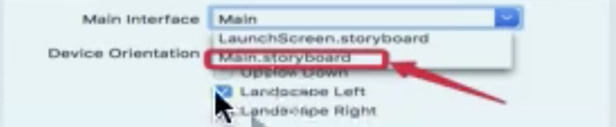
<strong>- 6.然后创建一个UIWindow,再找到里面箭头指向的ViewController,并添加到window上显示管理软件页面</strong></li>
<li><strong>7.当程序启动后，通知 AppDelegate对象 程序加载完成application:didFinishLaunchingWithOptions: 。</strong>
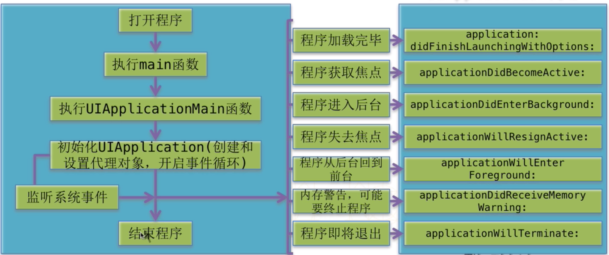</li>
</ul>
<h5 id="3---__objc__">3. 在编译文件时 系统会自动在每一个文件中定义一个宏 <strong>OBJC</strong></h5>
<pre><code class="lang-OBJC"><span class="hljs-preprocessor">#define __OBJC__</span>
</code></pre>
<h4 id="4-app-icon-">4. 设置app icon 上的提示数字</h4>
<pre><code class="lang-OBJC">    <span class="hljs-built_in">UIApplication</span> * app = [<span class="hljs-built_in">UIApplication</span> sharedApplication];

    <span class="hljs-comment">// 在设置 app icon 上的提示数据时， 先必须注册一下用户通知</span>
    UIUserNotificationSettings * settings = [UIUserNotificationSettings settingsForTypes:UIUserNotificationTypeBadge categories:<span class="hljs-literal">nil</span>];
    [app registerUserNotificationSettings:settings];

    app<span class="hljs-variable">.applicationIconBadgeNumber</span> = <span class="hljs-number">10</span>;
</code></pre>
<h4 id="5--status-bar--view-controller--status-bar--uiapplication-">5. 系统默认把状态栏 status bar 交给 view controller 来管理，改变这种管理对象（把 status bar 交给 UIApplication 来管理）</h4>
<ul>
<li><p>在项目中 ifno.plist 中添加一个配制等于 NO</p>
<p>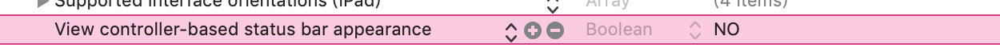</p>
</li>
</ul>
<h2 id="">二、读写数据到本地</h2>
<h3 id="1plist">1.读写plist文件</h3>
<ul>
<li><p>1&gt; NSArray 或  NSDictionary 转成 .plist 文件</p>
<pre><code class="lang-objc">  <span class="hljs-built_in">NSArray</span>&lt;<span class="hljs-built_in">NSDictionary</span> *&gt; * persons = @[
                                      @{
                                        <span class="hljs-string">@"name"</span>:<span class="hljs-string">@"qj"</span>,
                                        <span class="hljs-string">@"age"</span> :@<span class="hljs-number">18</span>,
                                        <span class="hljs-string">@"high"</span>:@<span class="hljs-number">180</span>
                                        },
                                        @{                                                        <span class="hljs-string">@"name"</span>:<span class="hljs-string">@"qj2"</span>,
                                            <span class="hljs-string">@"age"</span> :@<span class="hljs-number">18</span>,
                                            <span class="hljs-string">@"high"</span>:@<span class="hljs-number">180</span>
                                            }
                                      .........
                                      ];

  <span class="hljs-comment">// 写入到plist文件中</span>
  <span class="hljs-built_in">NSString</span> * path = [[<span class="hljs-built_in">NSBundle</span> mainBundle] pathForResource:<span class="hljs-string">@"persons"</span> ofType:<span class="hljs-string">@"plist"</span>];
 <span class="hljs-built_in">BOOL</span> flag = [persons writeToFile:path atomically:<span class="hljs-literal">YES</span>];
 <span class="hljs-keyword">if</span>(flag){
  <span class="hljs-built_in">NSLog</span>(<span class="hljs-string">@"%@"</span>,<span class="hljs-string">@"已经写入plist文件"</span>)
 }
</code></pre>
</li>
<li><p>把 plist 中数据转成NSArray 或 NSDictionary</p>
</li>
</ul>
<pre><code class="lang-objc"><span class="hljs-built_in">NSString</span> * path = [[<span class="hljs-built_in">NSBundle</span> mainBundle] pathForResource:<span class="hljs-string">@"persons"</span> ofType:<span class="hljs-string">@"plist"</span>];

<span class="hljs-built_in">NSArray</span>&lt;<span class="hljs-built_in">NSDictionary</span> *&gt; * persons = [<span class="hljs-built_in">NSArray</span> arrayWithContentsOfFile:path];
<span class="hljs-built_in">NSLog</span>(<span class="hljs-string">@"%@"</span>,persons);
</code></pre>
<ul>
<li><p><strong>NSCache 类</strong></p>
<ul>
<li><p>介绍</p>
<ul>
<li><p>NSCache 的 Key 只是<strong>对 objc 做强引用，而不是拷贝</strong>; <strong>类似于NSDictionary用法</strong>，但不需像 NSDictionary 实现 NSCopying 协议，<strong>NSDictionary 是对 value 进行拷贝存储</strong></p>
</li>
<li><p>NSCache 在系统内存很低时，会自动释放一些对象</p>
</li>
<li><p><strong>备注</strong>：这句话源自苹果的官方文档，不过在模拟器中模拟内存警告时，缓存不会做清理动作 为了确保接收到内存警告时能够真正释放内存，<strong>最好调用一下 removeAllObjects 方法</strong></p>
</li>
<li><p><strong>NSCache 是线程安全的</strong>，在多线程读写数据操作中，<strong>不需要对 Cache 加锁</strong></p>
</li>
</ul>
</li>
<li><p>属性 与 方法</p>
<pre><code class="lang-objc">  <span class="hljs-comment">// 代理，当 objc 被删除时调用代理方式</span>
  <span class="hljs-keyword">@property</span> (nullable, <span class="hljs-keyword">assign</span>) <span class="hljs-keyword">id</span>&lt;NSCacheDelegate&gt; delegate;

  <span class="hljs-comment">// 取数据</span>
  - (nullable ObjectType)objectForKey:(KeyType)key;

  <span class="hljs-comment">// 写数据</span>
  - (<span class="hljs-keyword">void</span>)setObject:(ObjectType)obj forKey:(KeyType)key; <span class="hljs-comment">// 0 cost</span>
  <span class="hljs-comment">// cost 花费：第一个对象自己给定一个消耗值，该方法与totalCostLimit 配合使用</span>
  - (<span class="hljs-keyword">void</span>)setObject:(ObjectType)obj forKey:(KeyType)key cost:(NSUInteger)g;

  <span class="hljs-comment">// 删除所有存入的对象</span>
  - (<span class="hljs-keyword">void</span>)removeAllObjects;

  <span class="hljs-comment">// 总花费，当写入的对象 花费总和 &gt; totalCostLimit 时，会自动删除最先写入的对象</span>
  <span class="hljs-keyword">@property</span> NSUInteger totalCostLimit ;    <span class="hljs-comment">// limits are imprecise/not strict</span>
  <span class="hljs-keyword">@property</span> NSUInteger countLimit;    <span class="hljs-comment">// limits are imprecise/not strict</span>
  <span class="hljs-keyword">@property</span> <span class="hljs-built_in">BOOL</span> evictsObjectsWithDiscardedContent;
</code></pre>
</li>
</ul>
</li>
</ul>
<ul>
<li>类在创建对象时调用 alloc ，其里面是调用了 +(instancetype)allocWithZone:(struct _NSZone *)zone 方法创建对象</li>
</ul>
<h3 id="2-">2. 沙盒存取</h3>
<ul>
<li><p><strong>应用沙盒结构</strong></p>
<ul>
<li><p><strong>沙盒根目录 ：NSHomeDirectory()</strong></p>
<ul>
<li><p><strong>Documents</strong> : 保存应用运行时所生成的<strong>需要持久化数据</strong>，iTunes 同步设备时会<strong>同备份步该目录数据</strong>；</p>
<pre><code class="lang-objc"><span class="hljs-built_in">NSString</span> * documentPath = [NSHomeDirectory() stringByAppendingPathComponent:<span class="hljs-string">@"Document"</span>];
</code></pre>
</li>
<li><p><strong>tem</strong> :保存应用运行时所需的 <strong>临时数据</strong>，使用完毕后再将相应的数据文件从该目录下删除，应用没有运行时，系统也<strong>可能</strong>会清除该目录下的文件，iTunes <strong>不会同步备份该目录</strong>；</p>
<pre><code class="lang-objc">NSTemporaryDirectory()
</code></pre>
</li>
<li><p><strong>Library/Caches</strong> : 保存应用运行时生成的<strong>需要持久化数据</strong>，iTunes 同步设备时<strong>不会同步备份该目录</strong>，一般存储大体积，不需要备份的非重要数据；</p>
<pre><code class="lang-objc">  <span class="hljs-comment">// 获取 caches 目录的路径</span>
  <span class="hljs-built_in">NSString</span> * cachesPath =  NSSearchPathForDirectoriesInDomains(NSCachesDirectory, NSUserDomainMask, <span class="hljs-literal">YES</span>);
</code></pre>
</li>
<li><p><strong>Library/Preferences</strong> : 保存应用的<strong>偏好设置</strong>，iOS 的 settings 设置应用会在该目录下查找应用的设置信息。iTunes 在同步设置时 <strong>会同步备份</strong>该目录</p>
<pre><code class="lang-objc"><span class="hljs-comment">// 1. 存储到 Library/Preferetce , 存储时是以字典存的</span>
<span class="hljs-built_in">NSUserDefaults</span> * userDefaults = [<span class="hljs-built_in">NSUserDefaults</span> standardUserDefaults];
[userDefaults setObject:<span class="hljs-string">@"qujie"</span> forKey:<span class="hljs-string">@"name"</span>];
[userDefaults setInteger:<span class="hljs-number">19</span> forKey:<span class="hljs-string">@"age"</span>];
<span class="hljs-comment">// 同步一下</span>
[userDefaults synchronize];

<span class="hljs-comment">// 2. 读取数据</span>
<span class="hljs-built_in">NSString</span> * name = [userDefaults objectForKey:<span class="hljs-string">@"name"</span>];
<span class="hljs-built_in">NSInteger</span> age = [userDefaults integerForKey:<span class="hljs-string">@"age"</span>];
<span class="hljs-built_in">NSLog</span>(<span class="hljs-string">@"name = %@ , age = %ld"</span>,name , age);
</code></pre>
</li>
</ul>
</li>
</ul>
</li>
<li><p><strong>归档 NSKeyedArchiver 和 解档 NSKeyedUnarchiver</strong></p>
<ul>
<li>1.把某个模型归档，就先遵守 NSCoding 协议</li>
<li>2.在模型中 实现 NSCoding 协议中的两个方法</li>
<li>3.使用 NSKeyedArchiver 归档对象 和 NSKeyedUnarchiver 解档对象</li>
</ul>
</li>
</ul>
<pre><code class="lang-objc"><span class="hljs-comment">// 狗类型,要归档和解档的对象类型</span>
<span class="hljs-class"><span class="hljs-keyword">@interface</span> <span class="hljs-title">Dog</span> : <span class="hljs-title">NSObject</span>&lt;<span class="hljs-title">NSCoding</span>&gt;</span>
<span class="hljs-keyword">@property</span> (<span class="hljs-keyword">nonatomic</span> , <span class="hljs-keyword">copy</span>) <span class="hljs-built_in">NSString</span> * dogName ;
<span class="hljs-keyword">@property</span> (<span class="hljs-keyword">nonatomic</span> , <span class="hljs-keyword">assign</span>) <span class="hljs-built_in">NSInteger</span> dogAge ;
<span class="hljs-keyword">@end</span>
<span class="hljs-class"><span class="hljs-keyword">@implementation</span> <span class="hljs-title">Dog</span></span>
<span class="hljs-comment">// 归档所需的方法</span>
-(<span class="hljs-keyword">void</span>)encodeWithCoder:(NSCoder *)aCoder
{
    <span class="hljs-keyword">if</span> (<span class="hljs-keyword">self</span><span class="hljs-variable">.dogName</span>) {
        [aCoder encodeObject:<span class="hljs-keyword">self</span><span class="hljs-variable">.dogName</span> forKey:<span class="hljs-string">@"dogName"</span>];
    }
    [aCoder encodeInteger:<span class="hljs-keyword">self</span><span class="hljs-variable">.dogAge</span> forKey:<span class="hljs-string">@"dogAge"</span>];
}
<span class="hljs-comment">// 解档所需的方法</span>
-(instancetype)initWithCoder:(NSCoder *)aDecoder
{
    <span class="hljs-keyword">if</span> (<span class="hljs-keyword">self</span> = [<span class="hljs-keyword">super</span> init]) {
        <span class="hljs-keyword">self</span><span class="hljs-variable">.dogName</span> = [aDecoder decodeObjectForKey:<span class="hljs-string">@"dogName"</span>];
        <span class="hljs-keyword">self</span><span class="hljs-variable">.dogAge</span> = [aDecoder decodeIntegerForKey:<span class="hljs-string">@"dogAge"</span>];
    }
    <span class="hljs-keyword">return</span> <span class="hljs-keyword">self</span>;
}
-(<span class="hljs-built_in">NSString</span> *)description
{
    <span class="hljs-keyword">return</span> [<span class="hljs-built_in">NSString</span> stringWithFormat:<span class="hljs-string">@"dogName = %@ , dogAge = %ld"</span>,<span class="hljs-keyword">self</span><span class="hljs-variable">.dogName</span> , <span class="hljs-keyword">self</span><span class="hljs-variable">.dogAge</span>];
}
<span class="hljs-keyword">@end</span>

<span class="hljs-comment">// 人类型,要归档和解档的对象类型</span>
<span class="hljs-class"><span class="hljs-keyword">@interface</span> <span class="hljs-title">Person</span> : <span class="hljs-title">NSObject</span>&lt;<span class="hljs-title">NSCoding</span>&gt;</span>
<span class="hljs-keyword">@property</span> (<span class="hljs-keyword">nonatomic</span> , <span class="hljs-keyword">copy</span>) <span class="hljs-built_in">NSString</span> * name ;
<span class="hljs-keyword">@property</span> (<span class="hljs-keyword">nonatomic</span> , <span class="hljs-keyword">assign</span>) <span class="hljs-built_in">NSInteger</span> age ;
<span class="hljs-keyword">@property</span> (<span class="hljs-keyword">nonatomic</span> , <span class="hljs-keyword">strong</span>) Dog * dog ;
<span class="hljs-keyword">@end</span>
<span class="hljs-class"><span class="hljs-keyword">@implementation</span> <span class="hljs-title">Person</span></span>
<span class="hljs-comment">// 归档所需的方法</span>
-(<span class="hljs-keyword">void</span>)encodeWithCoder:(NSCoder *)aCoder
{
    <span class="hljs-keyword">if</span> (<span class="hljs-keyword">self</span><span class="hljs-variable">.name</span>) {
        [aCoder encodeObject:<span class="hljs-keyword">self</span><span class="hljs-variable">.name</span> forKey:<span class="hljs-string">@"name"</span>];
    }
    [aCoder encodeInteger:<span class="hljs-keyword">self</span><span class="hljs-variable">.age</span> forKey:<span class="hljs-string">@"age"</span>];
    <span class="hljs-comment">// 执行这行代码时，会自动调用 Dog 对象的 encodeWithCoder: 方法</span>
    [aCoder encodeObject:<span class="hljs-keyword">self</span><span class="hljs-variable">.dog</span> forKey:<span class="hljs-string">@"dog"</span>];
}
<span class="hljs-comment">// 解档所需的方法</span>
-(instancetype)initWithCoder:(NSCoder *)aDecoder
{
    <span class="hljs-keyword">if</span> (<span class="hljs-keyword">self</span> = [<span class="hljs-keyword">super</span> init]) {
        <span class="hljs-keyword">self</span><span class="hljs-variable">.name</span> = [aDecoder decodeObjectForKey:<span class="hljs-string">@"name"</span>];
        <span class="hljs-keyword">self</span><span class="hljs-variable">.age</span> = [aDecoder decodeIntegerForKey:<span class="hljs-string">@"age"</span>];
        <span class="hljs-comment">// 执行这行代码时，会自动调用 Dog 对象的 initWithCoder: 方法</span>
        <span class="hljs-keyword">self</span><span class="hljs-variable">.dog</span> = [aDecoder decodeObjectForKey:<span class="hljs-string">@"dog"</span>];
    }
    <span class="hljs-keyword">return</span> <span class="hljs-keyword">self</span>;
}
-(<span class="hljs-built_in">NSString</span> *)description{
    <span class="hljs-keyword">return</span> [<span class="hljs-built_in">NSString</span> stringWithFormat:<span class="hljs-string">@"name = %@ , age = %ld , dog = %@"</span>,<span class="hljs-keyword">self</span><span class="hljs-variable">.name</span> , <span class="hljs-keyword">self</span><span class="hljs-variable">.age</span> , <span class="hljs-keyword">self</span><span class="hljs-variable">.dog</span>];
}
<span class="hljs-keyword">@end</span>


<span class="hljs-class"><span class="hljs-keyword">@interface</span> <span class="hljs-title">ArchivingViewController</span> ()</span>

<span class="hljs-keyword">@end</span>

<span class="hljs-class"><span class="hljs-keyword">@implementation</span> <span class="hljs-title">ArchivingViewController</span></span>

- (<span class="hljs-keyword">void</span>)viewDidLoad {
    [<span class="hljs-keyword">super</span> viewDidLoad];
    <span class="hljs-comment">// Do any additional setup after loading the view.</span>

    <span class="hljs-built_in">UIButton</span> * buttonSave = [<span class="hljs-built_in">UIButton</span> buttonWithType:UIButtonTypeSystem];
    [buttonSave setTitle:<span class="hljs-string">@"save"</span> forState:UIControlStateNormal];
    [buttonSave addTarget:<span class="hljs-keyword">self</span> action:<span class="hljs-keyword">@selector</span>(save) forControlEvents:UIControlEventTouchUpInside];
    buttonSave<span class="hljs-variable">.frame</span> = CGRectMake(<span class="hljs-number">100</span>, <span class="hljs-number">300</span>, <span class="hljs-number">60</span>, <span class="hljs-number">40</span>);
    [<span class="hljs-keyword">self</span><span class="hljs-variable">.view</span> addSubview:buttonSave];

    <span class="hljs-built_in">UIButton</span> * buttonRead = [<span class="hljs-built_in">UIButton</span> buttonWithType:UIButtonTypeSystem];
    [buttonRead setTitle:<span class="hljs-string">@"read"</span> forState:UIControlStateNormal];
    [buttonRead addTarget:<span class="hljs-keyword">self</span> action:<span class="hljs-keyword">@selector</span>(read) forControlEvents:UIControlEventTouchUpInside];
    buttonRead<span class="hljs-variable">.frame</span> = CGRectMake(<span class="hljs-number">200</span>, <span class="hljs-number">300</span>, <span class="hljs-number">60</span>, <span class="hljs-number">40</span>);
    [<span class="hljs-keyword">self</span><span class="hljs-variable">.view</span> addSubview:buttonRead];
}

-(<span class="hljs-keyword">void</span>)save
{
    Person * person = [[Person alloc] init];
    person<span class="hljs-variable">.name</span> = <span class="hljs-string">@"qujie"</span>;
    person<span class="hljs-variable">.age</span>  = <span class="hljs-number">19</span> ;
    person<span class="hljs-variable">.dog</span> = [[Dog alloc] init];
    person<span class="hljs-variable">.dog</span><span class="hljs-variable">.dogName</span> = <span class="hljs-string">@"xiao huang"</span>;
    person<span class="hljs-variable">.dog</span><span class="hljs-variable">.dogAge</span> = <span class="hljs-number">2</span> ;

    <span class="hljs-comment">// 归档 NSKeyedArchiver</span>
    <span class="hljs-built_in">NSString</span> * path = [NSTemporaryDirectory() stringByAppendingPathComponent:<span class="hljs-string">@"Person.data"</span>];
    [NSKeyedArchiver archiveRootObject:person toFile:path];
}
-(<span class="hljs-keyword">void</span>)read
{
    <span class="hljs-comment">// 解档 NSKeyedUnarchiver</span>
    <span class="hljs-built_in">NSString</span> * path = [NSTemporaryDirectory() stringByAppendingPathComponent:<span class="hljs-string">@"Person.data"</span>];

    Person * person = [NSKeyedUnarchiver unarchiveObjectWithFile:path];

    <span class="hljs-built_in">NSLog</span>(<span class="hljs-string">@"%@"</span>,person);
}
<span class="hljs-keyword">@end</span>
</code></pre>
<h3 id="3--xib">3.  XIB两种加载方式</h3>
<pre><code class="lang-objc">    <span class="hljs-comment">// 第一种方式</span>
    <span class="hljs-built_in">NSArray</span> * views = [[<span class="hljs-built_in">NSBundle</span> mainBundle] loadNibName:<span class="hljs-string">@"xib名称"</span> owner:<span class="hljs-literal">nil</span> options:<span class="hljs-literal">nil</span>];

    <span class="hljs-comment">//第二种方式</span>
    UINib * nib = [UINib nibWithNibName:<span class="hljs-string">@"xib名称"</span> bundle:<span class="hljs-literal">nil</span>]; <span class="hljs-comment">// nil 表示当前项目路径</span>
    <span class="hljs-built_in">NSArray</span> * views = [nib instantiateWithOwner:<span class="hljs-literal">nil</span> options:<span class="hljs-literal">nil</span>];
</code></pre>
<h3 id="4-uiviewcontroller-xib--init">4. UIViewController 的xib 加载就只需要调用 init</h3>
<ul>
<li>因为 init 方法是先去找对应的 控制器名称.storyboard 或者 .xib , 然后调用 【- initWithNibName:xxx bundle:(nullable NSBundle *)】加载</li>
<li><p>如果没有找到对应的 storyboard 或者 xib 就会创建一个控制器</p>
</li>
<li><p>控制器中的 view 是通过懒加载的方式创建，会调用 - loadView （在该方法中可以自定义一个view）</p>
</li>
<li>当果调用 UIViewController 的 -loadViewIfNeeded 后，在还没有加载控制器的view时就会自动去加载view然后赋值给控制器。</li>
</ul>
<h3 id="5-uiwindow-">5 UIWindow 成为主窗口</h3>
<ul>
<li>创建 UIWindow</li>
<li>设置根控制器 rootViewController</li>
<li>设置当前创建的 UIWindow 成为主窗口 -makeKeyAndVisible。<ul>
<li>把当前window 赋值给 [UIApplication sharedApplication].keyWindow 对象。</li>
<li>加载控制器的 view 并添加到 window 上。</li>
</ul>
</li>
</ul>
<h2 id="foundation-">三、Foundation 框架</h2>
<h3 id="1-">1. 描述这个被废弃的方法或都是属性</h3>
<pre><code class="lang-objc">NS_DEPRECATED_IOS(<span class="hljs-number">6</span>_0, <span class="hljs-number">9</span>_0, <span class="hljs-string">"描述这个被废弃的方法或都是属性，指向被什么替代"</span>)
</code></pre>
<h3 id="2-nsstring-size">2. NSString 对象计算真实的Size</h3>
<pre><code class="lang-objc">[<span class="hljs-string">@"我是要被计算真实大小的字符串"</span> boundingRectWithSize:CGSizeMake(CGFLOAT_MAX, CGFLOAT_MAX) options:NSStringDrawingUsesLineFragmentOrigin attributes:@{NSFontAttributeName:[<span class="hljs-built_in">UIFont</span> systemFontOfSize:<span class="hljs-number">18</span>]} context:<span class="hljs-literal">nil</span>];
</code></pre>
<h3 id="3-automatic-layout--frame">3. automatic layout 自动布局实质是 设置frame</h3>
<ul>
<li>automatic layout 设置的布局在view 调用 layoutSubviews 方法后系统会自动转化成 frame</li>
</ul>
<h3 id="4--layoutifneeded-">4. 在自动布局调用 layoutIfNeeded 的作用</h3>
<ul>
<li>自动布局最终的</li>
<li>问题：怎样在使用了自动布局后取到对应的frame<pre><code class="lang-objc"><span class="hljs-comment">// 前提1：当view中的子控件使用了自动布局</span>
<span class="hljs-comment">// 当view 调用了[view layoutIfNeeded]后，系统会自动去调用[view layoutSubviews],然后计算view中子控件的frame</span>
[<span class="hljs-keyword">self</span><span class="hljs-variable">.view</span> layoutIfNeeded];
<span class="hljs-comment">// 然后就可以取到view中子控件的frame(除了UILabel对象特别一些)</span>
</code></pre>
<pre><code class="lang-objc"><span class="hljs-comment">// 需要设置UILabel对象的最大 MaxWidth 方法</span>
<span class="hljs-built_in">UILabel</span> * autLayoutLabel = [[<span class="hljs-built_in">UILabel</span> alloc]init];
autLayoutLabel<span class="hljs-variable">.text</span> = <span class="hljs-string">@"....."</span>;
<span class="hljs-comment">// 设置 autLayoutLabel 对象文字内容最大的显示宽度</span>
autLayoutLabel<span class="hljs-variable">.preferredMaxLayoutWidth</span> = <span class="hljs-number">100</span> ;
<span class="hljs-comment">// 最后再取 autLayoutLabel.frame 位置</span>
</code></pre>
</li>
</ul>
<h3 id="5-kvo-">5. KVO 知识点</h3>
<pre><code class="lang-objc">    <span class="hljs-comment">// 1.当tableView调用了这个方法让 self 对象去监听属性后，系统会自动创建一个 NSKVONotifying_UITableView的类型</span>
    <span class="hljs-comment">// 2. 重定监听的属性 setter 方法，然后去实现KVO</span>
    [<span class="hljs-keyword">self</span><span class="hljs-variable">.tableView</span>  addObserver:<span class="hljs-keyword">self</span> forKeyPath:<span class="hljs-string">@"contentOffset"</span> options:NSKeyValueChangeNewKey context:<span class="hljs-literal">nil</span>];

    <span class="hljs-built_in">NSLog</span>(@“真实类型isa = %@”,<span class="hljs-keyword">self</span><span class="hljs-variable">.tableView</span>);

    <span class="hljs-comment">// 2.实现KVO监听</span>
    -(<span class="hljs-keyword">void</span>)observeValueForKeyPath:(<span class="hljs-built_in">NSString</span> *)keyPath ofObject:(<span class="hljs-keyword">id</span>)object change:(<span class="hljs-built_in">NSDictionary</span>&lt;NSKeyValueChangeKey,<span class="hljs-keyword">id</span>&gt; *)change context:(<span class="hljs-keyword">void</span> *)context
{
    <span class="hljs-built_in">NSLog</span>(<span class="hljs-string">@"key = %@ , obj = %@ , change = %@"</span>,keyPath,object,change);
}


    <span class="hljs-comment">// 3. 移除KVO</span>
    [<span class="hljs-keyword">self</span><span class="hljs-variable">.tableView</span> removeObserver:<span class="hljs-keyword">self</span> forKeyPath:<span class="hljs-string">@"contentOffset"</span>];
</code></pre>
<h3 id="6-kvc">6. KVC</h3>
<pre><code class="lang-objc">    <span class="hljs-comment">// 1. 取出字典里面的每对 key 和 value</span>
    <span class="hljs-comment">// 2. 然后再找 objct 中对应的成员变量然后赋值 setValue: forKey:</span>
    <span class="hljs-comment">//   2.1 如果没有找到该成员变量setter 方法名，就会去找 下划线成员变量；</span>
    <span class="hljs-comment">//   2.2 如果找不到下划线成员变量，就会去找 同名的成员变量</span>
    <span class="hljs-comment">//   2.3 再果还是找不到的话就直接抛出异常。</span>
    [objct setValuesForKeysWithDictionary:dic];


    <span class="hljs-comment">// 找 objct 中对应的成员变量（找不到就层层递归）然后赋值 setValue: forKey:</span>
    [objct setValue:value forKeyPath:key];
</code></pre>
<h3 id="7-">7. 判断一个对象是否实现了某个方法</h3>
<pre><code class="lang-objc">    [<span class="hljs-keyword">self</span> respondsToSelector:<span class="hljs-keyword">@selector</span>(xxxxx)]
</code></pre>
<h3 id="8-qjlog">8. 自定义QJLog(...)</h3>
<pre><code class="lang-objc"><span class="hljs-comment">// 放在 PCH 文件中</span>
<span class="hljs-preprocessor">#define QJLog(...)  NSLog(__VA_ARGS__)</span>
</code></pre>
<h3 id="9-block">9. block</h3>
<ul>
<li><p>block的循环引用解决方法</p>
<pre><code class="lang-objc">__<span class="hljs-keyword">weak</span> <span class="hljs-keyword">typeof</span>(<span class="hljs-keyword">self</span>) weakSelf = <span class="hljs-keyword">self</span> ;

<span class="hljs-comment">// 或者</span>
__unsafe_unretained <span class="hljs-keyword">typeof</span>(<span class="hljs-keyword">self</span>) weakSelf = <span class="hljs-keyword">self</span> ;
</code></pre>
</li>
</ul>
<p>#</p>
<h3 id="10-">10. 多线程</h3>
<ul>
<li><strong>一个应用至少有一个或多个进程，且一个进程中至少有一个或多个线程</strong></li>
<li><strong>进程是CPU分配资源和调度的单位</strong></li>
<li><strong>线程是CPU调用(执行任务)的最小单位</strong></li>
<li><strong>CPU分配给进程的资源，在当前进程内的多个线程是共享进程中的资源</strong>
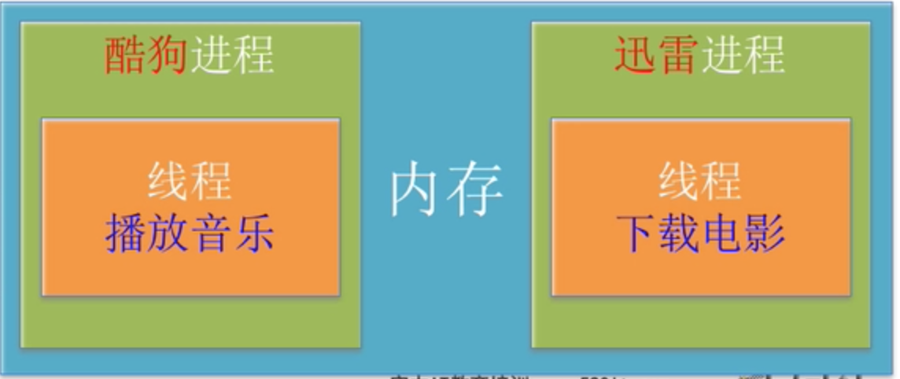<h4 id="">进程</h4>
</li>
<li>一个程序至少有一个进程</li>
<li>一个进程中至少有一个或多个线程</li>
<li>进程是CPU分配资源和调度的单位</li>
<li><p>每个<strong>进程之间是独立的，每个进程均运行在其专用且受保护的内存空间内</strong></p>
</li>
<li><p><strong>线程</strong></p>
<ul>
<li>线程是添加到线程池中被调度执行(同步 或 异步)任务</li>
<li>一个进程必须依靠线程来执行任务</li>
<li><p>线程中的多个任务是串行执行的，即在一个线程内同一时间只能执行一个任务</p>
</li>
<li><p>主线程：用来处理UI 和 UI相关事件</p>
</li>
<li>子线程：即非主线程 或 后台线程，用来处理比较耗时的任务</li>
<li>当线程空闲后，发果后面还有任务，又重新被利用起来</li>
</ul>
</li>
<li><p><strong>多线程</strong></p>
<ul>
<li><p>单个CPU内调度的一个进程中有多个线程，每条线程可以并行（“同时”：虽然在同一时间只能执行一个线程，但可以在多个线程之间来回切换执行）执行不同的任务 ， 可以有效提高效率。</p>
</li>
<li><p>如果有多个CPU，那么就可以达到同一时间并发执行多个线程，</p>
</li>
<li><p><strong>优点与缺点</strong></p>
<ul>
<li><p>优点：</p>
<ul>
<li>能适当的提高资源利用率高</li>
<li>能适当的提高程序的执行效率</li>
</ul>
</li>
<li><p>缺点：</p>
<ul>
<li>创建的多个线程占用内存</li>
<li>创建太多的线程，会降低程序的性能</li>
<li>线程越多，CPU调度开销越大</li>
<li>程序设计的更复杂；比如线程之间的通信、多线程的数据共享</li>
</ul>
</li>
</ul>
</li>
<li><p>多线程管理情况：GCD，NSOperation 等
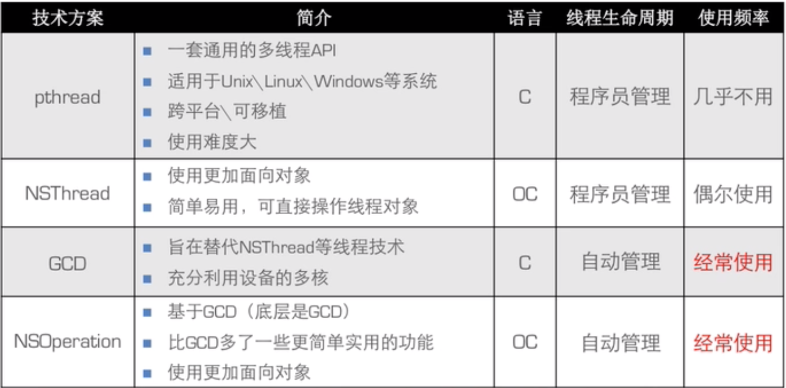</p>
</li>
<li><p><strong>线程的生命周期中的多种状态</strong></p>
<ul>
<li><p><strong>start 启动</strong>：线程开启执行任务，<strong>把当前线程添加到可调度的线程池中，进入就绪状态</strong>;</p>
</li>
<li><p><strong>Running 运行</strong>：CPU切换调度线程池中的线程来执行任务；</p>
</li>
<li><p><strong>sleep 阻塞</strong>：调用了 sleep方法 或 同等同步锁，这一步会将<strong>当前线程挂起（即 移出可调度的线程池，但还是存在内存中，等待下次被唤醒）</strong>；</p>
</li>
<li><p><strong>被唤醒</strong>：sleep 时间已经过了 或 锁被打开，这时<strong>当前线程重新添加到可被CPU调度的线程池中</strong>；</p>
</li>
<li><p><strong>exit 线程死亡</strong>：也就是任务完成后、被强制结束exit 或 出现异常时，当前线程就会从内存中被移除销毁，<strong>线程死亡是不可以再复用的，不然再用死亡线程执行任务会使程序崩溃</strong>。</p>
<p>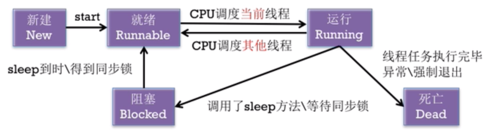</p>
</li>
</ul>
</li>
<li><p><strong>线程的安全性</strong></p>
<ul>
<li><p><strong>互斥锁</strong></p>
<ul>
<li><p><strong>线程同步</strong>：多线程在同一条线上按顺序地执行任务</p>
</li>
<li><p><strong>加锁方式</strong>：</p>
<pre><code class="lang-objc"><span class="hljs-comment">// 锁：必须是唯一的全局变量,objc 是被加锁的对象</span>
<span class="hljs-comment">// 1. 注意加锁的前提条件，多线程共享一块资源</span>
<span class="hljs-comment">// 2. 加锁是需要耗性能</span>
<span class="hljs-comment">// 3. 加锁的结果，多个线程是同步的，只有加锁的对象在加锁的代码块中用完后才被解锁，然后才轮到下一下线程用</span>
<span class="hljs-keyword">@synchronized</span> (objc) {
  <span class="hljs-comment">// 需要锁定的代码，这块代码是多个线程执行同一块代码</span>

  <span class="hljs-comment">// 注意：代码块执行完后，objc 对会被解锁</span>
}
</code></pre>
</li>
<li><p><strong>优点</strong>：可以有效的防止多个线程资源抢夺造成的数据安全问题</p>
</li>
<li><strong>缺点</strong>：需要不断的加锁 和 解锁，消耗大量的CPU资源</li>
</ul>
</li>
<li><p><strong>nonatomic 非原子 和 atomic 原子 属性</strong></p>
<ul>
<li><p><strong>atomic</strong> ：</p>
<ul>
<li>原子属性，<strong>为 setter 方法加锁</strong>（OC属性默认为 atomic）</li>
<li><strong>线程安全</strong>，需要消耗CPU资源</li>
</ul>
</li>
<li><p><strong>nonatomic</strong> :</p>
<ul>
<li>非原子属性，<strong>不会为 setter 加锁</strong></li>
<li><strong>非线程安全</strong>，适合内存小的移动设备</li>
</ul>
</li>
</ul>
</li>
</ul>
</li>
<li><p><strong>线程间通信</strong></p>
<ul>
<li><p>线程A 执行任务得到的一个结果Q，然后把结果Q传给 线程B，通知线程B 去做任务（经典通信就是：网络下载 然后把数据显示到UI上）
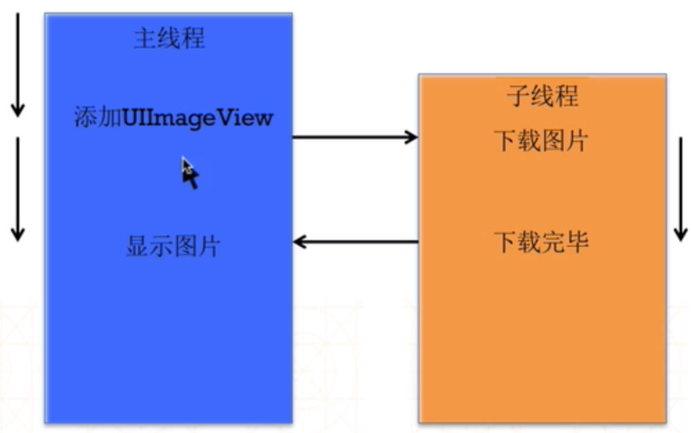</p>
<pre><code class="lang-objc"><span class="hljs-built_in">dispatch_queue_t</span> queue = dispatch_queue_create(<span class="hljs-string">"xxxQueue"</span>, DISPATCH_QUEUE_CONCURRENT);
<span class="hljs-built_in">dispatch_sync</span>(queue, ^{
  <span class="hljs-built_in">NSLog</span>(<span class="hljs-string">@"%@===="</span>,[<span class="hljs-built_in">NSThread</span> currentThread]);
  <span class="hljs-built_in">dispatch_async</span>(dispatch_get_main_queue(), ^{
     <span class="hljs-comment">// UI 在主线程操作,实现通讯</span>
  });
});
</code></pre>
</li>
<li><p>GCD 可以使用栅栏 或 组队列通知</p>
</li>
<li>NSOperation 可以使用 任务的依赖关系(不同队列内的任务是可以相互依赖，但不能形成循环依赖)</li>
</ul>
</li>
<li><p><strong>GCD</strong></p>
<ul>
<li>纯C语言，提够了许多非常强大的函数，可以说是中枢调度器</li>
<li><p><strong>GCD 的优势</strong></p>
<ul>
<li>CGD 是苹果公司为 <strong>多核</strong> 的 <strong>并行</strong> 运算提够解决方案</li>
<li><strong>GCD 会自动充分利用多核 同时进行处理任务</strong></li>
<li><strong>CGD会自动管理线程的生命周期</strong>（线程的创建、调度、销毁）</li>
</ul>
</li>
<li><p>队列 和 任务</p>
<ul>
<li>第一步：定制任务（即代码块）</li>
<li>第二步：<strong>GCD会自动将任务添加到队列中</strong><ul>
<li>CGD 在执行队列中的任务时，按照<strong>先进先取的原则执行</strong></li>
</ul>
</li>
</ul>
</li>
<li><p><strong>当前线程 执行任务的 方式</strong></p>
<ul>
<li><p><strong>同步</strong> 执行任务</p>
<ul>
<li><p>只能在<strong>当前线程</strong>中执行任务，<strong>不具备开启新线程的能力</strong></p>
</li>
<li><p>当前线程 只有把 同步任务 执行完后，才能执行下一个任务，不然就一直等队列把当前同步任务再次给当前线程执行完，当前线程才接着执行下一个任务</p>
<pre><code class="lang-objc"><span class="hljs-built_in">dispatch_sync</span>(<span class="hljs-built_in">dispatch_queue_t</span>  _Nonnull queue, ^{
<span class="hljs-comment">// 同步执行的任务</span>
})
</code></pre>
</li>
</ul>
</li>
<li><p><strong>异步</strong> 执行任务</p>
<ul>
<li><p>可以在<strong>新的线程</strong>中执行任务，<strong>具备</strong>开启新线程的能力</p>
</li>
<li><p>当前线程不用等异步任务执行，就可以执行下一条任务</p>
<pre><code class="lang-objc"><span class="hljs-built_in">dispatch_async</span>(<span class="hljs-built_in">dispatch_queue_t</span>  _Nonnull queue, ^{
<span class="hljs-comment">// 异步执行的任务</span>
})
</code></pre>
</li>
</ul>
</li>
<li><p><strong>队列类型</strong></p>
<ul>
<li>队列中的(同步 或 异步)任务 是在 当前线程中执行；除了主队列中的任务 只给主线程执行</li>
<li><p>创建队列</p>
<pre><code class="lang-objc"><span class="hljs-comment">// 参数1：队列的标识名 "xxxQueue"</span>
<span class="hljs-comment">// 参数2：队列类型，串行 和 并发队列</span>
dispatch_queue_create(<span class="hljs-keyword">const</span> <span class="hljs-keyword">char</span> * _Nullable <span class="hljs-built_in">UILabel</span>, dispatch_queue_attr_t  _Nullable attr)
</code></pre>
</li>
<li><p><strong>串行队列</strong></p>
<ul>
<li><p>表示：</p>
<pre><code class="lang-objc"><span class="hljs-comment">// 串行队列</span>
DISPATCH_QUEUE_SERIAL
</code></pre>
</li>
<li><p>让队列中的任务按串行的方式一个一个执行任务</p>
</li>
<li><strong>注意</strong>：就算是<strong>异步的任务</strong>，也是一个一个执行任务，但<strong>会开启一个子线程</strong></li>
</ul>
</li>
<li><p><strong>主队列</strong></p>
<ul>
<li><strong>注意</strong>：<strong>主队列中的任务 只 放在主线程中执行</strong>；且 主队列 检查到 主线程正在执行任务，那么就会暂停调度下一个任务，直到主线程没有在执行任务，才继续调度主队列中的(同步 或异步)任务 给 主线程执行</li>
</ul>
</li>
<li><p><strong>并发队列</strong></p>
<ul>
<li><p>表示 <strong>线程间的并发</strong>；而<strong>不是 任务间的并发</strong>；同步、异步任务是在队列的调度下，把任务给某个线程执行</p>
<pre><code class="lang-objc"><span class="hljs-comment">// 第1种：并行队列</span>
DISPATCH_QUEUE_CONCURRENT

<span class="hljs-comment">// 第2种：获取全局并发队列</span>
<span class="hljs-comment">// identifier：优先级，DISPATCH_QUEUE_PRIORITY_HIGH = 2、DEFAULT = 0、LOW = -2 和 BACKGROUND = 16位整数的最小值</span>
<span class="hljs-comment">// flags :  总是 = 0 ，用于将来被使用</span>
dispatch_get_global_queue(<span class="hljs-keyword">long</span> , <span class="hljs-keyword">unsigned</span> <span class="hljs-keyword">long</span> flags)
</code></pre>
</li>
<li><p>可以让多个任务并发（同时）执行，会自动开启多个线程同时执行任务</p>
</li>
<li><strong>注意</strong>：<strong>并发功能</strong> 只能<strong>在并发队列 且是在 异步(dispatch_async)</strong>函数下<strong>才有效</strong></li>
</ul>
</li>
</ul>
</li>
<li><p><strong>同步、异步函数 与 串行、并发队列 的关系</strong></p>
<ul>
<li><p><strong>(1) 异步函数 + 并发队列</strong>：<strong>开启多条子线程</strong>(子线程个数=不确定个数)，任<strong>务在对应的子线程按并发</strong>执行的</p>
</li>
<li><p><strong>(2) 异步函数 + 串行队列</strong>：<strong>只开启一条新的子线程</strong>，任务在子线程按串行执行的</p>
<ul>
<li><strong>特别注意</strong><ul>
<li><strong>异步函数 + 主队列：不会开启一条新的子线程，任务在主线程按串行执行</strong></li>
</ul>
</li>
</ul>
</li>
<li><p><strong>(3) 同步函数 + 并发队列</strong>：<strong>不会开启新的子线程</strong>，任务只在当前线程中 按<strong>串行</strong>执行任务</p>
</li>
<li><p><strong>(4) 同步函数 + 串行队列</strong>：不会开启新的子线程，任务按串行执行的</p>
<ul>
<li><p><strong>特别注意</strong></p>
<ul>
<li><p><strong>在主线程(main thread)中，如果在主队列(dispatch_get_main_queue() ) 中执行 同步的任务，那么会产生死锁，卡死主线程</strong></p>
<ul>
<li><p><strong>解释</strong>：主队列的特点 就是 如果<strong>主队列发现主线程有任务在执行时</strong>，那么<strong>主队列会暂停调用队列中的任务</strong>，<strong>等主线程没有在执行任务时再调度</strong>主队列中的任务，<strong>但是 主线程还在工作</strong>，一直要执行刚刚的block , <strong>所以等待形成了死循环，也就是死锁</strong></p>
<pre><code class="lang-objc"><span class="hljs-comment">// 当前线程是在主线程中，主线程中的少部分任务 被添加到 主队列中</span>
<span class="hljs-built_in">dispatch_queue_t</span> queue = dispatch_get_main_queue();
<span class="hljs-comment">// 1.主线程还要执行 block 任务；</span>
<span class="hljs-comment">// 2.但block 任务被添加到主队列中去了;</span>
<span class="hljs-comment">// 3.主队列检查到主线程还在任执行任务，以所先不急着调 block 任务 给 主线程执行；</span>
<span class="hljs-comment">// 4.但 主线程必须执行完 block 才空闲，所以在等 主队列调度 block 任务给自己(执行完这个block 就可以闲下来了);</span>
<span class="hljs-comment">// 5.最后结果：主队列 等 主线程，主线程 等 主队列，形成死锁！！！</span>
<span class="hljs-built_in">dispatch_sync</span>(queue, ^{
  <span class="hljs-built_in">NSLog</span>(<span class="hljs-string">@"%@===="</span>,[<span class="hljs-built_in">NSThread</span> currentThread]);
});
</code></pre>
</li>
<li><p><strong>如果不在 主线程中 执行上面的代码，那么就不会形成死锁</strong></p>
</li>
</ul>
</li>
</ul>
</li>
</ul>
</li>
<li><p><strong>GCD常用函数</strong></p>
<ul>
<li><p>单例(one) 函数：内部是加锁的</p>
<ul>
<li>在 <strong>非主队列</strong>中的<strong>同步方式(dispatch_sync)</strong>在当前线程执行任务<pre><code class="lang-objc"><span class="hljs-keyword">static</span> <span class="hljs-built_in">dispatch_once_t</span> onceToken;
<span class="hljs-comment">// 内部是 在 非主队列中的同步(dispatch_sync)执行任务</span>
<span class="hljs-built_in">dispatch_once</span>(&amp;onceToken, ^{
  <span class="hljs-built_in">NSLog</span>(<span class="hljs-string">@"只执行一次 ， 在当前线程 =  %@"</span>,[<span class="hljs-built_in">NSThread</span> currentThread]);
});
</code></pre>
</li>
</ul>
</li>
<li><p>延迟(after) 函数</p>
<ul>
<li><p>按 <strong>异步方式(dispatch_async)</strong> 执行任务</p>
<pre><code class="lang-objc"><span class="hljs-built_in">dispatch_queue_t</span> queue = dispatch_queue_create(<span class="hljs-string">"xxxx"</span>, DISPATCH_QUEUE_CONCURRENT);
<span class="hljs-comment">// 异步(dispatch_async) 方式执行任务</span>
dispatch_after(dispatch_time(DISPATCH_TIME_NOW, (int64_t)(<span class="hljs-number">2.0</span> * NSEC_PER_SEC)), queue, ^{
  <span class="hljs-comment">// queue = main queue , block任务 就是在 主线程 中执行</span>
  <span class="hljs-comment">// queue = 串行队列(DISPATCH_QUEUE_SERIAL) , 只开启一个新的子线程， block任务 就是在 新的子线程 中执行</span>
  <span class="hljs-comment">// queue = 并发队列(DISPATCH_QUEUE_CONCURRENT) ,开启多条新的子线程，block任务 就是在 新的子线程 中执行</span>
  <span class="hljs-built_in">NSLog</span>(<span class="hljs-string">@"1.当前线程 = %@"</span>,[<span class="hljs-built_in">NSThread</span> currentThread]);
});
</code></pre>
</li>
<li><p>栅栏(barrier) 函数</p>
<ul>
<li><p><strong>拦截 或 控制</strong> 队列中的 <strong>栅栏前任务组</strong> 和 <strong>栅栏后任务组</strong> 的 <strong>执行顺序</strong>，前任务组必须完全执行完后，才能接着执行后面的任务组</p>
</li>
<li><p><strong>注意</strong>：栅栏 在 全局并发队列中无法 控制前后任务组的 执行先后顺序</p>
<pre><code class="lang-objc"><span class="hljs-built_in">dispatch_queue_t</span> queue = dispatch_queue_create(<span class="hljs-string">"xxxQueue"</span>, DISPATCH_QUEUE_CONCURRENT);

<span class="hljs-comment">// 栅栏前添加到队列的 任务</span>

<span class="hljs-comment">// 栅栏: 拦截 或 控制 队列中的 栅栏前任务组 和 栅栏后任务组 的 执行顺序</span>
dispatch_barrier_sync(queue, ^{
  <span class="hljs-built_in">NSLog</span>(<span class="hljs-string">@"%@====栅栏 任务"</span>,[<span class="hljs-built_in">NSThread</span> currentThread]);
});

<span class="hljs-comment">// 栅栏后添加到队列的 任务</span>
</code></pre>
</li>
</ul>
</li>
<li><p>迭代(apply) 函数</p>
<ul>
<li><p><strong>循环执行 block 任务</strong>；传的 次数 决定重复多少次，队列 决定是否并发，苹果建议使用 DISPATCH_APPLY_AUTO ，并发执行的任务 <strong>比 for 循环要效率快</strong></p>
</li>
<li><p>任务的异步与同步性，取决 并发队列与串行队列</p>
<pre><code class="lang-objc"><span class="hljs-comment">// 迭代</span>
<span class="hljs-comment">// 参数1 iterations ： 迭代次数</span>
<span class="hljs-comment">// 参数2 queue      : 将任务放入队列  ，传入并发队列才有意，效率高 ，不然与 for 无差别</span>
<span class="hljs-comment">// 参数3 block      : 被线程执行的任务 , 如果加入到 并发队列就会是异步任务 ；如果加入到 串行队列就会是同步任务</span>
dispatch_apply(<span class="hljs-number">10</span>, dispatch_queue_create(<span class="hljs-number">0</span>, DISPATCH_QUEUE_CONCURRENT), ^(size_t index) {
  <span class="hljs-built_in">NSLog</span>(<span class="hljs-string">@"indx = %ld , thread = %@"</span>,index,[<span class="hljs-built_in">NSThread</span> currentThread]);
});
</code></pre>
</li>
</ul>
</li>
<li><p>组队列(group) 与 组通知(notify) 组合使用</p>
<ul>
<li><p>给合使用后 ，当组队列 中的 queue 内所有任务执行完后，就会调用 组通知</p>
<pre><code class="lang-objc"><span class="hljs-built_in">dispatch_queue_t</span> queue = dispatch_get_global_queue(<span class="hljs-number">0</span>, <span class="hljs-number">0</span>);
dispatch_group_t group = dispatch_group_create();
dispatch_group_async(group, queue, ^{
  <span class="hljs-comment">// queue 队列 中的 异步任务</span>
  <span class="hljs-built_in">NSLog</span>(<span class="hljs-string">@"1== %@"</span>,[<span class="hljs-built_in">NSThread</span> currentThread]);
});

<span class="hljs-comment">// 通知队列组 中的 queue 队列 的任务已经完全执行完</span>
dispatch_group_notify(group, queue, ^{
<span class="hljs-comment">// 当前线程 是最后一个执行完任务的线程</span>
<span class="hljs-built_in">NSLog</span>(<span class="hljs-string">@"group 的 queue 队列 中的任务已经完成执行 === %@"</span>,[<span class="hljs-built_in">NSThread</span> currentThread]);
});

<span class="hljs-comment">// DISPATCH_TIME_FOREVER 永远等待</span>
<span class="hljs-comment">// 只有把 group 中所有队列的任务执行完才，执行接下来 founction 方法剩于代码，但剩于代码还是在 通知(notify) 函数 之前执行</span>
dispatch_group_wait(group, DISPATCH_TIME_FOREVER);
<span class="hljs-built_in">NSLog</span>(<span class="hljs-string">@"founction 完结======="</span>);
</code></pre>
</li>
</ul>
</li>
</ul>
</li>
</ul>
</li>
<li><p><strong>(5)总结</strong></p>
<ul>
<li><p><strong>主队列</strong> 中的<strong>任务</strong>(同步或异步) 都是放<strong>在主线程中串行执行</strong>(主线程正在执行某一个任务时，<strong>必须等到任务执行完毕后才会执行下一个任务</strong>)</p>
</li>
<li><p><strong>串行队列</strong> 中的任务都是一个一个<strong>串行执行任务(不管是 同步或异步 任务)</strong></p>
</li>
<li><p><strong>并发队列</strong>(指的是线程间的并发，而不是任务间的并发) <strong>决定开一条或多条线程</strong>，<strong>异步、同步函数决定是否开新的线程</strong></p>
</li>
</ul>
<p></p>
<ul>
<li>执行任务大概的整体流程图
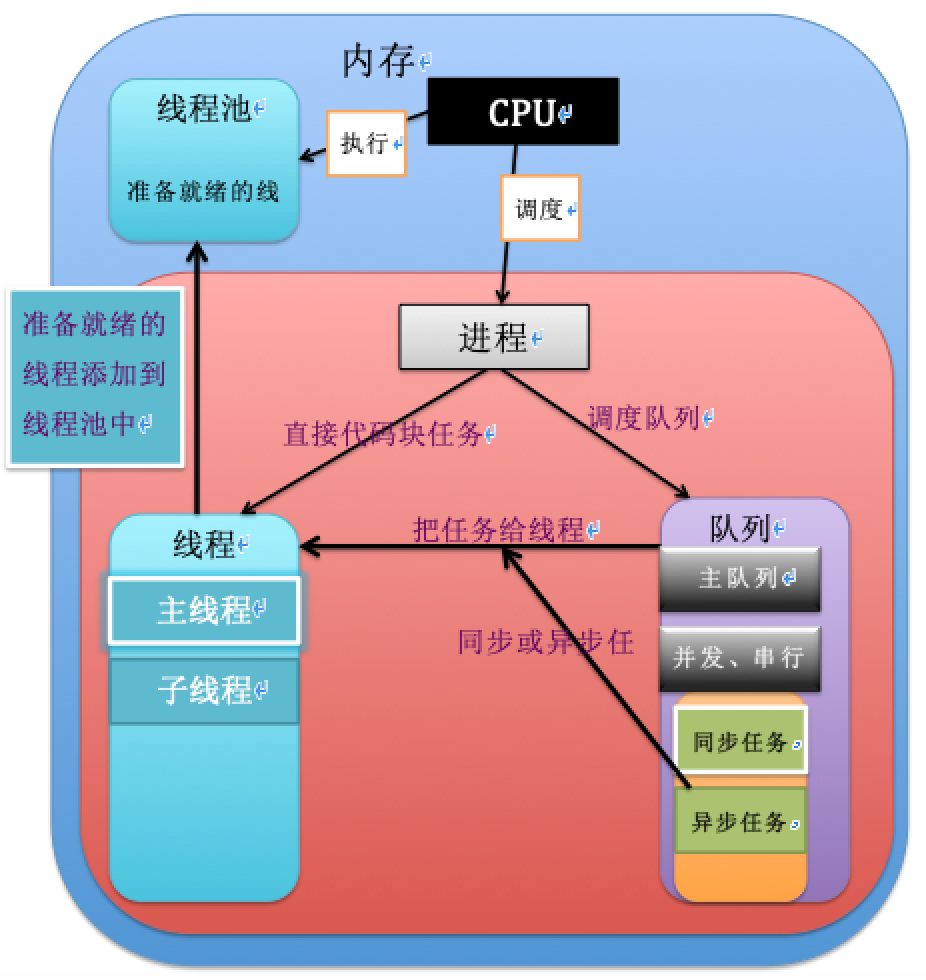</li>
</ul>
</li>
</ul>
</li>
</ul>
</li>
</ul>
</li>
</ul>
</li>
<li><p><strong>RunLoop 运行循环</strong></p>
<ul>
<li><p><strong>1. 基本作用</strong></p>
<ul>
<li>保持程序(进程)的<strong>持续运行,内部做了 do{...}while(判断runloop是否结束 或 退出)</strong></li>
<li><strong>监听处理App中各种事件</strong>(如 触摸事件、定时器事件、selector 等)</li>
<li>节省CPU资源，<strong>提高程序性能</strong>；即该做事时就启动，该休息时就停止
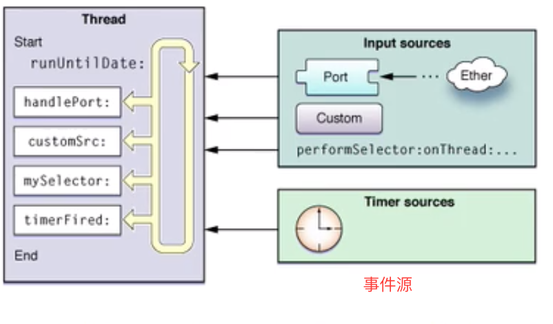</li>
</ul>
</li>
<li><p><strong>2. RunLoop 与 线程 关系</strong></p>
<ul>
<li><p>(1) 每一条线程都有一个<strong>唯一与之对应</strong>的 RunLoop，当子线程添加了RunLoop时，该子线程可以一直存在</p>
</li>
<li><p>(2) 主线程的 RunLoop 系统自动创建好了，<strong>子线程的 RunLoop 需要主动创建</strong></p>
<ul>
<li>main.m 文件中的 main 方法 就有一个RunLoop 使得主线程不会退出，main 方法一直没有执行完直到程序结束 或 退出</li>
</ul>
</li>
<li><p>(3) RunLoop 在第一次<strong>获取时创建</strong>(先查看当前线程有没有已经存在对应的RunLoop, 如果没有就创建新的，如果有就直接返回)，<strong>在线程结束时销毁</strong></p>
<ul>
<li><p>获取 RunLoop时 内部存了一个字典，线程当成key，创建的RunLoop对象当成value值存取</p>
</li>
<li><p><strong>得到的 runLoop 需要运行</strong></p>
<ul>
<li><strong>runLoop 内部必须至少要添加一个 timer sources 或 事件源(CFRunLoopSourceRef)</strong>，否则在内部探查Mode 没有 timer sources 或 事件源时 会自动结束 runLoop !</li>
</ul>
<pre><code class="lang-objc"><span class="hljs-comment">// 获取当前线程的 runLoop ，如果当前子线程没有runLoop,就创建当前线程对应的 runLoop</span>
<span class="hljs-comment">// run : 运行 runLoop</span>
<span class="hljs-comment">// 参数1 ：runLoop 运行模式</span>
<span class="hljs-comment">// 参数2 ：在设定的时间结束 runLoop 循环</span>
[[NSRunLoop currentRunLoop] runMode:UITrackingRunLoopMode beforeDate:[<span class="hljs-built_in">NSDate</span> date]];

<span class="hljs-comment">// 如果 runLoop 真的运行了，那么在 run 方法后面的代码直到 runLoop 退出时才执行</span>
</code></pre>
</li>
</ul>
</li>
</ul>
</li>
<li><p><strong>3. RunLoop 对象引用</strong></p>
<ul>
<li><p><strong>CFRunLoopRef</strong></p>
<ul>
<li><p>获取时创建</p>
<pre><code class="lang-objc"><span class="hljs-comment">// 获取当前线程的 runLoop，没有就创建</span>
CFRunLoopRef runLoop = CFRunLoopGetCurrent();
<span class="hljs-comment">// 获取主线程的 RunLoop</span>
CFRunLoopRef mainLoop = CFRunLoopGetMain();
</code></pre>
</li>
<li><p><strong>NSRunLoop 是基于 CFRunLoopRef 封装的</strong></p>
<ul>
<li><p>获取</p>
<pre><code class="lang-objc">[NSRunLoop currentRunLoop];
[NSRunLoop mainRunLoop];
</code></pre>
</li>
<li><p>转换成 CFRunLoopRef</p>
<pre><code class="lang-objc"><span class="hljs-comment">// 将 NSRunLoop 转成 CFRunLoopRef</span>
CFRunLoopRef curRunLoop = [NSRunLoop currentRunLoop]<span class="hljs-variable">.getCFRunLoop</span>;
</code></pre>
</li>
</ul>
</li>
</ul>
</li>
</ul>
</li>
<li><p><strong>4. RunLoop内所需的相关类型对象</strong></p>
<ul>
<li><p><strong><em>注意</em></strong>：<strong>在 runLoop 中有多个运行模式</strong>，但在<strong>同一时间</strong> RunLoop <strong>只能选择一种模式运行</strong>，<strong>每种模式都是独立运行</strong></p>
<ul>
<li><p><strong>每种 Mode模式 至少有一个 timer 或者 source</strong>
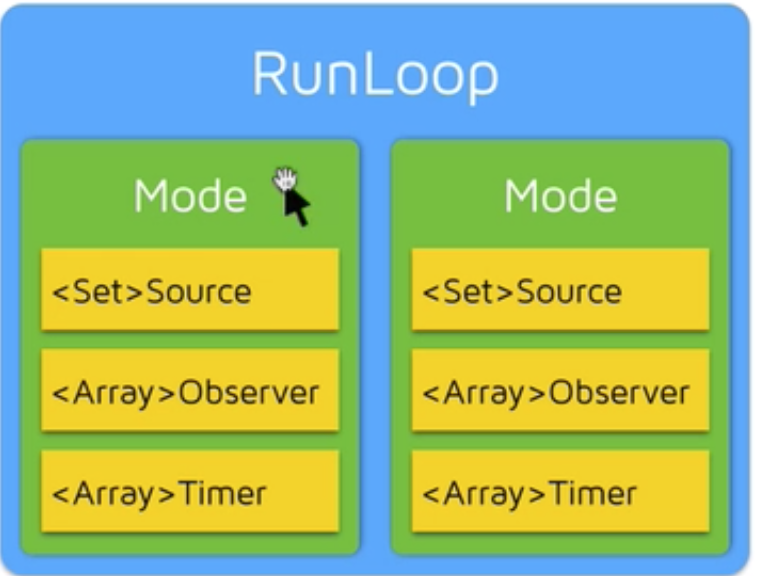</p>
</li>
<li><p><strong>CFRunLoopRef 对象</strong></p>
<ul>
<li><p><strong>RunLoop处理事件源的运行过程</strong>
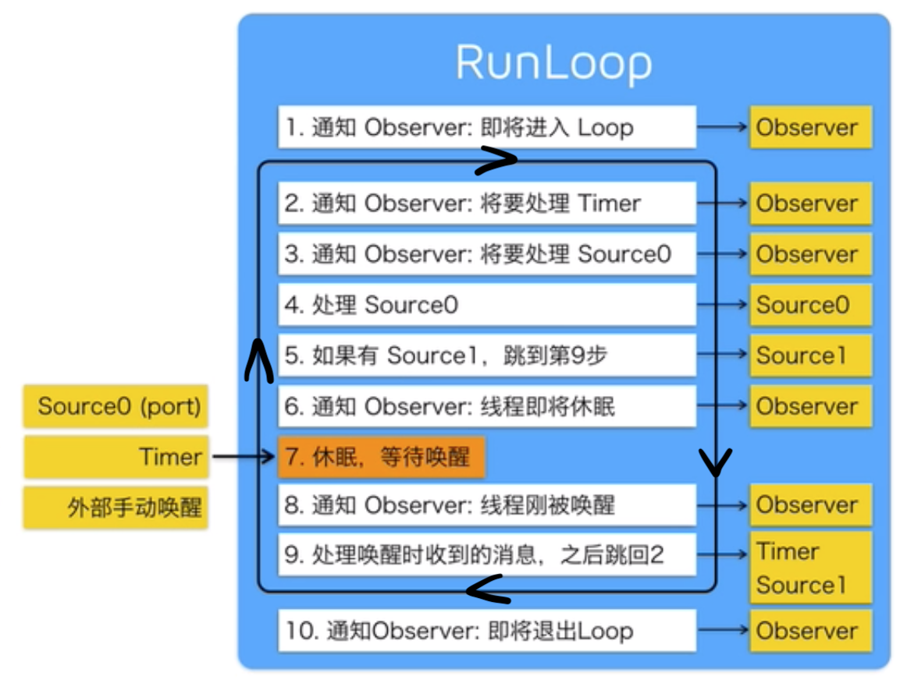</p>
<ul>
<li><p><strong>自动释放池 创建与销毁</strong></p>
<ul>
<li><p>创建</p>
<ul>
<li><p>第一次：<strong>启动 runLoop 时</strong></p>
</li>
<li><p>其他时候：<strong>runLoop 即将进入睡眠时</strong>先销毁之前的释放池(将该释放池内的对象都销毁)，<strong>再重新创建一个新的释放池</strong>，这也是为了<strong>节省资源</strong>(睡眠自然要节省资源)</p>
</li>
</ul>
</li>
<li><p>销毁</p>
<ul>
<li><p>其他时候：<strong>runLoop 即将进入睡眠时</strong>先销毁之前的释放池(将该释放池内的对象都销毁)，这也是为了<strong>节省资源</strong>(睡眠自然要节省资源)</p>
</li>
<li><p>最后一次：<strong>runLoop 退出时销毁</strong></p>
</li>
</ul>
</li>
</ul>
</li>
</ul>
</li>
<li><p><strong>CFRunLoopMode 模式</strong></p>
<ul>
<li><p>类型：CFString 类型的枚举</p>
</li>
<li><p><strong>注意：Mode 内必须要有一个 timers源 或者 sources源</strong></p>
</li>
<li><p>相关常用模式</p>
<ul>
<li><p><strong>kCFRunLoopDefaultMode</strong> : App默认的模式; 通常主线程是在这种模式下运行</p>
<ul>
<li><strong>kCFRunLoopDefaultMode == NSDefaultRunLoopMode</strong></li>
</ul>
</li>
<li><p><strong>UITrackingRunLoopMode</strong> : 界面跟踪mode ; 当<strong>ScrollView 追踪触摸滑动</strong>时，自动切换到这种模式下工作，保证界面滑动时不受其他Mode 影响</p>
</li>
<li><p><strong>kCFRunLoopCommonModes</strong> : 这是一个占位用的 Mode ,不是一种真正的模式</p>
<ul>
<li><strong>kCFRunLoopCommonModes == kCFRunLoopDefaultMode + UITrackingRunLoopMode</strong></li>
</ul>
</li>
</ul>
</li>
<li><p><strong>CFRunLoopSourceRef 触发事件来源</strong></p>
<ul>
<li><p><strong>事件源区分</strong></p>
<ul>
<li><strong>sources0</strong> :非基于 Port， 用户主动触发事件，比如：点击按钮后触发该事件源，调用一系列函数</li>
<li><strong>sources1</strong> : 基于 Port，系统自动触发的事件</li>
</ul>
</li>
<li><p><strong>子线程长驻处理事件任务 示例</strong></p>
<pre><code class="lang-objc"><span class="hljs-comment">// sources 用法</span>
<span class="hljs-keyword">if</span> (<span class="hljs-keyword">self</span><span class="hljs-variable">.subThread</span>) {
  <span class="hljs-comment">// 长驻子线程 执行方法</span>
  [<span class="hljs-keyword">self</span> performSelector:<span class="hljs-keyword">@selector</span>(subThreadTask) onThread:<span class="hljs-keyword">self</span><span class="hljs-variable">.subThread</span> withObject:<span class="hljs-literal">nil</span> waitUntilDone:<span class="hljs-literal">YES</span>];
  <span class="hljs-comment">// waitUntilDone = YES : 表示当 subThreadTask 方法执行完后才执行下面代码</span>
  <span class="hljs-keyword">return</span> ;
}
__<span class="hljs-keyword">weak</span> <span class="hljs-keyword">typeof</span>(<span class="hljs-keyword">self</span>) weakSelf = <span class="hljs-keyword">self</span> ;
<span class="hljs-built_in">dispatch_async</span>(dispatch_queue_create(<span class="hljs-string">"xxxxQueue"</span>, DISPATCH_QUEUE_SERIAL), ^{

  <span class="hljs-built_in">NSLog</span>(<span class="hljs-string">@"current thread = %@"</span>,[<span class="hljs-built_in">NSThread</span> currentThread]);

  <span class="hljs-comment">// 当前线程</span>
  weakSelf<span class="hljs-variable">.subThread</span> = [<span class="hljs-built_in">NSThread</span> currentThread];

  <span class="hljs-comment">// 1. 当前子线程长驻(添加 )</span>
  NSRunLoop * runLoop = [NSRunLoop currentRunLoop];

  <span class="hljs-comment">// 2. 添加 默认Mode 的 sources1 端口</span>
  NSPort * port = [NSPort port];
  [runLoop addPort:port forMode:NSDefaultRunLoopMode];

  <span class="hljs-comment">// 3.添加 runLoop 通知(一定要在 运行前添加)</span>
  CFRunLoopObserverRef observer = CFRunLoopObserverCreateWithHandler(kCFAllocatorDefault, kCFRunLoopAllActivities, <span class="hljs-literal">YES</span>, <span class="hljs-number">0</span>, ^(CFRunLoopObserverRef observer, CFRunLoopActivity activity) {
      <span class="hljs-comment">// 当 runLoop退出时</span>
      <span class="hljs-keyword">if</span> (activity == kCFRunLoopExit) {
          <span class="hljs-built_in">NSLog</span>(<span class="hljs-string">@"当前线程的 runLoop 已经退出了"</span>);
          <span class="hljs-keyword">self</span><span class="hljs-variable">.subThread</span> = <span class="hljs-literal">nil</span> ;
      }
  });
  CFRunLoopAddObserver(runLoop<span class="hljs-variable">.getCFRunLoop</span>, observer, kCFRunLoopDefaultMode);

  <span class="hljs-comment">// 3. 运行 runLoop , 5秒后就结束 runLoop （即5秒后当前线程就不能处理事件了，线程和runLoop结束）</span>
  [runLoop runUntilDate:[<span class="hljs-built_in">NSDate</span> dateWithTimeIntervalSinceNow:<span class="hljs-number">5</span>] ];

});
</code></pre>
</li>
</ul>
</li>
<li><p><strong>CFRunLoopObserverRef 观察者</strong></p>
<ul>
<li><p>能够<strong>监听 RunLoop 的状态改变</strong></p>
</li>
<li><p>可以<strong>监听的状态</strong>
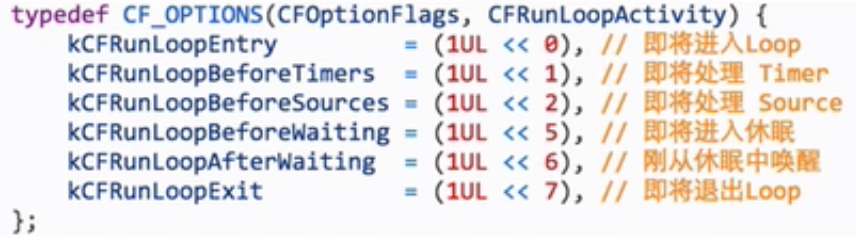</p>
</li>
<li><p>示例</p>
<pre><code class="lang-objc"><span class="hljs-comment">// 如果是子线程，创建子线程的 runLoop , 如果当前线程是主线程，那么就是mainRunLoop</span>
CFRunLoopRef runLoop = CFRunLoopGetCurrent();
CFRunLoopObserverRef observer = CFRunLoopObserverCreateWithHandler(kCFAllocatorDefault, kCFRunLoopAllActivities, <span class="hljs-literal">YES</span>, <span class="hljs-number">0</span>, ^(CFRunLoopObserverRef observer, CFRunLoopActivity activity) {
<span class="hljs-built_in">NSLog</span>(<span class="hljs-string">@"RunLoop 当前的状态 = %ld"</span>,activity);
});
CFRunLoopAddObserver(runLoop, observer, kCFRunLoopCommonModes);
</code></pre>
</li>
</ul>
</li>
<li><p><strong>CFRunLoopTimerRef    定时,如NSTimer</strong></p>
<pre><code class="lang-objc">  <span class="hljs-comment">// 1、第一种 NSTmer</span>
  <span class="hljs-comment">// timer 只有添加到 runLoop 才可以正常启动</span>
  NSTimer * timer = [NSTimer timerWithTimeInterval:<span class="hljs-number">1</span> repeats:<span class="hljs-literal">YES</span> block:^(NSTimer * _Nonnull timer) {
      <span class="hljs-comment">// 重复调用的 block</span>
  }];
  [[NSRunLoop mainRunLoop] addTimer:timer forMode:NSRunLoopCommonModes];

  <span class="hljs-comment">// 2、第二种</span>
  <span class="hljs-comment">// 创建子线程的 runLoop , 如果当前线程是主线程，那么就是mainRunLoop</span>
  CFRunLoopRef runLoop = CFRunLoopGetCurrent();
  CFRunLoopTimerRef timer = CFRunLoopTimerCreateWithHandler(kCFAllocatorDefault, CFAbsoluteTimeGetCurrent(), <span class="hljs-number">2</span>, <span class="hljs-number">0</span>, <span class="hljs-number">0</span> , ^(CFRunLoopTimerRef timer) {
<span class="hljs-built_in">NSLog</span>(<span class="hljs-string">@"runLoop timer thread = %@"</span>,[<span class="hljs-built_in">NSThread</span> currentThread]);
});
  CFRunLoopAddTimer(runLoop, timer, kCFRunLoopCommonModes);
  CFRunLoopRun();
</code></pre>
</li>
</ul>
</li>
</ul>
</li>
</ul>
</li>
</ul>
</li>
</ul>
</li>
</ul>
<h3 id="11-">11 网络请求</h3>
<p>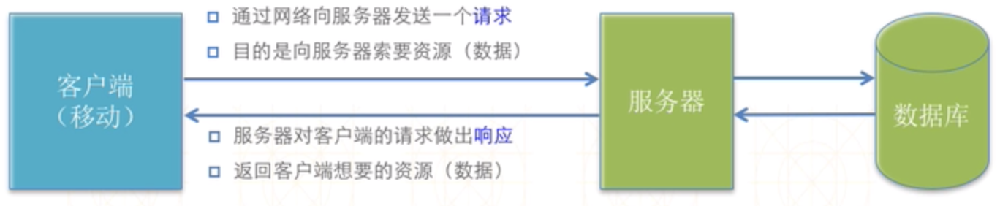</p>
<h5 id="url">URL</h5>
<ul>
<li><p>格试：http协议://服务器地址/绝对路径</p>
<ul>
<li><p>URL常见协议</p>
<ul>
<li><p>HTTP</p>
<ul>
<li><strong>超文本传输协议(明文传输)</strong>，访问的是远程的网络资源，格式是http://</li>
<li>http 协议是网络请求中最常用的协议</li>
</ul>
</li>
<li><p>HTTPS</p>
<ul>
<li>实际是<strong> HTTP+SSL(证时安全保护层) 组成的</strong></li>
<li><strong>对超文本进行加密(SSL层加密)后再传输协议</strong>，比HTTP安全，多了一层SSL保护</li>
</ul>
</li>
<li><p>file</p>
<ul>
<li>访问的是本地计算机上的资源，格式是 file://(不用加主机地址)</li>
</ul>
</li>
<li><p>mailto</p>
<ul>
<li>访问的是电子邮件地址，格式是 mailo://</li>
</ul>
</li>
<li><p>FTP</p>
<ul>
<li>访问的是共享主机的文件资源，格试ftp://</li>
</ul>
</li>
</ul>
</li>
</ul>
</li>
<li><p>发送HTTP请求的方式</p>
<ul>
<li><p><strong>POST</strong></p>
<ul>
<li><p>发送给服务器的参数是放在请求体(HTTPBody)中</p>
</li>
<li><p>理论上，POST传递的参数是没有限制的（具体还要看服务器处理能力）</p>
</li>
<li><p>安全性高于GET，因为参数不是直接拼在URL后面，是看不到的</p>
</li>
</ul>
</li>
<li><p><strong>GET</strong></p>
<ul>
<li><p>多个上传的参数是以&amp;分隔开，比如 <a href="http://www.test.com/login?userName=111&amp;pwd=123&amp;type=JSON" target="_blank">http://www.test.com/login?userName=111&amp;pwd=123&amp;type=JSON</a></p>
</li>
<li><p>URL 后面附带的参数是有限制的，通常不超过1KB</p>
</li>
<li><p>请求的参数是直接放在URL后面的</p>
</li>
</ul>
</li>
</ul>
</li>
<li><p><strong>HTTPS</strong></p>
<ul>
<li><p>简单说明</p>
<ul>
<li>组成部分：HTTP + SSL(对数据安全加密详情)</li>
<li>HTTPS 的安全基础是SSL层，因此加密的详情就需要SSL。SSL它是一个抽橡标识体系(URI scheme)</li>
<li>https：URL表明它使用了 HTTP ，但https存在不同于HTTP的默认端口及一个加密/身份验证层(该层位置HTTP层与TCP层之间)。</li>
</ul>
</li>
<li><p><strong>HTTPS 与 HTTP 主要区别</strong></p>
<ul>
<li>https 协议需要到car审请证书</li>
<li>http 是超文本传输协议，信息是明文传输；https 则是具有安全性的SSL加密传输协议</li>
<li>http 和 https 使用的是完全不同的连接方式，用的端口也是不一样，http是80端口，https是443端口</li>
<li>http 连接是很简单无状态的；https 协议是由SSL+HTTP协议构建的可进行加密传输、身份认证的网络协议，比http安全。</li>
</ul>
</li>
<li><p><strong>https 加密传输流程图</strong></p>
<ul>
<li><p>说明</p>
<ul>
<li>1）客户端 向 服务端 发送一个https请求</li>
<li>2）服务端先返回一个证书(即公钥)给客户端,如果客户端安装该证书则有下文，如果不安装则直接返回 error</li>
<li>3）客户端根据公钥 随机产生一个对称值A，然对再对该对称A值进行SSL加密，得到一个对称密钥</li>
<li>4）把对称密钥再发送给服务端，当服务端拿到后给客户端回应准备好接收</li>
<li>5）通过客户端对明文进行对称密钥(或公钥)加密 得到密文，然后把密文传输给服务端</li>
<li>6）服务端接收到密文后，通过密钥(或公钥)解密 得到原本的明文</li>
<li>注意：经过几次步骤后，客户端与服务端都拿到了 公钥和密钥</li>
</ul>
<p>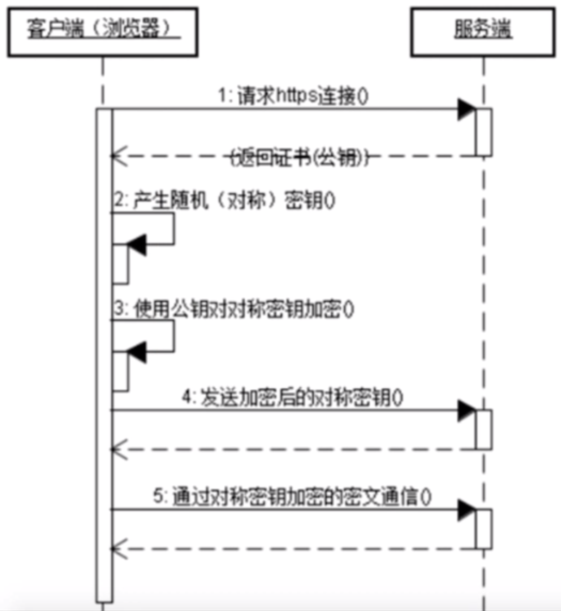</p>
<p>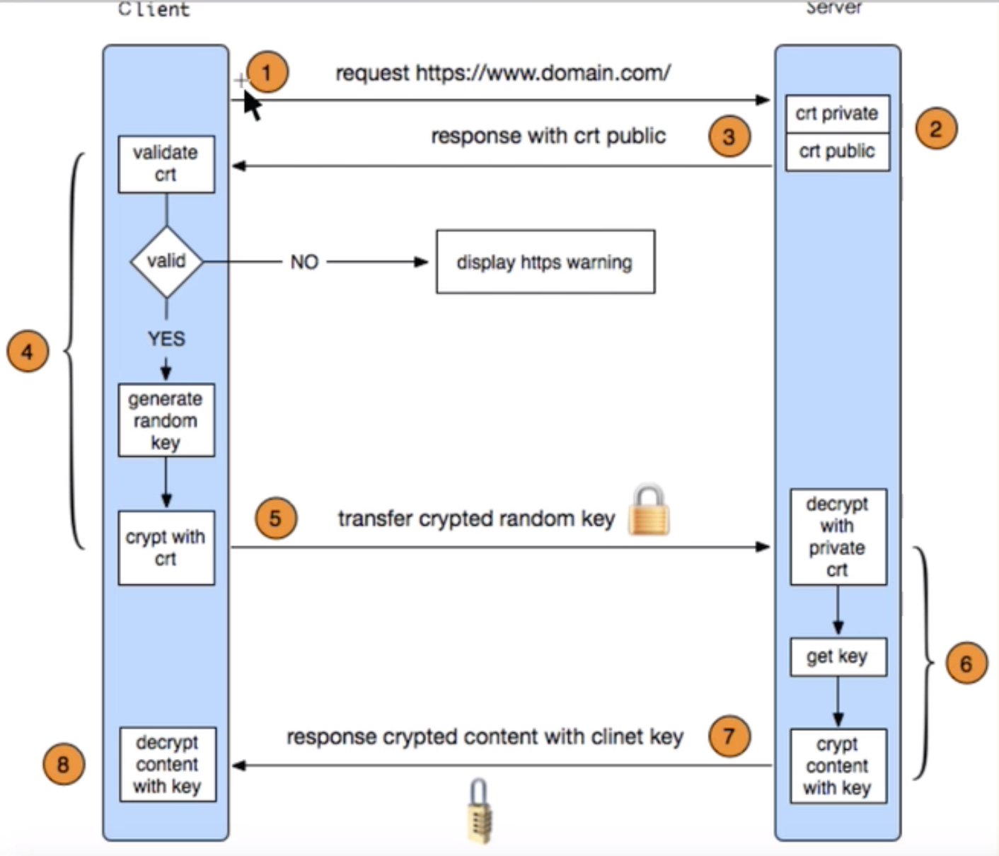</p>
</li>
</ul>
</li>
<li><p><strong>https 请求 代码实现</strong></p>
<ul>
<li><p><strong>用 NSURLSession 实现</strong></p>
<ul>
<li><p>主要代码</p>
<pre><code class="lang-objc"><span class="hljs-preprocessor">#pragma mark - NSURLSession 网络请求</span>
-(<span class="hljs-keyword">void</span>)sessionDataTask
{
  NSOperationQueue * queue = [[NSOperationQueue alloc] init];
  queue<span class="hljs-variable">.maxConcurrentOperationCount</span> = <span class="hljs-number">1</span> ;

  <span class="hljs-comment">// delegate : NSURLSessionDelegate 是一个父协议，还有很多协议遵守了该父协议，如 NSURLSessionDataDelegate</span>
  <span class="hljs-comment">// delegateQueue : 如果是非主队列，那就是在子线程调用 代理方法</span>
  <span class="hljs-built_in">NSURLSession</span> * session = [<span class="hljs-built_in">NSURLSession</span> sessionWithConfiguration:[NSURLSessionConfiguration defaultSessionConfiguration] delegate:<span class="hljs-keyword">self</span> delegateQueue:queue];
  <span class="hljs-comment">// 创建 task</span>
  <span class="hljs-built_in">NSURLRequest</span> * request = [<span class="hljs-built_in">NSURLRequest</span> requestWithURL:[<span class="hljs-built_in">NSURL</span> URLWithString:<span class="hljs-string">@"https://github.com/AFNetworking/AFNetworking"</span>]];

  <span class="hljs-comment">// 大数据下载用 delegate 回调方法</span>
  <span class="hljs-built_in">NSURLSessionDataTask</span> * dataTask = [session dataTaskWithRequest:request];

  <span class="hljs-comment">// 断续 task</span>
  [dataTask resume];
}
<span class="hljs-preprocessor">#pragma mark - NSURLSessionDelegate</span>
<span class="hljs-comment">/// 请求 https 时调用代理方法，询问收到服务器返回的证书处理方案（安装 or 不安装）</span>
<span class="hljs-comment">/// @param session 会话连接</span>
<span class="hljs-comment">/// @param challenge 授权询问</span>
<span class="hljs-comment">/// @param completionHandler 授权的处理方案</span>
-(<span class="hljs-keyword">void</span>)URLSession:(<span class="hljs-built_in">NSURLSession</span> *)session didReceiveChallenge:(NSURLAuthenticationChallenge *)challenge completionHandler:(<span class="hljs-keyword">void</span> (^)(NSURLSessionAuthChallengeDisposition, NSURLCredential * _Nullable))completionHandler
{
  <span class="hljs-comment">// 受保护的空间:</span>
      <span class="hljs-comment">// serverTrust : 服务器证书信任状态,</span>
      <span class="hljs-comment">//               取值：只有当 authenticationMethod = NSURLAuthenticationMethodServerTrust 才不为 nil</span>
  <span class="hljs-keyword">if</span> ([challenge<span class="hljs-variable">.protectionSpace</span><span class="hljs-variable">.authenticationMethod</span> isEqualToString:NSURLAuthenticationMethodServerTrust]) {
      <span class="hljs-comment">// 调用 completionHandler block 告诉系统处理方案</span>

      <span class="hljs-comment">// NSURLSessionAuthChallengeDisposition 枚举方案</span>
      <span class="hljs-comment">/*
       NSURLSessionAuthChallengeUseCredential = 0,   安装使用当前指定的证书
       NSURLSessionAuthChallengePerformDefaultHandling = 1,   忽略安装当前证书，默认的处理方案
       NSURLSessionAuthChallengeCancelAuthenticationChallenge = 2,  忽略安装当前证书，并且 关闭所有请求
       NSURLSessionAuthChallengeRejectProtectionSpace = 3,    拒绝，忽略安装当前证书，下一次的询问处理方案还可以等
       */</span>

      <span class="hljs-comment">// 告诉系统 证书处理方案</span>
      completionHandler(NSURLSessionAuthChallengeUseCredential , challenge<span class="hljs-variable">.proposedCredential</span>);
  }
}
</code></pre>
</li>
</ul>
</li>
<li><p>用 AFNetworking 实现</p>
<ul>
<li>主要代码
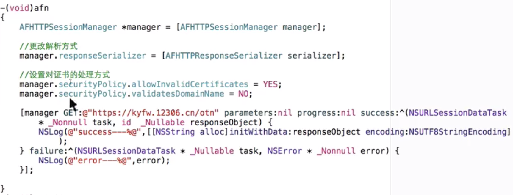</li>
</ul>
</li>
</ul>
</li>
</ul>
</li>
</ul>
<ul>
<li><p><strong>HTTP通信过程</strong></p>
<ul>
<li><p>请求</p>
<ul>
<li><p>HTTP协议规定：一个完整的请求中包含以下内容</p>
<ul>
<li><p><strong>请求头</strong>：包含了对客户端 环境描述 和 请求信息等</p>
<ul>
<li><p>设置<strong>请求头</strong>主要代码如下</p>
<pre><code class="lang-objc"><span class="hljs-comment">// 注意：断点下载，重新开始(被取消的下载又接着后面下载)，接着 currentLength 字节后面未下载的接着下</span>
<span class="hljs-built_in">NSString</span> * range = [<span class="hljs-built_in">NSString</span> stringWithFormat:<span class="hljs-string">@"bytes=%zd-"</span>,currentLength];
[request setValue:range forHTTPHeaderField:<span class="hljs-string">@"Range"</span>];

<span class="hljs-comment">// 等等可以看苹果提供的API</span>
</code></pre>
</li>
<li><p><strong>Range 对应的 value</strong> 取值 意义</p>
<ul>
<li><strong>加快下载时间</strong>：可以根据Range分断下载，把一个文件分成<strong>多个小块任务并发下载</strong>，最后全部下载完后按顺序拼接
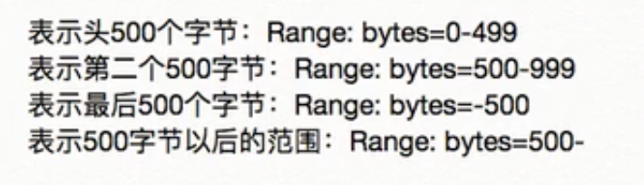</li>
</ul>
</li>
<li><p><strong>上传文件的请求头设置信息</strong>
  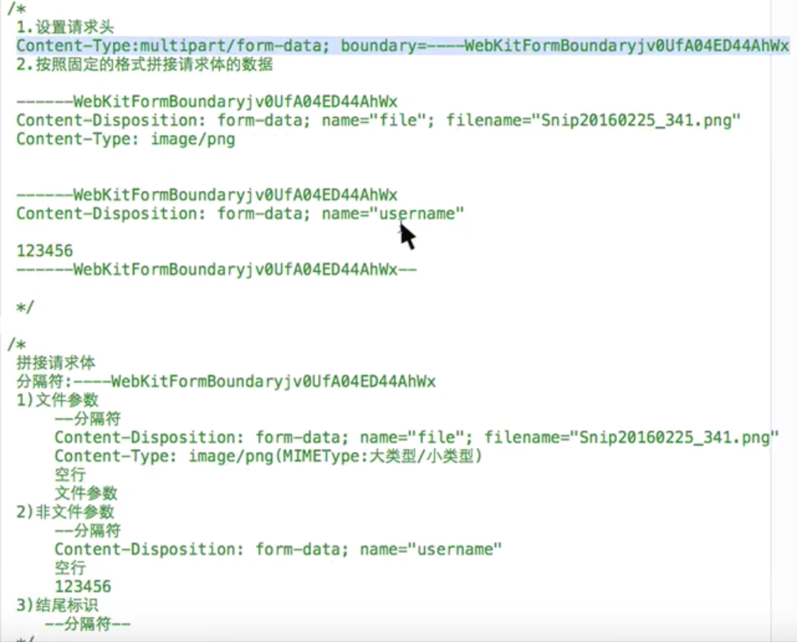</p>
<pre><code>GET /imageName.jpg HTTP/1.1     // 包含了请求方法、请求资源路径、HTTP协议版本
Host: 192.168.1.1:2638          // 想访问的 服务器地址:端口
User-Agent: Mozilla/4.0         // 客户端的类型、客户端软件环境
Accept: text/html, */*          // 客户端所有接收的数据类型
Accept-Language: zh-cn          // 客户端的语言环境
Accept-Encoding: gzip           // 客户端支持的数据压缩格式
...
</code></pre></li>
</ul>
</li>
<li><p><strong>请求体</strong></p>
<ul>
<li>客户端发给服务器的具体数据，比如文件数据(POST请求才会有)</li>
</ul>
</li>
</ul>
</li>
<li><p><strong>数据安全</strong>(加密)</p>
<ul>
<li><p>网络数据原则</p>
<ul>
<li>在网络上<strong>不允许传输</strong>用户隐私数据的<strong>明文</strong></li>
<li>在本地<strong>不充许保存</strong>用户隐私数据的<strong>明文</strong></li>
</ul>
</li>
<li><p><strong>加密算法</strong></p>
<ul>
<li><p><strong>Base64 编码</strong></p>
<ul>
<li>编码的base64数据用:A~Z、a~z、0~9、+、/、= 组成</li>
<li>加密步骤:<ul>
<li>1）转换时，先将文本内容(最少3个字符，【内容个数%3=a，a!=0时补足0使a==0】，不足二进制位补0)每个字符转成 ASCII码对应的数值（&lt;= 255）</li>
<li>2) 再把每个数值转成二进制（每个值8位），把转成的二进制按顺序排列</li>
<li>3）每6位划分二进制,把划分的6位二进制转成十进制b(该十进制就是base64编码表的索引)</li>
<li>4）根据索引找到对应的 base64编码</li>
<li>5）把这些编码后的字条按顺序排列
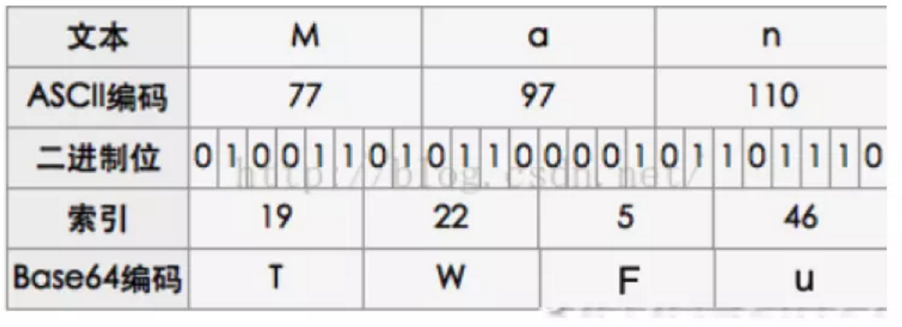
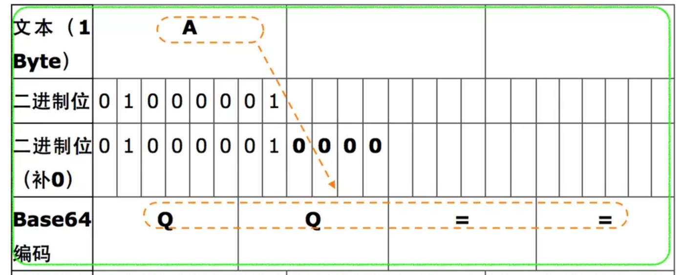</li>
</ul>
</li>
<li>加密方式学习网：<a href="https://www.jianshu.com/p/e95278ed98b4" target="_blank">https://www.jianshu.com/p/e95278ed98b4</a></li>
</ul>
</li>
<li><p>哈希(散列)函数</p>
<ul>
<li><p>MD5</p>
<ul>
<li><p>MD5对不同数据进行加密，得到的结果都是<strong>32个字符长度的字符串</strong>，<strong>相同的明文加密后的字符串都是一样的</strong></p>
</li>
<li><p>改进</p>
<ul>
<li>MD5现在已经不是那么的绝对安全，对此可以对MD5进行改进来增加难度</li>
<li><strong>加盐(salt)</strong>：在明文的固定位置插入随机串，然后再进行MD5加密（(明文+盐)MD5）</li>
<li><strong>先加密+再乱序</strong>：先对明文加密，然后把得到的32个字符串顺序随机(或固定)打乱位置</li>
<li>也可以自己定规则加密
-SHA1
-SHA256</li>
</ul>
</li>
</ul>
</li>
<li><p>散列特点</p>
<ul>
<li>算法是公开的</li>
<li><strong>对相同的数据加密，得到的结果是一样的</strong></li>
<li>对不同的数据加密，得到的数据是定长的</li>
<li>信息 指纹 ，是用来做数据识别的</li>
<li>不能反算的</li>
</ul>
</li>
<li><p>用途</p>
<ul>
<li>密码，服务器并不需要知道用户的真实密码！</li>
<li>用于搜索<ul>
<li>对搜索时，对每个关键词进行散列加密得到一串密文字符串A，然后将所有的关键词进行按位相加得到另外一串密文字符串B，如果关键字顺序调换了也没关系，最终加密再相加得到的一串密文字符串是一样的，搜索内容也就一样</li>
</ul>
</li>
</ul>
</li>
</ul>
</li>
<li><p>对称加密算法
，                    - DES</p>
<ul>
<li>3DES</li>
<li>AES(高级密码标准，美国国家安全局使用的)</li>
</ul>
</li>
<li><p>非对称加密算法</p>
<ul>
<li>RSA</li>
</ul>
</li>
</ul>
</li>
</ul>
</li>
<li><p>iOS发送HTTP请求方案</p>
<ul>
<li><p>苹果自带的：</p>
<ul>
<li><p><strong>NSURLConnection 请求数据</strong></p>
<ul>
<li><p><strong>json数据下载</strong>(轻量级数据下载)</p>
<pre><code class="lang-objc">  NSMutableURLRequest * request = [NSMutableURLRequest requestWithURL:[<span class="hljs-built_in">NSURL</span> URLWithString:<span class="hljs-string">@"http://xxxxxx"</span>]];
  request<span class="hljs-variable">.HTTPMethod</span> = <span class="hljs-string">@"POST"</span>;
  request<span class="hljs-variable">.HTTPBody</span> = [<span class="hljs-string">@"userName=xxx,pwd=11223"</span> dataUsingEncoding:NSUTF8StringEncoding];
  <span class="hljs-comment">// 需要实现 delegete</span>
  [<span class="hljs-built_in">NSURLConnection</span> sendAsynchronousRequest:request queue:[NSOperationQueue mainQueue] completionHandler:^(NSURLResponse * _Nullable response, <span class="hljs-built_in">NSData</span> * _Nullable data, <span class="hljs-built_in">NSError</span> * _Nullable connectionError) {

      <span class="hljs-comment">// 把JSON 转成 OC 对象(反序列化)</span>
<span class="hljs-comment">//        NSJSONReadingMutableContainers = (1UL &lt;&lt; 0), // JSON解析成可变的 数组 和 字典</span>
<span class="hljs-comment">//        NSJSONReadingMutableLeaves = (1UL &lt;&lt; 1),     // JSON解析成 内部所有的字符串都是可变的,一般不用，有点问题</span>
<span class="hljs-comment">//        NSJSONReadingFragmentsAllowed = (1UL &lt;&lt; 2),  // JSON解析成 既不是字典也不是数组,则必须用该s枚举值</span>
<span class="hljs-comment">//        NSJSONReadingAllowFragments = NSJSONReadingFragmentsAllowed</span>
      <span class="hljs-comment">// 返序列化</span>
      <span class="hljs-comment">// options 参数:传 NSJSONReadingOptions 也可以传 NSJSONWritingOptions</span>
      <span class="hljs-built_in">NSDictionary</span> * dic = [NSJSONSerialization JSONObjectWithData:data options:NSJSONReadingMutableContainers error:<span class="hljs-literal">nil</span>];

      <span class="hljs-comment">// 刷新UI</span>
  }];
</code></pre>
</li>
<li><p><strong>文件下载</strong>(重量级数据下载)</p>
<ul>
<li><p>NSFileHandle 使用了句丙，把下载的数据在沙盒中拼接起来</p>
<pre><code class="lang-objc">  -(<span class="hljs-keyword">void</span>)network
  {

      NSMutableURLRequest * request = [NSMutableURLRequest requestWithURL:[<span class="hljs-built_in">NSURL</span> URLWithString:<span class="hljs-string">@"http://xxxxxx"</span>]];
      request<span class="hljs-variable">.HTTPMethod</span> = <span class="hljs-string">@"POST"</span>;
      request<span class="hljs-variable">.HTTPBody</span> = [<span class="hljs-string">@"userName=xxx,pwd=11223"</span> dataUsingEncoding:NSUTF8StringEncoding];
      <span class="hljs-comment">// 需要实现 delegete (NSURLConnectionDataDelegate 且也可以实现其他代理)</span>
      [[<span class="hljs-built_in">NSURLConnection</span> connectionWithRequest:request delegate:<span class="hljs-keyword">self</span>] start];
  }
  <span class="hljs-preprocessor">#pragma mark - NSURLConnectionDataDelegate</span>
  <span class="hljs-comment">// 开始下载</span>
  NSFileHandle * fileHandle = <span class="hljs-literal">nil</span> ;
  <span class="hljs-built_in">NSInteger</span> totleLength = <span class="hljs-number">0</span> ;
  <span class="hljs-built_in">NSInteger</span> currentLength = <span class="hljs-number">0</span> ;
  <span class="hljs-built_in">NSString</span> * filePath = <span class="hljs-string">@""</span>;
  - (<span class="hljs-keyword">void</span>)connection:(<span class="hljs-built_in">NSURLConnection</span> *)connection didReceiveResponse:(NSURLResponse *)response
  {
      filePath = [[NSSearchPathForDirectoriesInDomains(NSCachesDirectory, NSUserDomainMask, <span class="hljs-literal">YES</span>) lastObject] stringByAppendingPathComponent:<span class="hljs-string">@"name.mp4"</span>];
      <span class="hljs-comment">// 1. 创建文件</span>
      [[<span class="hljs-built_in">NSFileManager</span> defaultManager] createFileAtPath:filePath contents:<span class="hljs-literal">nil</span> attributes:<span class="hljs-literal">nil</span>];
      <span class="hljs-comment">// 2. 创建文件句丙，用于沙盒拼接数据</span>
      fileHandle = [NSFileHandle fileHandleForWritingAtPath:filePath];

      <span class="hljs-comment">// 文件大小长度，用于计算下载进度</span>
      totleLength = response<span class="hljs-variable">.expectedContentLength</span>;
  }
  <span class="hljs-comment">// 正在下载的拿到文件的一部分数据</span>
  - (<span class="hljs-keyword">void</span>)connection:(<span class="hljs-built_in">NSURLConnection</span> *)connection didReceiveData:(<span class="hljs-built_in">NSData</span> *)data
  {
      <span class="hljs-comment">// 把句丙指针移到沙盒内文件末尾</span>
      [fileHandle seekToEndOfFile];

      <span class="hljs-comment">// 把当前下载好的部分文件拼接到沙盒文中去</span>
      [fileHandle writeData:data];

      <span class="hljs-comment">// 下载进度</span>
      currentLength += data<span class="hljs-variable">.length</span>;
      <span class="hljs-built_in">CGFloat</span> progress = <span class="hljs-number">1.0</span> * currentLength / totleLength ;
  }
  <span class="hljs-comment">// 下载失败</span>
  -(<span class="hljs-keyword">void</span>)connection:(<span class="hljs-built_in">NSURLConnection</span> *)connection didFailWithError:(<span class="hljs-built_in">NSError</span> *)error
  {
      <span class="hljs-comment">// 关闭文件句丙</span>
      [fileHandle closeFile];

      <span class="hljs-comment">// 删除已经下载的数据</span>
      [[<span class="hljs-built_in">NSFileManager</span> defaultManager] removeItemAtPath:filePath error:<span class="hljs-literal">nil</span>];
  }
  <span class="hljs-comment">// 下载完成</span>
  -(<span class="hljs-keyword">void</span>)connectionDidFinishLoading:(<span class="hljs-built_in">NSURLConnection</span> *)connection
  {
      <span class="hljs-comment">// 关闭文件句丙</span>
      [fileHandle closeFile];

      <span class="hljs-comment">// 把下载好的数据读出来</span>
      <span class="hljs-built_in">NSData</span> * mp4 = [[<span class="hljs-built_in">NSFileManager</span> defaultManager] contentsAtPath:filePath];
  }
</code></pre>
</li>
<li><p><strong>断点下载</strong></p>
<ul>
<li>接着之前下载的数据后面接着下载，设置<strong>请求头</strong>主要代码如下<pre><code class="lang-objc"><span class="hljs-comment">// 注意：断点下载，重新开始(被取消的下载又接着后面下载)，接着 currentLength 字节后面未下载的接着下</span>
<span class="hljs-built_in">NSString</span> * range = [<span class="hljs-built_in">NSString</span> stringWithFormat:<span class="hljs-string">@"bytes=%zd-"</span>,currentLength];
[request setValue:range forHTTPHeaderField:<span class="hljs-string">@"Range"</span>];
</code></pre>
</li>
<li><p><strong>Range 对应的 value</strong> 取值 意义</p>
<ul>
<li><strong>加快下载时间</strong>：可以根据Range分断下载，把一个文件分成<strong>多个小块任务并发下载</strong>，最后全部下载完后按顺序拼接
</li>
</ul>
</li>
<li><p>示例</p>
<pre><code class="lang-objc">  <span class="hljs-built_in">NSURLConnection</span> * connection = <span class="hljs-literal">nil</span>;
  NSFileHandle * fileHandle = <span class="hljs-literal">nil</span> ;
  <span class="hljs-built_in">NSInteger</span> totleLength = <span class="hljs-number">0</span> ;
  <span class="hljs-built_in">NSInteger</span> currentLength = <span class="hljs-number">0</span> ;
  <span class="hljs-built_in">NSString</span> * filePath = <span class="hljs-string">@""</span>;
  -(<span class="hljs-keyword">void</span>)startNetwork
  {
      NSMutableURLRequest * request = [NSMutableURLRequest requestWithURL:[<span class="hljs-built_in">NSURL</span> URLWithString:<span class="hljs-string">@"http://b-ssl.duitang.com/uploads/blog/201410/19/20141019173244_PU8eT.jpeg"</span>]];

      <span class="hljs-comment">// 注意：断点下载，重新开始(被取消的下载又接着后面下载)，接着 currentLength 字节后面未下载的接着下</span>
      <span class="hljs-built_in">NSString</span> * range = [<span class="hljs-built_in">NSString</span> stringWithFormat:<span class="hljs-string">@"bytes=%zd-"</span>,currentLength];
      [request setValue:range forHTTPHeaderField:<span class="hljs-string">@"Range"</span>];

      <span class="hljs-comment">// 需要实现 delegete (NSURLConnectionDataDelegate 且也可以实现其他代理)</span>
      connection = [<span class="hljs-built_in">NSURLConnection</span> connectionWithRequest:request delegate:<span class="hljs-keyword">self</span>];
  }
  <span class="hljs-comment">// 取消下载</span>
  -(<span class="hljs-keyword">void</span>) cancelNetwork
  {
      [connection cancel];
  }
  <span class="hljs-preprocessor">#pragma mark - NSURLConnectionDataDelegate</span>
  <span class="hljs-comment">// 开始下载</span>
  - (<span class="hljs-keyword">void</span>)connection:(<span class="hljs-built_in">NSURLConnection</span> *)connection didReceiveResponse:(NSURLResponse *)response
  {
      <span class="hljs-keyword">if</span> (currentLength &gt; <span class="hljs-number">0</span>) { <span class="hljs-comment">// 属于断点下载</span>
          <span class="hljs-built_in">NSLog</span>(<span class="hljs-string">@"继续下载"</span>);
          <span class="hljs-keyword">return</span> ;
      }
      <span class="hljs-built_in">NSLog</span>(<span class="hljs-string">@"开始下载"</span>);
      <span class="hljs-comment">// 文件第一次下载 初始化</span>
      filePath = [[NSSearchPathForDirectoriesInDomains(NSCachesDirectory, NSUserDomainMask, <span class="hljs-literal">YES</span>) lastObject] stringByAppendingPathComponent:<span class="hljs-string">@"name.jpg"</span>];
      <span class="hljs-comment">// 1. 创建文件</span>
      [[<span class="hljs-built_in">NSFileManager</span> defaultManager] createFileAtPath:filePath contents:<span class="hljs-literal">nil</span> attributes:<span class="hljs-literal">nil</span>];
      <span class="hljs-comment">// 2. 创建文件句丙，用于沙盒拼接数据</span>
      fileHandle = [NSFileHandle fileHandleForWritingAtPath:filePath];

      <span class="hljs-comment">// 本次下载文件大小(单位：bytes)，用于计算下载进度</span>
      totleLength = response<span class="hljs-variable">.expectedContentLength</span>;
  }
  <span class="hljs-comment">// 正在下载的拿到文件的一部分数据</span>
  - (<span class="hljs-keyword">void</span>)connection:(<span class="hljs-built_in">NSURLConnection</span> *)connection didReceiveData:(<span class="hljs-built_in">NSData</span> *)data
  {
      <span class="hljs-comment">// 把句丙指针移到沙盒内文件末尾</span>
      [fileHandle seekToEndOfFile];

      <span class="hljs-comment">// 把当前下载好的部分文件拼接到沙盒文中去</span>
      [fileHandle writeData:data];

      <span class="hljs-comment">// 下载进度</span>
      currentLength += data<span class="hljs-variable">.length</span>;
      <span class="hljs-built_in">CGFloat</span> progress = <span class="hljs-number">1.0</span> * currentLength / totleLength ;
      <span class="hljs-built_in">NSLog</span>(<span class="hljs-string">@"正在下载到 %f"</span>,progress);
  }
  <span class="hljs-comment">// 下载失败</span>
  -(<span class="hljs-keyword">void</span>)connection:(<span class="hljs-built_in">NSURLConnection</span> *)connection didFailWithError:(<span class="hljs-built_in">NSError</span> *)error
  {
      <span class="hljs-comment">// 关闭文件句丙</span>
      [fileHandle closeFile];
      fileHandle = <span class="hljs-literal">nil</span> ;
      totleLength = <span class="hljs-number">0</span> ;
      currentLength = <span class="hljs-number">0</span> ;

      <span class="hljs-comment">// 删除已经下载的数据</span>
      <span class="hljs-keyword">if</span> (filePath<span class="hljs-variable">.length</span>) {
          [[<span class="hljs-built_in">NSFileManager</span> defaultManager] removeItemAtPath:filePath error:<span class="hljs-literal">nil</span>];
      }
      <span class="hljs-built_in">NSLog</span>(<span class="hljs-string">@"下载失败"</span>);
  }
  <span class="hljs-comment">// 下载完成</span>
  -(<span class="hljs-keyword">void</span>)connectionDidFinishLoading:(<span class="hljs-built_in">NSURLConnection</span> *)connection
  {
      <span class="hljs-comment">// 关闭文件句丙</span>
      [fileHandle closeFile];
      fileHandle = <span class="hljs-literal">nil</span> ;

      <span class="hljs-comment">// 把下载好的数据读出来</span>
  <span class="hljs-comment">//    NSData * jpgImageData = [[NSFileManager defaultManager] contentsAtPath:filePath];</span>
      <span class="hljs-built_in">NSLog</span>(<span class="hljs-string">@"下载完成 存储在 %@"</span>,filePath);
  }
</code></pre>
</li>
</ul>
</li>
</ul>
</li>
</ul>
</li>
<li><p><strong>NSURLSession</strong> (常用 发送和接收的桥梁)</p>
<ul>
<li><p>使用方式</p>
<ul>
<li><p>先创建 NSURLSession 会话对象</p>
<pre><code class="lang-objc">  <span class="hljs-comment">// 第一种方式</span>
  [<span class="hljs-built_in">NSURLSession</span> sharedSession];

  <span class="hljs-comment">// 第二种方式：有代理</span>
  <span class="hljs-comment">// delegate : 代理，可以实现的代理协议很多，如 Task 的代理</span>
  + (<span class="hljs-built_in">NSURLSession</span> *)sessionWithConfiguration:(NSURLSessionConfiguration *)configuration delegate:(nullable <span class="hljs-keyword">id</span> &lt;NSURLSessionDelegate&gt;)delegate delegateQueue:(nullable NSOperationQueue *)queue;
</code></pre>
<ul>
<li><strong>NSURLSessionConfiguration</strong> 配制<ul>
<li><strong>优化配置</strong>一些请求所需要的策略。如：超时、缓存策略、链接需求的</li>
<li>API 详解：<a href="https://blog.csdn.net/GrowingGiant/article/details/50483127" target="_blank">https://blog.csdn.net/GrowingGiant/article/details/50483127</a></li>
</ul>
</li>
</ul>
</li>
<li><p>创建 Task</p>
<ul>
<li>这个过程是通过 session 对象获取，如 [session dataTask...];</li>
</ul>
</li>
<li><p>执行任务[..task resume]</p>
</li>
<li><p><strong>session 在不用的时候必须调用</strong> finishTasksAndInvalidate or invalidateAndCancel <strong>释放对象</strong></p>
<ul>
<li>因为在设置 session 的代理有一个对 session 的强引用,没有释放就会有内存泄露</li>
</ul>
</li>
</ul>
</li>
<li><p><strong>NSURLSessionTask</strong></p>
<ul>
<li><p>相关属性和方法</p>
<pre><code class="lang-objc">  <span class="hljs-comment">// 响应头信息对象</span>
  <span class="hljs-keyword">@property</span> (nullable, <span class="hljs-keyword">readonly</span>, <span class="hljs-keyword">copy</span>) NSURLResponse *response;

  <span class="hljs-comment">// 取消任务，不可恢复</span>
  - (<span class="hljs-keyword">void</span>)cancel;
  <span class="hljs-comment">// 暂停任务，可以重新开始</span>
  - (<span class="hljs-keyword">void</span>)suspend;
  <span class="hljs-comment">// 重新开始</span>
  - (<span class="hljs-keyword">void</span>)resume;

  <span class="hljs-comment">// 创建所有的任务都是用 NSURLSession 类对象方法创建 task</span>
</code></pre>
</li>
<li><p>相关具体Task子类</p>
<ul>
<li>每种 task 都包含对应的 Delegate 协议
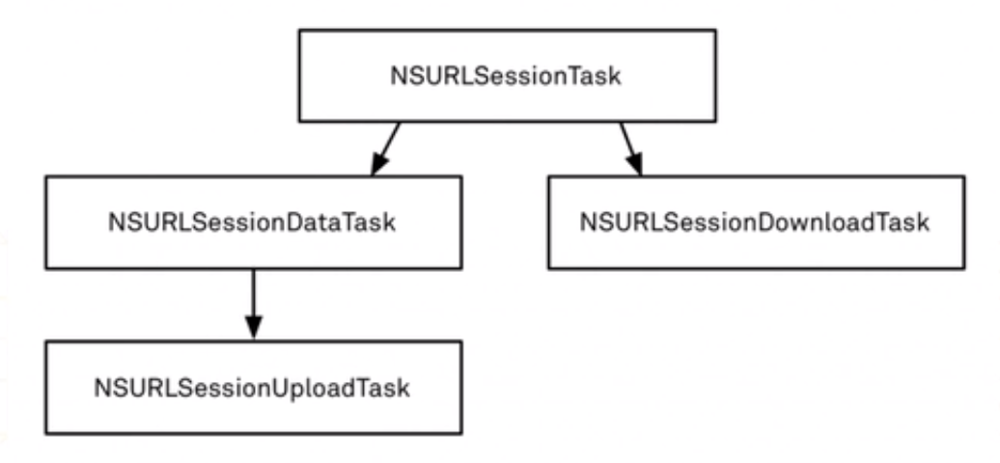</li>
<li><p><strong>NSURLSessionDataTask</strong> 小数据任务</p>
<ul>
<li><p>示例</p>
<pre><code class="lang-objc">  <span class="hljs-preprocessor">#pragma mark - NSURLSession 网络请求</span>
  -(<span class="hljs-keyword">void</span>)sessionDataTask
  {
      NSOperationQueue * queue = [[NSOperationQueue alloc] init];
      queue<span class="hljs-variable">.maxConcurrentOperationCount</span> = <span class="hljs-number">1</span> ;

      <span class="hljs-comment">// delegate : NSURLSessionDelegate 是一个父协议，还有很多协议遵守了该父协议，如 NSURLSessionDataDelegate</span>
      <span class="hljs-comment">// delegateQueue : 如果是非主队列，那就是在子线程调用 代理方法</span>
      <span class="hljs-built_in">NSURLSession</span> * session = [<span class="hljs-built_in">NSURLSession</span> sessionWithConfiguration:[NSURLSessionConfiguration defaultSessionConfiguration] delegate:<span class="hljs-keyword">self</span> delegateQueue:queue];
      <span class="hljs-comment">// 创建 task</span>
      <span class="hljs-built_in">NSURLRequest</span> * request = [<span class="hljs-built_in">NSURLRequest</span> requestWithURL:[<span class="hljs-built_in">NSURL</span> URLWithString:<span class="hljs-string">@"http://ku.90sjimg.com/element_origin_min_pic/16/06/02/21575037aa17a6a.jpg"</span>]];
      <span class="hljs-comment">/* 第一种方式，不需要 delegate ，直接收到 data请求体数据，小数据适用
      NSURLSessionDataTask * dataTask = [session dataTaskWithRequest:request completionHandler:^(NSData * _Nullable data, NSURLResponse * _Nullable response, NSError * _Nullable error) {
          // 在子线程调用
          NSLog(@"%@",[NSThread currentThread]);
      }];
       */</span>

      <span class="hljs-comment">// 大数据下载用 delegate 回调方法</span>
      <span class="hljs-built_in">NSURLSessionDataTask</span> * dataTask = [session dataTaskWithRequest:request];

      <span class="hljs-comment">// 断续 task</span>
      [dataTask resume];
  }
  <span class="hljs-preprocessor">#pragma mark - NSURLSessionDataDelegate</span>

  NSMutableData * taskData ;
  <span class="hljs-comment">// 下载前得到的请求</span>
  <span class="hljs-comment">// 注意 completionHandler block 调用告诉系统是否继续下载，默认是不继续下载</span>
  - (<span class="hljs-keyword">void</span>)URLSession:(<span class="hljs-built_in">NSURLSession</span> *)session dataTask:(<span class="hljs-built_in">NSURLSessionDataTask</span> *)dataTask
  didReceiveResponse:(NSURLResponse *)response
   completionHandler:(<span class="hljs-keyword">void</span> (^)(NSURLSessionResponseDisposition disposition))completionHandler
  {
      <span class="hljs-comment">/*
       NSURLSessionResponseCancel = 0,    // 取消下载，与 -[task cancel] 方法一样功能
       NSURLSessionResponseAllow = 1,     // 继续下载
       NSURLSessionResponseBecomeDownload = 2,    // 转成 Download
       NSURLSessionResponseBecomeStream           // 转成 Stream
       */</span>
      <span class="hljs-comment">// 告诉系统需要继续,否则系统默认直接取消下载</span>
      completionHandler(NSURLSessionResponseAllow);

      taskData = [NSMutableData data];
      <span class="hljs-built_in">NSLog</span>(<span class="hljs-string">@"1 %@"</span>,[<span class="hljs-built_in">NSThread</span> currentThread]);
  }
  <span class="hljs-comment">// 下载的数据,拼接</span>
  -(<span class="hljs-keyword">void</span>)URLSession:(<span class="hljs-built_in">NSURLSession</span> *)session dataTask:(<span class="hljs-built_in">NSURLSessionDataTask</span> *)dataTask didReceiveData:(<span class="hljs-built_in">NSData</span> *)data
  {
      <span class="hljs-built_in">NSLog</span>(<span class="hljs-string">@"2 %@"</span>,[<span class="hljs-built_in">NSThread</span> currentThread]);
      [taskData appendData:data];
  }
  <span class="hljs-comment">// 完成下载</span>
  -(<span class="hljs-keyword">void</span>)URLSession:(<span class="hljs-built_in">NSURLSession</span> *)session task:(NSURLSessionTask *)task didCompleteWithError:(<span class="hljs-built_in">NSError</span> *)error
  {
      <span class="hljs-built_in">NSLog</span>(<span class="hljs-string">@"task = %@, currentThread = %@ , data = %@"</span>,task,[<span class="hljs-built_in">NSThread</span> currentThread],[NSJSONSerialization JSONObjectWithData:taskData options:NSJSONReadingMutableContainers error:<span class="hljs-literal">nil</span>]);
  }
</code></pre>
</li>
<li><p><strong>NSURLSessionUploadTask</strong> 上传文件任务</p>
<ul>
<li><p>是 Data Task 的子类</p>
</li>
<li><p>文件上传<strong>请求头与请求体所设的数据及格式</strong>
</p>
</li>
</ul>
</li>
</ul>
</li>
<li><p><strong>NSURLSessionDownloadTask</strong></p>
<ul>
<li><p>下载大文件代理下载，<strong>系统自动把下载的数据放到本地</strong>，地址为 <strong>location</strong> : NSURL 类型(NSURL fileURLWithPath:)</p>
</li>
<li><p>下载任务被取消了，再得新接着下载(<strong>断点下载</strong>:也可以调用继承的 父类的方法 暂停 或 重新开始)</p>
<pre><code class="lang-objc">  <span class="hljs-comment">// 被取消的任务</span>
  <span class="hljs-comment">// session 是 NSURLSession 对象</span>
  <span class="hljs-built_in">NSData</span> * resumeData = <span class="hljs-literal">nil</span> ; <span class="hljs-comment">// 被取消的任务已经下载过的数据信息（注意:这里的数据并不是下载的具体文件数据，是记录了下载的一些信息的数据）</span>
  <span class="hljs-built_in">NSURLSessionDownloadTask</span> * downloadTask_old = [session downloadTaskWithURL:[<span class="hljs-built_in">NSURL</span> URLWithString:<span class="hljs-string">@"xxxx"</span>]];
  <span class="hljs-comment">// 1.取消了之前的 任务</span>
  [downloadTask_old cancelByProducingResumeData:^(<span class="hljs-built_in">NSData</span> * _Nullable resumeData) {
      resumeData = resumeData ;
  }];

  <span class="hljs-comment">// 2.重新创建一个 download task 去接着前面已经被取消的 download 任务下载</span>
  <span class="hljs-built_in">NSURLSessionDownloadTask</span> * downloadTask_new = [session downloadTaskWithResumeData:resumeData] ;
  [downloadTask_new resume];
</code></pre>
</li>
</ul>
</li>
<li><p><strong>NSURLSessionStreamTask</strong></p>
</li>
<li><strong>NSURLSessionWebSocketTask</strong></li>
</ul>
</li>
</ul>
</li>
</ul>
</li>
</ul>
</li>
<li><p>第三方框架：<strong>AFNetworking</strong></p>
<ul>
<li><p>整体结构组成</p>
<ul>
<li>NSURLSession<ul>
<li>AFURLSessionManager</li>
<li>AFHTTPSessionManager</li>
</ul>
</li>
<li>Serialization 序列化相关类型<ul>
<li><AFURLRequestSerialization><ul>
<li>AFHTTPRequestSerializer</li>
<li>AFJSONRequestSerializer</li>
<li>AFPropertyListRequestSerializer</li>
</ul>
</li>
<li><AFURLResponseSerialization> 响应数据解析方案<ul>
<li>AFHTTPResponseSerializer ： 不做解析</li>
<li>AFJSONResponseSerializer ：转成OC对象</li>
<li>AFXMLParserResponseSerializer ：XML解析</li>
</ul>
</li>
</ul>
</li>
</ul>
</li>
<li><p>响应解析方式 responseSerializer 值</p>
<ul>
<li>响应的JSON数据解析[AFJSONParserResponseSerializer serialier] 是默认的值</li>
<li><p>响应的XML数据解析：[AFXMLParserResponseSerializer serializer]</p>
</li>
<li><p>响应的数据既不是JSON也不是XML数据：[AFHTTPResponseSerializer serializer]</p>
</li>
<li><p>属性</p>
<ul>
<li>acceptableContentTypes 可以接收的数据内容类型:<pre><code class="lang-objc"><span class="hljs-string">@"text/json"</span> : 接收 json
<span class="hljs-string">@"text/html"</span> : 接收 html类型
<span class="hljs-string">@"text/xml"</span>
</code></pre>
</li>
</ul>
</li>
</ul>
</li>
<li><p><strong>获取当前网络状态</strong></p>
<pre><code class="lang-objc">  [[AFNetworkReachabilityManager sharedManager] setReachabilityStatusChangeBlock:^(AFNetworkReachabilityStatus status) {
      <span class="hljs-built_in">NSLog</span>(<span class="hljs-string">@"Reachability: %@"</span>, AFStringFromNetworkReachabilityStatus(status));
  }];

  [[AFNetworkReachabilityManager sharedManager] startMonitoring];
</code></pre>
</li>
</ul>
</li>
<li><p><strong>请求 、 响应 和 解析</strong></p>
<ul>
<li><p><strong>NSURL</strong> 请求路径</p>
<ul>
<li>请求路径不能有中文，必须转码 NSUTF8StringEncoding</li>
</ul>
</li>
<li><p><strong>NSURLRequest</strong>(<strong>NSMutableURLRequest子类</strong>): 一个对像代表一个请求，<strong>包含以下内容</strong></p>
<ul>
<li><strong>一个NSURL对象</strong></li>
<li><strong>请求方法HTTPMethod(&quot;GET&quot;或&quot;POST&quot;)</strong>，<strong>请求头</strong> 和 <strong>请求体(HTTPBody，GET请求是没有的)</strong></li>
<li>请求超时</li>
<li>...</li>
</ul>
</li>
<li><p><strong>NSURLResponse</strong></p>
<ul>
<li>响应体就是返回的 NSData 数据</li>
<li>响应头包含了以下属性<pre><code class="lang-objc">URL : <span class="hljs-built_in">NSURL</span>
MIMEType:(nullable <span class="hljs-built_in">NSString</span> *)MIMEType  ：接收数据类型
expectedContentLength:(<span class="hljs-built_in">NSInteger</span>)length : 下载的数据总长度
textEncodingName:(nullable <span class="hljs-built_in">NSString</span> *)name  ：text编码方式
</code></pre>
</li>
</ul>
</li>
<li><p><strong>MIMEType</strong></p>
<ul>
<li>application/octet-stream 代表所有二进制数据类型</li>
<li><p>具体的MIMEType获取方式</p>
<ul>
<li><p>发送一个请求，在响应头中获取</p>
<pre><code class="lang-objc">  <span class="hljs-built_in">NSURL</span> * url = [<span class="hljs-built_in">NSURL</span> fileURLWithPath:<span class="hljs-string">@"/Users/qujie/Desktop/cell自定义左滑按钮.png"</span>];
  <span class="hljs-built_in">NSURLRequest</span> * request = [<span class="hljs-built_in">NSURLRequest</span> requestWithURL:url];
  [<span class="hljs-built_in">NSURLConnection</span> sendAsynchronousRequest:request queue:[NSOperationQueue mainQueue] completionHandler:^(NSURLResponse * _Nullable response, <span class="hljs-built_in">NSData</span> * _Nullable data, <span class="hljs-built_in">NSError</span> * _Nullable connectionError) {
      <span class="hljs-built_in">NSString</span> * MIMEType = response<span class="hljs-variable">.MIMEType</span> ;
      <span class="hljs-built_in">NSLog</span>(<span class="hljs-string">@"MIMEType = %@"</span>,MIMEType);
  }];
</code></pre>
</li>
<li><p>百度MINEType 对应的字符串</p>
</li>
<li><p>C语言获取</p>
<pre><code class="lang-objc">  <span class="hljs-preprocessor">#import <span class="hljs-title">&lt;MobileCoreServices/MobileCoreServices.h&gt;</span> // 需要的头文件</span>

  -(<span class="hljs-built_in">NSString</span> *)MIMETypeWithFilePath:(<span class="hljs-built_in">NSString</span> *)filePath
{
  <span class="hljs-keyword">if</span> (![[<span class="hljs-built_in">NSFileManager</span> defaultManager] fileExistsAtPath:filePath]) {
      <span class="hljs-keyword">return</span> <span class="hljs-string">@""</span>;
  }
  CFStringRef UTT = UTTypeCreatePreferredIdentifierForTag(kUTTagClassFilenameExtension, (__bridge CFStringRef)([filePath pathExtension]), <span class="hljs-literal">NULL</span>);
  CFStringRef MIMEType = UTTypeCopyPreferredTagWithClass(UTT, kUTTagClassMIMEType);
  CFRelease(UTT);
  <span class="hljs-keyword">if</span> (!MIMEType) {
      <span class="hljs-comment">// 支持所有的二进制 的 MIMEType</span>
      <span class="hljs-keyword">return</span> <span class="hljs-string">@"application/octet-stream"</span>;
  }
  <span class="hljs-keyword">return</span> (__bridge <span class="hljs-built_in">NSString</span> *)MIMEType ;
}
</code></pre>
</li>
</ul>
</li>
</ul>
</li>
<li><p><strong>JSON 解析</strong></p>
<ul>
<li><p>使用 <strong>NSJSONSerialization 解析器</strong></p>
</li>
<li><p>实质是NSData对象(json字符串)</p>
<ul>
<li>JSON数组解析<pre><code class="lang-objc"><span class="hljs-built_in">NSString</span> * str = <span class="hljs-string">@"[\"name\",\"pwd\"]"</span>;
<span class="hljs-built_in">NSArray</span>* objc = [NSJSONSerialization JSONObjectWithData:[str dataUsingEncoding:NSUTF8StringEncoding] options:NSJSONReadingMutableContainers error:<span class="hljs-literal">nil</span>];
</code></pre>
</li>
</ul>
</li>
<li><p><strong>轻量级的数据格式解析，文件下载除外不需要解析</strong></p>
</li>
<li>返回的json包含所有的key必须是双引号</li>
<li><strong>解析(返序列化)</strong>用 NSJSONSerialization 苹果自带的，最好的</li>
<li><p><strong>把JSON转成OC对象，返序列化</strong></p>
<ul>
<li>NSData 转成OC对象<pre><code class="lang-objc"><span class="hljs-comment">// 把JSON 转成 OC 对象(反序列化)</span>
<span class="hljs-comment">//        NSJSONReadingMutableContainers = (1UL &lt;&lt; 0), // JSON解析成可变的 数组 和 字典</span>
<span class="hljs-comment">//        NSJSONReadingMutableLeaves = (1UL &lt;&lt; 1),     // JSON解析成 内部所有的字符串都是可变的,一般不用，有点问题</span>
<span class="hljs-comment">//        NSJSONReadingFragmentsAllowed = (1UL &lt;&lt; 2),  // JSON解析成 既不是字典也不是数组,则必须用该s枚举值</span>
<span class="hljs-comment">//        NSJSONReadingAllowFragments = NSJSONReadingFragmentsAllowed</span>
      <span class="hljs-comment">// 返序列化</span>
      <span class="hljs-built_in">NSDictionary</span> * dic = [NSJSONSerialization JSONObjectWithData:data options:NSJSONReadingMutableContainers error:<span class="hljs-literal">nil</span>];
</code></pre>
</li>
</ul>
</li>
<li><p><strong>把OC对象转成JSON，序列化</strong></p>
<ul>
<li>OC对象转成NSData<pre><code class="lang-objc"><span class="hljs-built_in">NSDictionary</span> * dic = @{<span class="hljs-string">@"name"</span>:<span class="hljs-string">@"xxx"</span>,
 <span class="hljs-string">@"pwd"</span>:<span class="hljs-string">@"22331"</span>
};
<span class="hljs-comment">// 判断是否可以转成JSON</span>
<span class="hljs-keyword">if</span>([NSJSONSerialization isValidJSONObject:dic]){
  <span class="hljs-built_in">NSDate</span> *jsonData = [NSJSONSerialization dataWithJSONObject:dic options:NSJSONWritingPrettyPrinted error:<span class="hljs-literal">nil</span>];
  <span class="hljs-built_in">NSLog</span>(<span class="hljs-string">@"%@"</span>,jsonData);
}
</code></pre>
</li>
</ul>
</li>
</ul>
</li>
<li><p><strong>NSXMLParser</strong> 是 xml json <strong>解析器</strong></p>
<ul>
<li>SAX 一行一行解析，可用于大文件XML解析</li>
<li><p>使用示例</p>
<pre><code class="lang-objc"><span class="hljs-comment">//NSXMLParser:SAX 一行一行解析</span>
<span class="hljs-built_in">NSData</span> * xmlData = [<span class="hljs-built_in">NSData</span> data];
<span class="hljs-comment">// 1.创建 xml解析器</span>
NSXMLParser * xmlParser = [[NSXMLParser alloc] initWithData:xmlData];
<span class="hljs-comment">// 2.设置代理 ，并实现代理方法</span>
xmlParser<span class="hljs-variable">.delegate</span> = <span class="hljs-keyword">self</span>;
<span class="hljs-comment">// 3.开始解析 xml,解析内容是同步的</span>
[xmlParser parse];
<span class="hljs-comment">// 4.刷新UI</span>
[<span class="hljs-keyword">self</span><span class="hljs-variable">.tableView</span> reloadData];

<span class="hljs-preprocessor">#pragma mark - NSXMLParserDeleaget</span>
<span class="hljs-comment">// 开始解析xml文件</span>
-(<span class="hljs-keyword">void</span>)parserDidStartDocument:(NSXMLParser *)parser
{
}
<span class="hljs-comment">/// 开始解析一个元素</span>
<span class="hljs-comment">/// @param parser xml解析器</span>
<span class="hljs-comment">/// @param elementName 元素名，即一个模型</span>
<span class="hljs-comment">/// @param namespaceURI &lt;#namespaceURI description#&gt;</span>
<span class="hljs-comment">/// @param qName &lt;#qName description#&gt;</span>
<span class="hljs-comment">/// @param attributeDict 元素属性，即模型属性</span>
-(<span class="hljs-keyword">void</span>)parser:(NSXMLParser *)parser didStartElement:(<span class="hljs-built_in">NSString</span> *)elementName namespaceURI:(<span class="hljs-built_in">NSString</span> *)namespaceURI qualifiedName:(<span class="hljs-built_in">NSString</span> *)qName attributes:(<span class="hljs-built_in">NSDictionary</span>&lt;<span class="hljs-built_in">NSString</span> *,<span class="hljs-built_in">NSString</span> *&gt; *)attributeDict
{
}
<span class="hljs-comment">// 完成解析一个元素</span>
-(<span class="hljs-keyword">void</span>)parser:(NSXMLParser *)parser didEndElement:(<span class="hljs-built_in">NSString</span> *)elementName namespaceURI:(<span class="hljs-built_in">NSString</span> *)namespaceURI qualifiedName:(<span class="hljs-built_in">NSString</span> *)qName
{
}
<span class="hljs-comment">// 完成解析xml文件</span>
-(<span class="hljs-keyword">void</span>)parserDidEndDocument:(NSXMLParser *)parser
{
}
</code></pre>
</li>
</ul>
</li>
</ul>
</li>
</ul>
</li>
</ul>
</li>
</ul>
</li>
</ul>
<h3 id="12-nsfile-">12 NSFile 文件</h3>
<h4 id="nsfilemanager-">NSFileManager 文件管理者</h4>
<ul>
<li>获取指定路径的<strong>文件数据大小</strong>（length）<pre><code class="lang-objc">  <span class="hljs-comment">// 获取 filePath 路径的文件数据大小</span>
  <span class="hljs-built_in">NSDictionary</span> * attributesForFile = [[<span class="hljs-built_in">NSFileManager</span> defaultManager] attributesOfItemAtPath:filePath error:<span class="hljs-literal">nil</span>];
  <span class="hljs-built_in">NSLog</span>(<span class="hljs-string">@"%@"</span>,attributesForFile);
  <span class="hljs-comment">// 文件数据大小</span>
  <span class="hljs-built_in">NSInteger</span> dataLength = [attributesForFile[NSFileSize] integerValue];
</code></pre>
</li>
</ul>
<h4 id="nsfilehandle-">NSFileHandle 文件句丙(指针)</h4>
<ul>
<li>用途：可以直接在文件存储的<strong>沙盒下拼接文件</strong></li>
<li>注意：在创建时打开了文件拼接的大门，在拼接完后<strong>需要关闭</strong>([fileHeadle closeFile])</li>
<li><p>示例</p>
<pre><code class="lang-objc"><span class="hljs-built_in">NSString</span> * filePath = [[NSSearchPathForDirectoriesInDomains(NSCachesDirectory, NSUserDomainMask, <span class="hljs-literal">YES</span>) lastObject] stringByAppendingPathComponent:<span class="hljs-string">@"xxx.mp4"</span>];
  <span class="hljs-comment">// 1.先创建文件</span>
  [[<span class="hljs-built_in">NSFileManager</span> defaultManager] createFileAtPath:filePath contents:<span class="hljs-literal">nil</span> attributes:<span class="hljs-literal">nil</span>];
  <span class="hljs-comment">// 1.1 创建文件句丙（指针移动到文件末尾 可以拼接下载好的部分文件内容）</span>
  NSFileHandle * fileHeadle = [NSFileHandle fileHandleForWritingAtPath:filePath];

  <span class="hljs-built_in">NSData</span> * downloadData = [<span class="hljs-built_in">NSData</span> data];
  <span class="hljs-comment">// 2. 拼接下载好的 downloadData 数据</span>
  <span class="hljs-comment">// 2.1 先将句丙指针移动到文件的末尾</span>
  [fileHeadle seekToEndOfFile];
  <span class="hljs-comment">// 2.2 开始拼接数据</span>
  [fileHeadle writeData:downloadData];

  <span class="hljs-comment">// 3. 当完成文件部分内容所有的拼接后 一定要关闭句丙</span>
  [fileHeadle closeFile];
</code></pre>
</li>
</ul>
<h2 id="uikit-">三、UIKit 框架</h2>
<h3 id="quartz2d">Quartz2D</h3>
<ul>
<li><strong>实际上是在 图层 CALayer 上实现画图</strong></li>
<li>可以实现：画线、矩形、圆、椭圆、字符串、图片 等等</li>
<li><p>一个学习博客：<a href="https://blog.csdn.net/iteye_18480/article/details/82524981" target="_blank">https://blog.csdn.net/iteye_18480/article/details/82524981</a></p>
</li>
<li><p>实现四步,<strong>在 - (void)drawRect 方法 or 开启后的图形上下文 中</strong>：</p>
<ul>
<li><p>方式一：</p>
<ul>
<li><strong>1. 获取图层上下文都是以 UIGraphics... 开头</strong><pre><code class="lang-objc"><span class="hljs-comment">// 1. 获取图形上下文，自动与 view 邦定在一起，单独创建是没用的！</span>
CGContextRef context = UIGraphicsGetCurrentContext();
</code></pre>
</li>
<li><p><strong>2. 描述画图路径</strong></p>
<pre><code class="lang-objc">  <span class="hljs-comment">// 2. 在创建的时候就可以定路径 +bezierPathWith....</span>
  UIBezierPath* path = [UIBezierPath bezierPath];
  [path moveToPoint:CGPointZero];
  <span class="hljs-comment">// 2.1 添加圆、线、弧、路径调用对象方法 -add...</span>
  [path addLineToPoint:CGPointMake(<span class="hljs-number">100</span>, <span class="hljs-number">200</span>)];
  <span class="hljs-comment">// 2.2 设置一些装态 -set...</span>
  [path setLineWidth:<span class="hljs-number">3</span>];
  <span class="hljs-comment">// 设置线条两端成 圆形</span>
  [path setLineCapStyle:kCGLineCapRound];
  <span class="hljs-comment">// 设置线与线连接处是圆形</span>
  [path setLineJoinStyle:kCGLineJoinRound];
  <span class="hljs-comment">//     设置颜色</span>
  [[<span class="hljs-built_in">UIColor</span> redColor] set];
  [path addClip];
</code></pre>
</li>
<li><p><strong>将. 图形描述路径添加到图形上下文</strong></p>
<pre><code class="lang-objc"><span class="hljs-comment">// 3. 把图形描述路径 添加到 图形上下文</span>
CGContextAddPath(context, path<span class="hljs-variable">.CGPath</span>);
</code></pre>
</li>
<li><p><strong>4.渲染图层</strong></p>
<pre><code class="lang-objc"><span class="hljs-comment">// 4. 渲染图层: stroke 描边方式 和 fill 填充方式</span>
<span class="hljs-comment">//    CGContextFillPath(context) // 使用这个填充时，会自动把起点与终点联接形成一个封闭的图形</span>
  CGContextStrokePath(context);
</code></pre>
</li>
</ul>
</li>
<li><p>方式二，<strong>直接用 UIBezierPath 调用已经封装好的方式渲染</strong>：</p>
<pre><code class="lang-objc"><span class="hljs-comment">// 2. 在创建的时候就可以定路径 +bezierPathWith....</span>
UIBezierPath* path = [UIBezierPath bezierPath];
[path moveToPoint:CGPointZero];
<span class="hljs-comment">// 2.1 添加圆、线、弧、路径调用对象方法 -add...</span>
[path addLineToPoint:CGPointMake(<span class="hljs-number">100</span>, <span class="hljs-number">200</span>)];
<span class="hljs-comment">// 2.2 设置一些装态 -set...</span>
[path setLineWidth:<span class="hljs-number">3</span>];
<span class="hljs-comment">// 设置线条两端成 圆形</span>
[path setLineCapStyle:kCGLineCapRound];
<span class="hljs-comment">// 设置线与线连接处是圆形</span>
[path setLineJoinStyle:kCGLineJoinRound];
<span class="hljs-comment">//     设置颜色</span>
[[<span class="hljs-built_in">UIColor</span> redColor] set];
<span class="hljs-comment">// 超出的部分就裁剪掉</span>
[path addClip];

<span class="hljs-comment">// 直接渲染 , 在内部已经实现了 获取图形上下文，并渲染</span>
[path stroke]; <span class="hljs-comment">// or  [path fill]</span>
</code></pre>
</li>
<li><p>方式三, 字符串 渲染到图形上下文</p>
<pre><code class="lang-objc">  <span class="hljs-comment">// 把文字绘制到上下文，并渲染</span>
<span class="hljs-built_in">NSMutableDictionary</span> * attributedDic = [<span class="hljs-built_in">NSMutableDictionary</span> dictionary];
attributedDic[NSFontAttributeName] = [<span class="hljs-built_in">UIFont</span> systemFontOfSize:<span class="hljs-number">20</span>];
attributedDic[NSForegroundColorAttributeName] = [<span class="hljs-built_in">UIColor</span> redColor];
NSShadow * shadow = [[NSShadow alloc] init];
shadow<span class="hljs-variable">.shadowColor</span> = [<span class="hljs-built_in">UIColor</span> greenColor];
shadow<span class="hljs-variable">.shadowOffset</span> = CGSizeMake(-<span class="hljs-number">10</span>, <span class="hljs-number">10</span>);
attributedDic[NSShadowAttributeName] = shadow;
[<span class="hljs-string">@"我直接显示到 view 上，不使用Lable"</span> drawInRect:CGRectMake(<span class="hljs-number">0</span>, <span class="hljs-number">0</span>, <span class="hljs-number">100</span>, <span class="hljs-number">100</span>) withAttributes:attributedDic];
</code></pre>
</li>
<li><p>方式四，图片image 渲染到图形上下文</p>
<pre><code class="lang-objc">  <span class="hljs-comment">// 把图片添加到上下文，并渲染</span>
<span class="hljs-built_in">UIImage</span> * image = [<span class="hljs-built_in">UIImage</span> imageNamed:<span class="hljs-string">@"xxx"</span>];
<span class="hljs-comment">// 图片有多大就按图片原来的比例显示，可能显示不全</span>
[image drawAtPoint:CGPointZero];
<span class="hljs-comment">// 图片填充整个矩形框内，可能比例会变形</span>
[image drawInRect:CGRectMake(<span class="hljs-number">0</span>, <span class="hljs-number">0</span>, <span class="hljs-number">200</span>, <span class="hljs-number">200</span>)];
<span class="hljs-comment">//[image drawAsPatternInRect:&lt;#(CGRect)#&gt;]</span>
<span class="hljs-comment">//[image drawInRect:&lt;#(CGRect)#&gt; blendMode:(CGBlendMode) alpha:&lt;#(CGFloat)#&gt;]</span>
<span class="hljs-comment">//...</span>
</code></pre>
</li>
</ul>
</li>
<li><p>在图形上下文范围内 <strong>清除指定矩形范围内的内容</strong></p>
<pre><code class="lang-objc"><span class="hljs-comment">// 清除图形上下文设定位置矩形内的内容</span>
CGContextClearRect(UIGraphicsGetCurrentContext(), CGRectMake(<span class="hljs-number">10</span>, <span class="hljs-number">10</span>, <span class="hljs-number">20</span>, <span class="hljs-number">20</span>));
</code></pre>
</li>
<li><p><strong>layer 图层内容 渲染到图形上下文中</strong></p>
<pre><code class="lang-objc"><span class="hljs-comment">// 把 view 的内容渲染到 图形上下文</span>
CGContextRef context_cur = UIGraphicsGetCurrentContext();
[view<span class="hljs-variable">.layer</span> renderInContext:context_cur];
</code></pre>
</li>
<li><p>开启图片的图形上下文</p>
<pre><code class="lang-objc">  <span class="hljs-comment">// 1. 开启创建一个与 image 大小相同的 图形上下文</span>
  <span class="hljs-comment">// size : 开启g图形上下文的大小</span>
  <span class="hljs-comment">// opaque: 不透明</span>
  <span class="hljs-comment">// scale : 比例</span>
  UIGraphicsBeginImageContextWithOptions(image<span class="hljs-variable">.size</span>, <span class="hljs-literal">NO</span>, <span class="hljs-number">0</span>);

  ......
  <span class="hljs-comment">// 2. 获取图形上下文 得到 新的 图片</span>
  UIGraphicsGetImageFromCurrentImageContext()

  <span class="hljs-comment">// 3. 关闭图形上下文, 如果没有关闭会占用资源</span>
  UIGraphicsEndImageContext();
</code></pre>
</li>
</ul>
<ul>
<li><p>一个图片处理成圆形的显示例子（也可做成水印）</p>
<pre><code class="lang-objc"><span class="hljs-comment">// 裁剪一个圆形图片</span>
  <span class="hljs-built_in">UIImage</span> * oldImage = [<span class="hljs-built_in">UIImage</span> imageNamed:<span class="hljs-string">@"xxxx"</span>];
  <span class="hljs-comment">// 开启创建一个与 oldImage 大小相同的 图形上下文</span>
  UIGraphicsBeginImageContextWithOptions(oldImage<span class="hljs-variable">.size</span>, <span class="hljs-literal">NO</span>, <span class="hljs-number">0</span>);
  <span class="hljs-comment">// 描述圆形的路径，如果一个椭圆x和y半径一样就是一个圆</span>
  UIBezierPath * circlePath = [UIBezierPath bezierPathWithOvalInRect:CGRectMake(<span class="hljs-number">0</span>, <span class="hljs-number">0</span>, oldImage<span class="hljs-variable">.size</span><span class="hljs-variable">.width</span>, oldImage<span class="hljs-variable">.size</span><span class="hljs-variable">.height</span>)];
  [circlePath setLineWidth:<span class="hljs-number">10</span>];
  [[<span class="hljs-built_in">UIColor</span> redColor] set];
  <span class="hljs-comment">// 会把图形上下文按照描述的路径裁剪掉</span>
  [circlePath addClip];

  <span class="hljs-comment">// 把图片绘制到图形上下文</span>
  [oldImage drawAtPoint:CGPointZero];
  [<span class="hljs-string">@"xxxx"</span> drawAtPoint:CGPointZero withAttributes:<span class="hljs-literal">nil</span>];

  <span class="hljs-comment">// 获取新的 image</span>
  <span class="hljs-built_in">UIImage</span> * newImage = UIGraphicsGetImageFromCurrentImageContext();

  <span class="hljs-comment">// 关闭图形上下文</span>
  UIGraphicsEndImageContext() ;
</code></pre>
</li>
</ul>
<ul>
<li><p><strong>图形上下文 平移、旋转 和 缩放</strong></p>
<pre><code class="lang-objc">  <span class="hljs-comment">// 在添加到图形上下文之前，做 平移、缩放 和 旋转</span>
  <span class="hljs-comment">// 平移</span>
  CGContextTranslateCTM(context, <span class="hljs-number">100</span>, <span class="hljs-number">100</span>);
  <span class="hljs-comment">// 缩放,放大1.5倍</span>
  CGContextScaleCTM(context, <span class="hljs-number">1.5</span>, <span class="hljs-number">1.5</span>);
  <span class="hljs-comment">// 旋转</span>
  CGContextRotateCTM(context, M_PI_4);

  <span class="hljs-comment">// 3. 把图形描述路径 添加到 图形上下文</span>
  CGContextAddPath(context, path<span class="hljs-variable">.CGPath</span>);
</code></pre>
</li>
<li><p><strong>图形上下文状态栈</strong></p>
<ul>
<li><p>也就是说可以把设置的每一个状态可以深拷贝一份到 图形上下文栈顶。</p>
<pre><code class="lang-objc"><span class="hljs-comment">// 先把当前的图形上下文 "A"状态保存一份到 图形上下文状态栈 里面</span>
  <span class="hljs-comment">// A状态： lineWidth = 1 , color = 黑色</span>
CGContextSaveGState(context);
</code></pre>
</li>
<li><p>从栈顶取出 A状态 ，恢复到 A状态 下的 context 图形上下文再进行 图形描述路径</p>
<pre><code class="lang-objc"><span class="hljs-comment">// 从栈顶取出A状y态，恢复原来的 A状态：lineWidth = 1 , color = 黑色</span>
CGContextRestoreGState(context);
</code></pre>
</li>
</ul>
</li>
</ul>
<h4 id="calayer-">CALayer 相关知识点</h4>
<ul>
<li>CALayer 没有继承UIResponder，所以不能响应事件</li>
<li>可以跨平台，使用到 MAC OS 开发；</li>
<li>可以添加核心动画，用对象方法</li>
</ul>
<pre><code class="lang-objc"><span class="hljs-comment">// 添加动画：key 用于标记动画</span>
- (<span class="hljs-keyword">void</span>)addAnimation:(CAAnimation *)anim forKey:(nullable <span class="hljs-built_in">NSString</span> *)key;

<span class="hljs-comment">// 删除动画</span>
- (<span class="hljs-keyword">void</span>)removeAllAnimations;

<span class="hljs-comment">// 通过标记删除动画</span>
- (<span class="hljs-keyword">void</span>)removeAnimationForKey:(<span class="hljs-built_in">NSString</span> *)key;
</code></pre>
<ul>
<li><p>相关属性</p>
<ul>
<li><strong>opacity 不透明度</strong><ul>
<li>float 浮点数，取值范围[0~1]</li>
</ul>
</li>
<li><strong>borderWidth 边框宽度</strong></li>
<li><strong>borderColor 边框颜色</strong><ul>
<li>CGColorRef 类型</li>
</ul>
</li>
<li><p><strong>contents</strong></p>
<ul>
<li>id类型，但必须是 CGImageRef 真实类型</li>
<li>可以显示图片</li>
</ul>
</li>
<li><p><strong>contentsRect</strong></p>
<ul>
<li>让图层只显示自身指定区域中的内容，取值范围【0.0 ~ 1.0】</li>
</ul>
</li>
<li><p><strong>transform</strong></p>
<ul>
<li>CATransform3D 类型的结构体<ul>
<li>其中结构体有一个 <strong>m34 的属性值，可以做立体感（即透视）的渐变效果</strong><ul>
<li><strong>m34 = -1/value ; value 越小变化的时候离屏幕越近，看起来就近在眼前，返之则离屏幕越远</strong></li>
</ul>
</li>
</ul>
</li>
<li>可以做3D旋转、缩放 和 偏移<ul>
<li>旋转：<pre><code class="lang-objc"><span class="hljs-comment">// 空间向量</span>
<span class="hljs-comment">// 先在 z轴 方向的向量旋转 45度 ，然后在平面向量（1，1）的方向轴旋转 45度</span>
CATransform3DMakeRotation(M_PI_4, <span class="hljs-number">1</span>, <span class="hljs-number">1</span>, <span class="hljs-number">1</span>)
</code></pre>
</li>
<li>缩放<pre><code class="lang-objc"><span class="hljs-comment">// 把 x、y、z 轴上的大小都缩小 一半，取值（0.0~1.0）</span>
CATransform3DMakeScale(<span class="hljs-number">0.5</span>, <span class="hljs-number">0.5</span>, <span class="hljs-number">0.5</span>)
</code></pre>
</li>
</ul>
</li>
</ul>
</li>
<li><p>position 是父控件上的CGPoint位置 和 anchorPoint(锚点，取值范围0.0~1.0，默认值(0.5,0.5)也就是中心点位置) 控件本身上的CGPoint位置 的使用关系</p>
<ul>
<li>都是以锚点的位置做动画的中心点</li>
<li>可以用来定位置</li>
<li>比如，layer.anchorPoint = CGPointMake(0.5,0); layer.position = CGPointMake(100,100); 那么当前的layer的x轴边框(width/2.0 , 0)点，也就是锚点位置； <strong>锚点位置会与position 点重合 ， 以此来达到设置 layer 本身图层的位置</strong> 。</li>
</ul>
</li>
<li><p>隐式动画</p>
<ul>
<li>可以通过动画事务 CATransaction 关闭默认的隐式动画<pre><code class="lang-objc">[CATransaction begin];
[CATransaction setDisableActions:<span class="hljs-literal">YES</span>];
<span class="hljs-keyword">self</span><span class="hljs-variable">.view</span><span class="hljs-variable">.layer</span><span class="hljs-variable">.position</span> = CGPointMake(<span class="hljs-number">10</span>, <span class="hljs-number">10</span>);
[CATransaction commit];
</code></pre>
</li>
</ul>
</li>
</ul>
</li>
<li><p>相关子类</p>
<ul>
<li><p><strong>CAGradientLayer 颜色渐变图层</strong></p>
<ul>
<li>用来做出多种颜色渐变样式的图层</li>
<li><p>相关属性：</p>
<pre><code class="lang-objc"><span class="hljs-comment">// 渐变颜色顺序数组，里面存方 CGColorRef 结构体转成的对象</span>
<span class="hljs-keyword">@property</span>(nullable, <span class="hljs-keyword">copy</span>) <span class="hljs-built_in">NSArray</span> *colors;

<span class="hljs-comment">// colors 颜色在渐变方向轴上渐变的停止位置,取值范围【0.0~1.0】，对应颜色个数</span>
<span class="hljs-keyword">@property</span>(nullable, <span class="hljs-keyword">copy</span>) <span class="hljs-built_in">NSArray</span>&lt;<span class="hljs-built_in">NSNumber</span> *&gt; *locations;

<span class="hljs-comment">// 渐变的起始 和 结束位置 决定渐变方向，取值[0.0~1.0]</span>
<span class="hljs-keyword">@property</span> <span class="hljs-built_in">CGPoint</span> startPoint;
<span class="hljs-keyword">@property</span> <span class="hljs-built_in">CGPoint</span> endPoint;

<span class="hljs-comment">// 渐变样式,【@"axial":方向轴渐变,默认 ；@"radial":辐射状的；@"conic":圆锥形的】</span>
<span class="hljs-keyword">@property</span>(<span class="hljs-keyword">copy</span>) CAGradientLayerType type;
</code></pre>
<p></p>
</li>
</ul>
</li>
<li><p><strong>CAReplicatorLayer 复制子图层</strong></p>
<ul>
<li>复制出多个子图层</li>
<li><p>相关属性</p>
<pre><code class="lang-objc"><span class="hljs-comment">// 复制子图层个数</span>
<span class="hljs-keyword">@property</span> <span class="hljs-built_in">NSInteger</span> instanceCount;

<span class="hljs-comment">// 复制出的子图层在添加动画后延迟instanceDelay秒再做动画</span>
<span class="hljs-keyword">@property</span> CFTimeInterval instanceDelay;

<span class="hljs-comment">// 复制出的子图层进行位置变换,基于上一个复制出来的子图层改变后的位置再做改变（累计变换） ， 子图层变换是以 父图层的方向轴变换的</span>
<span class="hljs-keyword">@property</span> CATransform3D instanceTransform;

<span class="hljs-comment">// 复制的颜色，与子图层背景色融合</span>
<span class="hljs-keyword">@property</span>(nullable) CGColorRef instanceColor;

<span class="hljs-comment">// 颜色改变的值差</span>
<span class="hljs-keyword">@property</span> <span class="hljs-keyword">float</span> instanceRedOffset;
<span class="hljs-keyword">@property</span> <span class="hljs-keyword">float</span> instanceGreenOffset;
<span class="hljs-keyword">@property</span> <span class="hljs-keyword">float</span> instanceBlueOffset;
<span class="hljs-keyword">@property</span> <span class="hljs-keyword">float</span> instanceAlphaOffset;
</code></pre>
</li>
</ul>
</li>
<li><p><strong>CAShapeLayer 形状图层</strong></p>
<ul>
<li>设置 CAShapeLayer 图层 path 属性赋值,该图层会<strong>根据设置的填充路径来显示一个该形状的图层</strong></li>
<li><p>相关属性</p>
<pre><code class="lang-objc"><span class="hljs-comment">// 填充的路径，决定显示图层样式</span>
<span class="hljs-keyword">@property</span>(nullable) CGPathRef path;

<span class="hljs-keyword">@property</span>(nullable) CGColorRef fillColor;

<span class="hljs-keyword">@property</span>(<span class="hljs-keyword">copy</span>) CAShapeLayerFillRule fillRule;

<span class="hljs-keyword">@property</span>(nullable) CGColorRef strokeColor;

<span class="hljs-comment">/*
* stroked outline. The values must be in the range [0,1]  */</span>
<span class="hljs-keyword">@property</span> <span class="hljs-built_in">CGFloat</span> strokeStart;
<span class="hljs-keyword">@property</span> <span class="hljs-built_in">CGFloat</span> strokeEnd;

<span class="hljs-keyword">@property</span> <span class="hljs-built_in">CGFloat</span> lineWidth;

<span class="hljs-keyword">@property</span> <span class="hljs-built_in">CGFloat</span> miterLimit;

<span class="hljs-keyword">@property</span>(<span class="hljs-keyword">copy</span>) CAShapeLayerLineCap lineCap;

<span class="hljs-keyword">@property</span>(<span class="hljs-keyword">copy</span>) CAShapeLayerLineJoin lineJoin;

<span class="hljs-keyword">@property</span> <span class="hljs-built_in">CGFloat</span> lineDashPhase;

<span class="hljs-keyword">@property</span>(nullable, <span class="hljs-keyword">copy</span>) <span class="hljs-built_in">NSArray</span>&lt;<span class="hljs-built_in">NSNumber</span> *&gt; *lineDashPattern;
</code></pre>
</li>
<li><p><strong>显例：QQ未读数的粘性方式</strong></p>
<ul>
<li><p>利用三角形数据知识计算圆上的点
</p>
</li>
<li><p>显例结果图</p>
<p>
</p>
</li>
<li><p>代码</p>
<pre><code class="lang-objc"><span class="hljs-comment">//</span>
<span class="hljs-comment">//  QJBadgeNumberView.h</span>
<span class="hljs-comment">//  QQ红点信息粘性</span>
<span class="hljs-comment">//</span>
<span class="hljs-comment">//  Created by 瞿杰 on 2019/9/18.</span>
<span class="hljs-comment">//  Copyright © 2019 yiniu. All rights reserved.</span>
<span class="hljs-comment">//</span>

<span class="hljs-preprocessor">#import <span class="hljs-title">&lt;UIKit/UIKit.h&gt;</span></span>

NS_ASSUME_NONNULL_BEGIN

<span class="hljs-class"><span class="hljs-keyword">@interface</span> <span class="hljs-title">QJBadgeNumberView</span> : <span class="hljs-title">UIView</span></span>

<span class="hljs-comment">// 需要显示的数据</span>
<span class="hljs-keyword">@property</span> (<span class="hljs-keyword">nonatomic</span> , <span class="hljs-keyword">copy</span>) <span class="hljs-built_in">NSString</span> * message ;
<span class="hljs-comment">/** message 文字颜色 ，默认为 白色 */</span>
<span class="hljs-keyword">@property</span> (<span class="hljs-keyword">nonatomic</span> , <span class="hljs-keyword">strong</span>) <span class="hljs-built_in">UIColor</span> * messageColor ;

<span class="hljs-comment">// 填充颜色 ， 默认为 红色</span>
<span class="hljs-keyword">@property</span> (<span class="hljs-keyword">nonatomic</span> , <span class="hljs-keyword">strong</span>) <span class="hljs-built_in">UIColor</span> * fillColor ;

<span class="hljs-comment">// 移动最大距离后 ，就不显示粘性样式 ， 默认为 100.0 ； 值 &gt; 0</span>
<span class="hljs-keyword">@property</span> (<span class="hljs-keyword">nonatomic</span> , <span class="hljs-keyword">assign</span>) <span class="hljs-built_in">CGFloat</span> movMaxDistance ;

<span class="hljs-keyword">@end</span>

NS_ASSUME_NONNULL_END
</code></pre>
<pre><code class="lang-objc"><span class="hljs-comment">//</span>
  <span class="hljs-comment">//  QJBadgeNumberView.m</span>
  <span class="hljs-comment">//  QQ红点信息粘性</span>
  <span class="hljs-comment">//</span>
  <span class="hljs-comment">//  Created by 瞿杰 on 2019/9/18.</span>
  <span class="hljs-comment">//  Copyright © 2019 yiniu. All rights reserved.</span>
  <span class="hljs-comment">//</span>

  <span class="hljs-preprocessor">#import <span class="hljs-title">"QJBadgeNumberView.h"</span></span>

  <span class="hljs-class"><span class="hljs-keyword">@interface</span> <span class="hljs-title">QJBadgeNumberView</span>()</span>

  <span class="hljs-keyword">@property</span> (<span class="hljs-keyword">nonatomic</span> , <span class="hljs-keyword">strong</span>) <span class="hljs-built_in">UILabel</span> * badgeNumberLable ;
  <span class="hljs-keyword">@property</span> (<span class="hljs-keyword">nonatomic</span> , <span class="hljs-keyword">strong</span>) <span class="hljs-built_in">UILabel</span> * smallCircle;
  <span class="hljs-keyword">@property</span> (<span class="hljs-keyword">nonatomic</span> , <span class="hljs-keyword">strong</span>) CAShapeLayer * shapeLayer ;

  <span class="hljs-keyword">@end</span>

  <span class="hljs-class"><span class="hljs-keyword">@implementation</span> <span class="hljs-title">QJBadgeNumberView</span></span>

  <span class="hljs-comment">/*
  // Only override drawRect: if you perform custom drawing.
  // An empty implementation adversely affects performance during animation.
  - (void)drawRect:(CGRect)rect {
      // Drawing code
  }
  */</span>
  -(<span class="hljs-keyword">void</span>)awakeFromNib
  {
      [<span class="hljs-keyword">super</span> awakeFromNib];
      [<span class="hljs-keyword">self</span> initView];
  }
  -(instancetype)initWithFrame:(<span class="hljs-built_in">CGRect</span>)frame
  {
      <span class="hljs-keyword">if</span> (<span class="hljs-keyword">self</span> = [<span class="hljs-keyword">super</span> initWithFrame:frame]) {
          [<span class="hljs-keyword">self</span> initView];
      }
      <span class="hljs-keyword">return</span> <span class="hljs-keyword">self</span> ;
  }
  -(<span class="hljs-keyword">void</span>)initView
  {

      <span class="hljs-keyword">self</span><span class="hljs-variable">.smallCircle</span> = [[<span class="hljs-built_in">UILabel</span> alloc] init];
      <span class="hljs-keyword">self</span><span class="hljs-variable">.smallCircle</span><span class="hljs-variable">.clipsToBounds</span> = <span class="hljs-literal">YES</span> ;
      [<span class="hljs-keyword">self</span> insertSubview:<span class="hljs-keyword">self</span><span class="hljs-variable">.smallCircle</span> atIndex:<span class="hljs-number">0</span>];

      <span class="hljs-keyword">self</span><span class="hljs-variable">.badgeNumberLable</span> = [[<span class="hljs-built_in">UILabel</span> alloc] init];
      <span class="hljs-keyword">self</span><span class="hljs-variable">.badgeNumberLable</span><span class="hljs-variable">.clipsToBounds</span> = <span class="hljs-literal">YES</span> ;
      <span class="hljs-keyword">self</span><span class="hljs-variable">.badgeNumberLable</span><span class="hljs-variable">.text</span> = <span class="hljs-string">@"99+"</span>;
      <span class="hljs-keyword">self</span><span class="hljs-variable">.badgeNumberLable</span><span class="hljs-variable">.textAlignment</span> = NSTextAlignmentCenter;
      <span class="hljs-keyword">self</span><span class="hljs-variable">.badgeNumberLable</span><span class="hljs-variable">.font</span> = [<span class="hljs-built_in">UIFont</span> systemFontOfSize:<span class="hljs-number">14</span>];
      <span class="hljs-keyword">self</span><span class="hljs-variable">.badgeNumberLable</span><span class="hljs-variable">.userInteractionEnabled</span> = <span class="hljs-literal">YES</span> ;
      [<span class="hljs-keyword">self</span><span class="hljs-variable">.badgeNumberLable</span> addGestureRecognizer:[[UIPanGestureRecognizer alloc] initWithTarget:<span class="hljs-keyword">self</span> action:<span class="hljs-keyword">@selector</span>(pan:)] ];
      [<span class="hljs-keyword">self</span> addSubview:<span class="hljs-keyword">self</span><span class="hljs-variable">.badgeNumberLable</span>];

      <span class="hljs-keyword">self</span><span class="hljs-variable">.smallCircle</span><span class="hljs-variable">.frame</span> = CGRectMake(<span class="hljs-number">0</span>, <span class="hljs-number">0</span>, <span class="hljs-keyword">self</span><span class="hljs-variable">.bounds</span><span class="hljs-variable">.size</span><span class="hljs-variable">.width</span>, <span class="hljs-keyword">self</span><span class="hljs-variable">.bounds</span><span class="hljs-variable">.size</span><span class="hljs-variable">.width</span>);
      <span class="hljs-keyword">self</span><span class="hljs-variable">.smallCircle</span><span class="hljs-variable">.layer</span><span class="hljs-variable">.cornerRadius</span> = <span class="hljs-keyword">self</span><span class="hljs-variable">.bounds</span><span class="hljs-variable">.size</span><span class="hljs-variable">.width</span> * <span class="hljs-number">0.5</span>;

      <span class="hljs-keyword">self</span><span class="hljs-variable">.badgeNumberLable</span><span class="hljs-variable">.frame</span> = <span class="hljs-keyword">self</span><span class="hljs-variable">.smallCircle</span><span class="hljs-variable">.frame</span>;
      <span class="hljs-keyword">self</span><span class="hljs-variable">.badgeNumberLable</span><span class="hljs-variable">.layer</span><span class="hljs-variable">.cornerRadius</span> = <span class="hljs-keyword">self</span><span class="hljs-variable">.smallCircle</span><span class="hljs-variable">.layer</span><span class="hljs-variable">.cornerRadius</span>;

      <span class="hljs-comment">// 设置属性的初始值</span>
      <span class="hljs-keyword">self</span><span class="hljs-variable">.messageColor</span> = [<span class="hljs-built_in">UIColor</span> whiteColor];
      <span class="hljs-keyword">self</span><span class="hljs-variable">.fillColor</span> = [<span class="hljs-built_in">UIColor</span> redColor];
      <span class="hljs-keyword">self</span><span class="hljs-variable">.movMaxDistance</span> = <span class="hljs-number">100.0</span> ;
  }

  -(<span class="hljs-keyword">void</span>)pan:(UIPanGestureRecognizer *)pan
  {
      <span class="hljs-built_in">CGFloat</span> badgeR = <span class="hljs-keyword">self</span><span class="hljs-variable">.badgeNumberLable</span><span class="hljs-variable">.frame</span><span class="hljs-variable">.size</span><span class="hljs-variable">.width</span> * <span class="hljs-number">0.5</span> ;

      <span class="hljs-comment">// point 为在 x 和 y 轴上面分别移动了多少距离</span>
      <span class="hljs-built_in">CGPoint</span> point = [pan translationInView:pan<span class="hljs-variable">.view</span><span class="hljs-variable">.superview</span>];
      point<span class="hljs-variable">.x</span> += badgeR ;
      point<span class="hljs-variable">.y</span> += badgeR ;
      <span class="hljs-keyword">self</span><span class="hljs-variable">.badgeNumberLable</span><span class="hljs-variable">.center</span> = point ;

      <span class="hljs-built_in">CGFloat</span> distance = [<span class="hljs-keyword">self</span> distanceWithFromePoint:<span class="hljs-keyword">self</span><span class="hljs-variable">.smallCircle</span><span class="hljs-variable">.center</span> toPoint:<span class="hljs-keyword">self</span><span class="hljs-variable">.badgeNumberLable</span><span class="hljs-variable">.center</span>];
      <span class="hljs-comment">// 最大拉长的距离比</span>
      <span class="hljs-built_in">CGFloat</span> k = distance / <span class="hljs-keyword">self</span><span class="hljs-variable">.movMaxDistance</span> ;
      k = k &gt;= <span class="hljs-number">0.75</span> ? <span class="hljs-number">0.75</span>:k;

      <span class="hljs-comment">// 变更小圆半径</span>
      <span class="hljs-keyword">self</span><span class="hljs-variable">.smallCircle</span><span class="hljs-variable">.transform</span> = CGAffineTransformMakeScale(<span class="hljs-number">1</span>-k, <span class="hljs-number">1</span>-k);

      <span class="hljs-keyword">if</span> (distance&lt;=<span class="hljs-number">0</span>) {
          <span class="hljs-keyword">return</span> ;
      }

      <span class="hljs-keyword">if</span> (!<span class="hljs-keyword">self</span><span class="hljs-variable">.shapeLayer</span><span class="hljs-variable">.hidden</span>) {
          <span class="hljs-comment">// 给形状图层给定一个图形路径 , 由于点的位置确定，所以形状图层位置也确定</span>
          <span class="hljs-keyword">self</span><span class="hljs-variable">.shapeLayer</span><span class="hljs-variable">.path</span> = [<span class="hljs-keyword">self</span> shapeLayerBetweenCircleRectOne:<span class="hljs-keyword">self</span><span class="hljs-variable">.smallCircle</span><span class="hljs-variable">.frame</span> circleViewTwo:<span class="hljs-keyword">self</span><span class="hljs-variable">.badgeNumberLable</span><span class="hljs-variable">.frame</span>] ;
      }

      <span class="hljs-keyword">if</span> (pan<span class="hljs-variable">.state</span> == UIGestureRecognizerStateEnded) {
          <span class="hljs-keyword">if</span> (distance &lt;= <span class="hljs-keyword">self</span><span class="hljs-variable">.movMaxDistance</span>) {
              <span class="hljs-comment">// 移除形状图层，下次开始时再创建新的</span>
              [<span class="hljs-keyword">self</span><span class="hljs-variable">.shapeLayer</span> removeFromSuperlayer];
              <span class="hljs-keyword">self</span><span class="hljs-variable">.shapeLayer</span> = <span class="hljs-literal">nil</span> ;

              <span class="hljs-comment">// 用弹簧方式，快速弹簧可以把上面的操作在显示上没多大差别</span>
              [<span class="hljs-built_in">UIView</span> animateWithDuration:<span class="hljs-number">0.4</span> delay:<span class="hljs-number">0</span> usingSpringWithDamping:<span class="hljs-number">0.3</span> initialSpringVelocity:<span class="hljs-number">0</span> options:UIViewAnimationOptionCurveEaseInOut animations:^{
                  <span class="hljs-keyword">self</span><span class="hljs-variable">.badgeNumberLable</span><span class="hljs-variable">.center</span> = CGPointMake(badgeR, badgeR);
                  <span class="hljs-keyword">self</span><span class="hljs-variable">.smallCircle</span><span class="hljs-variable">.transform</span> = CGAffineTransformIdentity ;
              } completion:^(<span class="hljs-built_in">BOOL</span> finished) {
                  <span class="hljs-keyword">self</span><span class="hljs-variable">.smallCircle</span><span class="hljs-variable">.hidden</span> = <span class="hljs-literal">NO</span> ;
              }];
          }
          <span class="hljs-keyword">else</span>{ <span class="hljs-comment">// 以某种动画方式删除当前 view</span>
              [<span class="hljs-keyword">self</span><span class="hljs-variable">.badgeNumberLable</span> removeFromSuperview];
              CATransition * transition = [CATransition animation];
              transition<span class="hljs-variable">.type</span> = <span class="hljs-string">@"rippleEffect"</span>;
              transition<span class="hljs-variable">.duration</span> = <span class="hljs-number">1</span>;
              [<span class="hljs-keyword">self</span><span class="hljs-variable">.badgeNumberLable</span><span class="hljs-variable">.layer</span> addAnimation:transition forKey:<span class="hljs-literal">nil</span>];
              [<span class="hljs-keyword">self</span> removeFromSuperview];
          }
      }
      <span class="hljs-keyword">else</span>{
          <span class="hljs-keyword">if</span> (distance &gt; <span class="hljs-keyword">self</span><span class="hljs-variable">.movMaxDistance</span>) {
              <span class="hljs-keyword">self</span><span class="hljs-variable">.smallCircle</span><span class="hljs-variable">.hidden</span> = <span class="hljs-literal">YES</span> ;
              <span class="hljs-keyword">self</span><span class="hljs-variable">.shapeLayer</span><span class="hljs-variable">.hidden</span> = <span class="hljs-literal">YES</span> ;
          }
      }

  }

  -(<span class="hljs-built_in">CGFloat</span>) distanceWithFromePoint:(<span class="hljs-built_in">CGPoint</span>)fromeP toPoint:(<span class="hljs-built_in">CGPoint</span>)toP
  {
      <span class="hljs-built_in">CGFloat</span> tx = toP<span class="hljs-variable">.x</span> - fromeP<span class="hljs-variable">.x</span> ;
      <span class="hljs-built_in">CGFloat</span> ty = toP<span class="hljs-variable">.y</span> - fromeP<span class="hljs-variable">.y</span> ;

      <span class="hljs-keyword">return</span> sqrt(tx * tx + ty * ty);
  }

  -(CGPathRef)shapeLayerBetweenCircleRectOne:(<span class="hljs-built_in">CGRect</span>)circleRectOne  circleViewTwo:(<span class="hljs-built_in">CGRect</span>)circleRectTwo
  {
      <span class="hljs-built_in">CGPoint</span> smallCenter = CGPointMake(circleRectOne<span class="hljs-variable">.origin</span><span class="hljs-variable">.x</span> + circleRectOne<span class="hljs-variable">.size</span><span class="hljs-variable">.width</span> * <span class="hljs-number">0.5</span>, circleRectOne<span class="hljs-variable">.origin</span><span class="hljs-variable">.y</span> + circleRectOne<span class="hljs-variable">.size</span><span class="hljs-variable">.height</span> * <span class="hljs-number">0.5</span>);
      <span class="hljs-built_in">CGPoint</span> badgeCenter = CGPointMake(circleRectTwo<span class="hljs-variable">.origin</span><span class="hljs-variable">.x</span> + circleRectTwo<span class="hljs-variable">.size</span><span class="hljs-variable">.width</span> * <span class="hljs-number">0.5</span>, circleRectTwo<span class="hljs-variable">.origin</span><span class="hljs-variable">.y</span> + circleRectTwo<span class="hljs-variable">.size</span><span class="hljs-variable">.height</span> * <span class="hljs-number">0.5</span>);

      <span class="hljs-comment">// 两个圆的圆心距离</span>
      <span class="hljs-built_in">CGFloat</span> distance = [<span class="hljs-keyword">self</span> distanceWithFromePoint:smallCenter toPoint:badgeCenter];
      <span class="hljs-comment">// 最大拉长的距离比</span>
      <span class="hljs-built_in">CGFloat</span> k = distance / <span class="hljs-keyword">self</span><span class="hljs-variable">.movMaxDistance</span> ;
      k = k &gt;= <span class="hljs-number">0.75</span> ? <span class="hljs-number">0.75</span>:k;

      <span class="hljs-comment">// 两圆的半径</span>
      <span class="hljs-built_in">CGFloat</span> smallR = circleRectOne<span class="hljs-variable">.size</span><span class="hljs-variable">.width</span> * (<span class="hljs-number">1</span>-k) / <span class="hljs-number">2</span>;
      <span class="hljs-built_in">CGFloat</span> badgeR = circleRectTwo<span class="hljs-variable">.size</span><span class="hljs-variable">.width</span> * <span class="hljs-number">0.5</span> ;

      <span class="hljs-comment">// 两圆的位置坐标</span>
      <span class="hljs-built_in">CGFloat</span> smallX = smallCenter<span class="hljs-variable">.x</span> ;
      <span class="hljs-built_in">CGFloat</span> smallY = smallCenter<span class="hljs-variable">.y</span> ;

      <span class="hljs-built_in">CGFloat</span> badgeX = badgeCenter<span class="hljs-variable">.x</span>;
      <span class="hljs-built_in">CGFloat</span> badgeY = badgeCenter<span class="hljs-variable">.y</span> ;
      <span class="hljs-comment">// 三角形内一个角的正弘 和 余弘</span>
      <span class="hljs-built_in">CGFloat</span> cosAngle = (badgeY - smallY) / distance ;
      <span class="hljs-built_in">CGFloat</span> sinAngle= (badgeX - smallX) / distance ;

      <span class="hljs-comment">// 圆 circleViewOne 上的A、B点 ，圆 circleViewTwo 上的 C、D点</span>
      <span class="hljs-built_in">CGPoint</span> pointA = CGPointMake(smallX - smallR * cosAngle, smallY + smallR * sinAngle);
      <span class="hljs-built_in">CGPoint</span> pointB = CGPointMake(smallX + smallR * cosAngle, smallY - smallR * sinAngle);
      <span class="hljs-built_in">CGPoint</span> pointC = CGPointMake(badgeX + badgeR * cosAngle, badgeY - badgeR * sinAngle);
      <span class="hljs-built_in">CGPoint</span> pointD = CGPointMake(badgeX - badgeR * cosAngle, badgeY + badgeR * sinAngle);

      <span class="hljs-comment">// 曲线控制点斜边长度取一个固定值 = A点与D点的距离一半</span>
      <span class="hljs-built_in">CGFloat</span> dAD_half = [<span class="hljs-keyword">self</span> distanceWithFromePoint:pointA toPoint:pointD] * <span class="hljs-number">0.5</span>;
      <span class="hljs-built_in">CGPoint</span> pointO = CGPointMake(pointA<span class="hljs-variable">.x</span> + dAD_half * sinAngle , pointA<span class="hljs-variable">.y</span> + dAD_half * cosAngle);
      <span class="hljs-built_in">CGPoint</span> pointP = CGPointMake(pointB<span class="hljs-variable">.x</span> + dAD_half * sinAngle , pointB<span class="hljs-variable">.y</span> + dAD_half * cosAngle);

      <span class="hljs-comment">// 创建路径</span>
      UIBezierPath * bezierPath = [UIBezierPath bezierPath];
      [bezierPath moveToPoint:pointA];
      [bezierPath addLineToPoint:pointB];
      [bezierPath addCurveToPoint:pointC controlPoint1:pointP controlPoint2:pointP];
      [bezierPath addLineToPoint:pointD];
      [bezierPath addCurveToPoint:pointA controlPoint1:pointO controlPoint2:pointO];

      <span class="hljs-keyword">return</span> bezierPath<span class="hljs-variable">.CGPath</span> ;
  }

  <span class="hljs-preprocessor">#pragma make - getter &amp; setter</span>
  -(<span class="hljs-keyword">void</span>)setFillColor:(<span class="hljs-built_in">UIColor</span> *)fillColor
  {
      _fillColor = fillColor;
      <span class="hljs-keyword">self</span><span class="hljs-variable">.smallCircle</span><span class="hljs-variable">.backgroundColor</span> = fillColor;
      <span class="hljs-keyword">self</span><span class="hljs-variable">.shapeLayer</span><span class="hljs-variable">.fillColor</span> = fillColor<span class="hljs-variable">.CGColor</span> ;
      <span class="hljs-keyword">self</span><span class="hljs-variable">.badgeNumberLable</span><span class="hljs-variable">.backgroundColor</span> = fillColor ;
  }
  -(<span class="hljs-keyword">void</span>)setMessageColor:(<span class="hljs-built_in">UIColor</span> *)messageColor
  {
      _messageColor = messageColor ;
      <span class="hljs-keyword">self</span><span class="hljs-variable">.badgeNumberLable</span><span class="hljs-variable">.textColor</span> = messageColor ;
  }
  -(<span class="hljs-keyword">void</span>)setMovMaxDistance:(<span class="hljs-built_in">CGFloat</span>)movMaxDistance
  {
      <span class="hljs-keyword">if</span> (movMaxDistance &lt;= <span class="hljs-number">0</span>) {
          movMaxDistance = <span class="hljs-number">1.0</span> ;
      }
      _movMaxDistance = movMaxDistance ;
  }

  -(CAShapeLayer *)shapeLayer
  {
      <span class="hljs-keyword">if</span> (!_shapeLayer) {
          _shapeLayer = [CAShapeLayer layer];
          _shapeLayer<span class="hljs-variable">.frame</span> = <span class="hljs-keyword">self</span><span class="hljs-variable">.bounds</span>;
          _shapeLayer<span class="hljs-variable">.fillColor</span> = [<span class="hljs-built_in">UIColor</span> redColor]<span class="hljs-variable">.CGColor</span> ;
          [<span class="hljs-keyword">self</span><span class="hljs-variable">.layer</span> insertSublayer:_shapeLayer atIndex:<span class="hljs-number">0</span>];
      }
      <span class="hljs-keyword">return</span> _shapeLayer ;
  }

  <span class="hljs-keyword">@end</span>
</code></pre>
</li>
</ul>
</li>
</ul>
</li>
</ul>
</li>
</ul>
<h4 id="">动画</h4>
<ul>
<li><p><strong>核心动画(CAAnimation)</strong></p>
<ul>
<li>核心动画 <strong>只作用在CALayer 以及子类上</strong></li>
<li>核心动画 <strong>不改变 UIView 的真实位置，是假像</strong></li>
<li><p><strong>把核心动画添加到 CALayer 对象中</strong>，对象开始执行动画</p>
<pre><code class="lang-objc"><span class="hljs-comment">// 1. 创建动画对象</span>
CABasicAnimation * animation = [CABasicAnimation animation];

<span class="hljs-comment">// 2.设置动画的属性 与 变化值</span>
animation<span class="hljs-variable">.keyPath</span> = <span class="hljs-string">@"transform"</span>;
<span class="hljs-comment">// 绕 z轴方向 旋转30度</span>
animation<span class="hljs-variable">.toValue</span> = [NSValue valueWithCATransform3D:CATransform3DMakeRotation(<span class="hljs-number">30.0</span> / <span class="hljs-number">180.0</span> * M_PI, <span class="hljs-number">0</span>, <span class="hljs-number">0</span>, <span class="hljs-number">1</span>)] ;

<span class="hljs-comment">// 3.将动画添加到 layer 上</span>
<span class="hljs-comment">// forKey 是用来标记的,可以为nil</span>
[<span class="hljs-keyword">self</span><span class="hljs-variable">.view</span><span class="hljs-variable">.layer</span> addAnimation:animation forKey:<span class="hljs-literal">nil</span>];
</code></pre>
</li>
<li><p>相关属性：</p>
<pre><code class="lang-objc">  <span class="hljs-comment">// 动画执行的方式:</span>
  <span class="hljs-comment">// Linear : 均匀的方式</span>
  <span class="hljs-comment">// EaseIn : 先缓慢进入动画，然后加速的方式</span>
  <span class="hljs-comment">// EaseOut : 先加速，最后结束时缓慢</span>
  <span class="hljs-comment">// EaseInEaseOut : 动画开头 和 结束时慢</span>
  <span class="hljs-comment">// Default ： 默认是加速</span>
  <span class="hljs-keyword">@property</span>(nullable, <span class="hljs-keyword">strong</span>) CAMediaTimingFunction *timingFunction;

  <span class="hljs-comment">// 代理，动画开始 或 结束回调</span>
  <span class="hljs-keyword">@property</span>(nullable, <span class="hljs-keyword">strong</span>) <span class="hljs-keyword">id</span> &lt;CAAnimationDelegate&gt; delegate;

  <span class="hljs-comment">// 是否在完成动画后回归到原来的位，移除动画</span>
  <span class="hljs-keyword">@property</span>(getter=isRemovedOnCompletion) <span class="hljs-built_in">BOOL</span> removedOnCompletion;
  <span class="hljs-comment">// 配合上面一个属性使用</span>
  <span class="hljs-comment">// kCAFillModeForwards 保留动画后的状态位置</span>
  <span class="hljs-comment">// kCAFillModeBackwards 回到原来的状态位置</span>
  <span class="hljs-comment">// kCAFillModeBoth 保留前后两种状态位置</span>
  <span class="hljs-keyword">@property</span>(<span class="hljs-keyword">copy</span>) CAMediaTimingFillMode fillMode;

  <span class="hljs-comment">// 动画执行完后，返回到原来的位置，按原来的动画路径返回做动画过度</span>
  <span class="hljs-keyword">@property</span> <span class="hljs-built_in">BOOL</span> autoreverses;

  <span class="hljs-comment">// 重复的时间</span>
  <span class="hljs-keyword">@property</span> CFTimeInterval repeatDuration;
  <span class="hljs-comment">// 重复的次数</span>
  <span class="hljs-keyword">@property</span> <span class="hljs-keyword">float</span> repeatCount;

  <span class="hljs-comment">// 速度</span>
  <span class="hljs-keyword">@property</span> <span class="hljs-keyword">float</span> speed;

  <span class="hljs-comment">// 动画的执行时间</span>
  <span class="hljs-keyword">@property</span> CFTimeInterval duration;
  ...
</code></pre>
</li>
<li><p>核心动画类的继成关系如下：
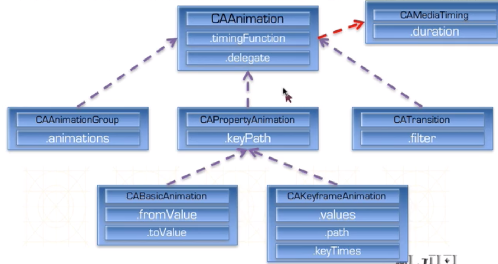</p>
</li>
<li><p>相关子类：</p>
<ul>
<li><strong>CAPropertyAnimation 对CALayer对象属性做动画</strong></li>
<li><p>相关属性：</p>
<pre><code class="lang-objc"><span class="hljs-comment">// 对于要做动画的 属性名路径</span>
<span class="hljs-keyword">@property</span>(nullable, <span class="hljs-keyword">copy</span>) <span class="hljs-built_in">NSString</span> *keyPath;

<span class="hljs-keyword">@property</span>(getter=isAdditive) <span class="hljs-built_in">BOOL</span> additive;
<span class="hljs-keyword">@property</span>(getter=isCumulative) <span class="hljs-built_in">BOOL</span> cumulative;
<span class="hljs-keyword">@property</span>(nullable, <span class="hljs-keyword">strong</span>) CAValueFunction *valueFunction;
</code></pre>
</li>
<li><p>相关子类：</p>
<ul>
<li><p><strong>CABasicAnimation 基本属性动画</strong></p>
<ul>
<li>一个属性一次只能做一个值的动画</li>
<li>相关属性：<pre><code class="lang-objc"><span class="hljs-comment">// 对于属性动画要改变的值，可以用NSValue 包装</span>
<span class="hljs-keyword">@property</span>(nullable, <span class="hljs-keyword">strong</span>) <span class="hljs-keyword">id</span> fromValue;
<span class="hljs-keyword">@property</span>(nullable, <span class="hljs-keyword">strong</span>) <span class="hljs-keyword">id</span> toValue;
<span class="hljs-keyword">@property</span>(nullable, <span class="hljs-keyword">strong</span>) <span class="hljs-keyword">id</span> byValue;
</code></pre>
</li>
<li>相关子类：<ul>
<li><strong>CASpringAnimation 弹簧动画</strong></li>
</ul>
</li>
</ul>
</li>
<li><p><strong>CAKeyframeAnimation 帧动画</strong></p>
<ul>
<li>一个属性一次可以做多个值的动画</li>
<li><p>相关属性：</p>
<pre><code class="lang-objc"><span class="hljs-comment">// 按照属性值数组，从一个值到另一个值间的动画</span>
<span class="hljs-keyword">@property</span>(nullable, <span class="hljs-keyword">copy</span>) <span class="hljs-built_in">NSArray</span> *values;

<span class="hljs-comment">// 按照 CGPath 路径做动画</span>
<span class="hljs-keyword">@property</span>(nullable) CGPathRef path;

<span class="hljs-comment">// 动画执行方式，快、慢、均匀速度等</span>
<span class="hljs-keyword">@property</span>(nullable, <span class="hljs-keyword">copy</span>) <span class="hljs-built_in">NSArray</span>&lt;CAMediaTimingFunction *&gt; *timingFunctions;

<span class="hljs-comment">// 按照设置的方式去执行动画</span>
<span class="hljs-comment">// kCAAnimationRotateAuto ： 按照路径切线朝向的方向 执行动画</span>
<span class="hljs-comment">// kCAAnimationRotateAutoReverse</span>
<span class="hljs-keyword">@property</span>(nullable, <span class="hljs-keyword">copy</span>) CAAnimationRotationMode rotationMode;

<span class="hljs-comment">// 关键帧中间的值是怎么被计算的</span>
<span class="hljs-keyword">@property</span>(<span class="hljs-keyword">copy</span>) CAAnimationCalculationMode calculationMode;
</code></pre>
</li>
</ul>
</li>
<li><p><strong>CATransition 转场动画</strong></p>
<ul>
<li>转场动画可以<strong>做翻页效果、水滴效果等</strong></li>
<li><p>相关属性:</p>
<ul>
<li>type : 属性值，就确实动画方式
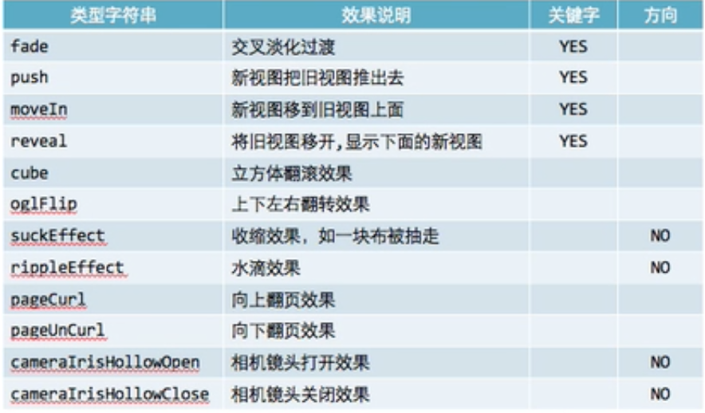</li>
</ul>
<pre><code class="lang-objc"><span class="hljs-comment">// 展现动画方式</span>
<span class="hljs-keyword">@property</span>(<span class="hljs-keyword">copy</span>) CATransitionType type;

<span class="hljs-comment">// 从上、下、左、右开始的展现动画方式</span>
<span class="hljs-comment">// values are `fromLeft', `fromRight', `fromTop' and `fromBottom'.</span>
<span class="hljs-keyword">@property</span>(nullable, <span class="hljs-keyword">copy</span>) CATransitionSubtype subtype;

<span class="hljs-comment">// 动画开始和结束的位置</span>
<span class="hljs-keyword">@property</span> <span class="hljs-keyword">float</span> startProgress;
<span class="hljs-keyword">@property</span> <span class="hljs-keyword">float</span> endProgress;
</code></pre>
</li>
</ul>
</li>
<li><p><strong>CAAnimationGroup 组动画</strong></p>
<ul>
<li>将不同的动画添加到组动画中，然后一个个动画按顺序执行</li>
<li>相关属性<pre><code class="lang-objc"><span class="hljs-comment">// 动画数组</span>
<span class="hljs-keyword">@property</span>(nullable, <span class="hljs-keyword">copy</span>) <span class="hljs-built_in">NSArray</span>&lt;CAAnimation *&gt; *animations;
</code></pre>
</li>
</ul>
</li>
</ul>
</li>
</ul>
</li>
</ul>
</li>
</ul>
<ul>
<li><strong>UIView 动画</strong></li>
<li><p>做动画时，改变了真实位置</p>
<ul>
<li><p>对于一些属性变化时动画</p>
<pre><code class="lang-objc">[<span class="hljs-built_in">UIView</span> animateWithDuration:<span class="hljs-number">5</span> animations:^{
  &lt;<span class="hljs-preprocessor">#code#&gt;</span>
} completion:^(<span class="hljs-built_in">BOOL</span> finished) {
  &lt;<span class="hljs-preprocessor">#code#&gt;</span>
}];

<span class="hljs-comment">// 有弹性动画</span>
[<span class="hljs-built_in">UIView</span> animateWithDuration:&lt;<span class="hljs-preprocessor">#(NSTimeInterval)#&gt; delay:<span class="hljs-title">&lt;#(NSTimeInterval)#&gt;</span> usingSpringWithDamping:<span class="hljs-title">&lt;#(CGFloat)#&gt;</span> initialSpringVelocity:<span class="hljs-title">&lt;#(CGFloat)#&gt;</span> options:<span class="hljs-title">&lt;#(UIViewAnimationOptions)#&gt;</span> animations:^{</span>
  &lt;<span class="hljs-preprocessor">#code#&gt;</span>
} completion:^(<span class="hljs-built_in">BOOL</span> finished) {
  &lt;<span class="hljs-preprocessor">#code#&gt;</span>
}];
</code></pre>
</li>
<li><p>转场动画</p>
<pre><code class="lang-objc"><span class="hljs-comment">// 从 view1 转到 view2 显示 动画，按动画时间、动画方式展现</span>
[<span class="hljs-built_in">UIView</span> transitionFromView:view1 toView:view2 duration:<span class="hljs-number">2</span> options:&lt;<span class="hljs-preprocessor">#(UIViewAnimationOptions)#&gt; completion:^(BOOL finished) {</span>
  &lt;<span class="hljs-preprocessor">#code#&gt;</span>
}];

<span class="hljs-comment">// 把 view 内的内容按指定的方式 和 时间 展现动画</span>
[<span class="hljs-built_in">UIView</span> transitionWithView:&lt;<span class="hljs-preprocessor">#(nonnull UIView *)#&gt; duration:<span class="hljs-title">&lt;#(NSTimeInterval)#&gt;</span> options:<span class="hljs-title">&lt;#(UIViewAnimationOptions)#&gt;</span> animations:^{</span>
  &lt;<span class="hljs-preprocessor">#code#&gt;</span>
} completion:^(<span class="hljs-built_in">BOOL</span> finished) {
  &lt;<span class="hljs-preprocessor">#code#&gt;</span>
}];
</code></pre>
</li>
</ul>
</li>
</ul>
<h4 id="uinavigationcontroller">UINavigationController</h4>
<ul>
<li><p><strong>自定义右滑删POP控制器的手势</strong></p>
<ul>
<li><p>分析：</p>
<ul>
<li>首先系统的右滑手势只能从最左边位置开始滑动，那么手势一定会有一个 target 和 action</li>
<li>那么 target 的 action 方法是实现系统右滑删除控制器手势的实现者</li>
<li>所以自定义的右滑手势的 target 与 action 也是与系统的一至，即先获取到 target 对象</li>
</ul>
</li>
<li><p>右滑手势实现</p>
<pre><code class="lang-objc">  <span class="hljs-comment">// 使用 runtime 动态获取类的所有属性</span>
<span class="hljs-comment">//    int onCont  ;</span>
<span class="hljs-comment">// 只能动态获取当前类定义的所有属性，即获取不到子类的属性 或者 父类的属性</span>
<span class="hljs-comment">// 只为找到 _targets 属性名</span>
<span class="hljs-comment">//    Ivar * ivarList = class_copyIvarList([UIGestureRecognizer class], &amp;onCont);</span>
<span class="hljs-comment">//    for (int i = 0 ; i &lt; onCont; i++) {</span>
<span class="hljs-comment">//        Ivar var = ivarList[i];</span>
<span class="hljs-comment">//        char * name = ivar_getName(var);</span>
<span class="hljs-comment">//        NSLog(@"%@",@(name));</span>
<span class="hljs-comment">//    }</span>

<span class="hljs-comment">// 自定义删除控制器手势</span>
UIScreenEdgePanGestureRecognizer * edgePan = <span class="hljs-keyword">self</span><span class="hljs-variable">.interactivePopGestureRecognizer</span> ;
<span class="hljs-built_in">NSLog</span>(<span class="hljs-string">@"%ld====%@,"</span>,edgePan<span class="hljs-variable">.edges</span>,<span class="hljs-keyword">self</span><span class="hljs-variable">.interactivePopGestureRecognizer</span>);

<span class="hljs-comment">// kvc 获取属性值</span>
<span class="hljs-built_in">NSMutableArray</span> * value = [edgePan valueForKey:<span class="hljs-string">@"_targets"</span>];
<span class="hljs-comment">// [0]    UIGestureRecognizerTarget *    0x600001a8aca0    0x0000600001a8aca0</span>
<span class="hljs-keyword">id</span> recognizerTarget = [value firstObject];
<span class="hljs-comment">// &lt;(action=handleNavigationTransition:, target=&lt;_UINavigationInteractiveTransition 0x7ff036c070c0&gt;)&gt;</span>
<span class="hljs-keyword">id</span> target = [recognizerTarget valueForKey:<span class="hljs-string">@"_target"</span>];

<span class="hljs-comment">// 自定义的删除手势 ,</span>
[<span class="hljs-keyword">self</span><span class="hljs-variable">.view</span> removeGestureRecognizer:<span class="hljs-keyword">self</span><span class="hljs-variable">.interactivePopGestureRecognizer</span>];
UIPanGestureRecognizer * navPanGesture = [[UIPanGestureRecognizer alloc] initWithTarget:target action:<span class="hljs-keyword">@selector</span>(handleNavigationTransition:)];
[<span class="hljs-keyword">self</span><span class="hljs-variable">.view</span> addGestureRecognizer:navPanGesture];
<span class="hljs-comment">// 如果根控制器右滑出现BUG就在显示根控制器时把手势屏蔽掉</span>
</code></pre>
</li>
</ul>
</li>
</ul>
<h3 id="webview">WebView</h3>
<h4 id="uiview-">UIView 相关的属性</h4>
<ul>
<li><p>frame</p>
<ul>
<li><p>CGRact 属性，代表位置</p>
<pre><code class="lang-objc">
  <span class="hljs-comment">// view.frame.origin.y += 100 // 这样子做不行的</span>

<span class="hljs-comment">// 下面的方法是可以实现的</span>
  CGRact frame = view<span class="hljs-variable">.frame</span>;
  frame<span class="hljs-variable">.origin</span><span class="hljs-variable">.y</span> += <span class="hljs-number">100</span> ;
  view<span class="hljs-variable">.frame</span> = frame ;
</code></pre>
</li>
</ul>
</li>
<li>backgroundColor<ul>
<li>UIColor 属性，背景颜色</li>
</ul>
</li>
<li><strong>transform 更改 位置、缩放 和 旋转</strong></li>
<li><p><strong>UIResponder 事件传递（touchs、）：从父控件-&gt;子控件，层层寻找到最适合处理事件的 view</strong></p>
<ul>
<li>UIView 继承了 UIResponder,因为继承了UIResponder，所以才会有事件监听</li>
<li>UIApplication 事件队列，将事件传给 keyWindow ；</li>
<li>然后层层找到最合适的view</li>
<li><p>如果最合适的 view 没有处理事件，那么就会一层层向上回溯，直到找到已经可以处理事件最合适的view，向上事件传递的过程就是<strong>响应链，每一个 view 或都 viewController 都是响应者。</strong></p>
<ul>
<li>如果控制器的 view 是当前响应者，那么 viewController 就是下一个成为响应者。</li>
<li>如果当前响应者不是控制器的view ，那么下一个成为响应者的就是 view.superview。</li>
</ul>
<pre><code class="lang-objc">  <span class="hljs-comment">// 比如（从左到右先后添加的 view）：keyWindow( view1(view11,view12) , view2(view21,view22) )</span>
  <span class="hljs-comment">// 现在触摸了 view11</span>
  <span class="hljs-comment">// 查找最适合的view时：keyWindow(hitTest:) -&gt; view2(hitTest:) -&gt; view1(hitTest:) -&gt; view12(hitTest:) -&gt; view11(hitTest:找到最适合的view层层返回（使用了线段树递归查找算法）)</span>
  - (nullable <span class="hljs-built_in">UIView</span> *)hitTest:(<span class="hljs-built_in">CGPoint</span>)point withEvent:(nullable UIEvent *)event;

  <span class="hljs-comment">// 判断当前点在不在当前 view 身上,也就是 view 对象方法</span>
  - (<span class="hljs-built_in">BOOL</span>)pointInside:(<span class="hljs-built_in">CGPoint</span>)point withEvent:(nullable UIEvent *)event;
</code></pre>
</li>
<li><p>事件监听</p>
<pre><code class="lang-objc">  <span class="hljs-comment">// 触摸事件</span>
  - (<span class="hljs-keyword">void</span>)touchesBegan:(<span class="hljs-built_in">NSSet</span>&lt;UITouch *&gt; *)touches withEvent:(nullable UIEvent *)event;
  - (<span class="hljs-keyword">void</span>)touchesMoved:(<span class="hljs-built_in">NSSet</span>&lt;UITouch *&gt; *)touches withEvent:(nullable UIEvent *)event;
  - (<span class="hljs-keyword">void</span>)touchesEnded:(<span class="hljs-built_in">NSSet</span>&lt;UITouch *&gt; *)touches withEvent:(nullable UIEvent *)event;
  - (<span class="hljs-keyword">void</span>)touchesCancelled:(<span class="hljs-built_in">NSSet</span>&lt;UITouch *&gt; *)touches withEvent:(nullable UIEvent *)event;
  <span class="hljs-comment">// 摇一摇</span>
  - (<span class="hljs-keyword">void</span>)motionBegan:(UIEventSubtype)motion withEvent:(nullable UIEvent *)event NS_AVAILABLE_IOS(<span class="hljs-number">3</span>_0);
  - (<span class="hljs-keyword">void</span>)motionEnded:(UIEventSubtype)motion withEvent:(nullable UIEvent *)event NS_AVAILABLE_IOS(<span class="hljs-number">3</span>_0);
  - (<span class="hljs-keyword">void</span>)motionCancelled:(UIEventSubtype)motion withEvent:(nullable UIEvent *)event NS_AVAILABLE_IOS(<span class="hljs-number">3</span>_0);
  <span class="hljs-comment">// 远摇操作</span>
  - (<span class="hljs-keyword">void</span>)remoteControlReceivedWithEvent:(nullable UIEvent *)event NS_AVAILABLE_IOS(<span class="hljs-number">4</span>_0);
  <span class="hljs-comment">// 按、压</span>
  - (<span class="hljs-keyword">void</span>)pressesBegan:(<span class="hljs-built_in">NSSet</span>&lt;UIPress *&gt; *)presses withEvent:(nullable UIPressesEvent *)event NS_AVAILABLE_IOS(<span class="hljs-number">9</span>_0);
  - (<span class="hljs-keyword">void</span>)pressesChanged:(<span class="hljs-built_in">NSSet</span>&lt;UIPress *&gt; *)presses withEvent:(nullable UIPressesEvent *)event NS_AVAILABLE_IOS(<span class="hljs-number">9</span>_0);
  - (<span class="hljs-keyword">void</span>)pressesEnded:(<span class="hljs-built_in">NSSet</span>&lt;UIPress *&gt; *)presses withEvent:(nullable UIPressesEvent *)event NS_AVAILABLE_IOS(<span class="hljs-number">9</span>_0);
  - (<span class="hljs-keyword">void</span>)pressesCancelled:(<span class="hljs-built_in">NSSet</span>&lt;UIPress *&gt; *)presses withEvent:(nullable UIPressesEvent *)event NS_AVAILABLE_IOS(<span class="hljs-number">9</span>_0);
</code></pre>
</li>
</ul>
</li>
<li><p>UIGestureRecognizer 手势</p>
<ul>
<li>UITapGestureRecognizer 点击手势</li>
<li>UIPanGestureRecognizer 拖拽手势</li>
<li>UISwipeGestureRecognizer 轻扫手势</li>
<li>UIPinchGestureRecognizer 捻合手势</li>
<li>UIRotationGestureRecognizer 旋转手势</li>
<li>UILongPressGestureRecognizer 长按手势</li>
<li><p>解决手势冲突</p>
<pre><code class="lang-objc"><span class="hljs-comment">// 1.同时响应手势</span>
<span class="hljs-comment">//共存  A手势或者B手势 代理方法里有一个是返回YES，就能共存</span>
  - (<span class="hljs-built_in">BOOL</span>)gestureRecognizer:(UIGestureRecognizer *)gestureRecognizer shouldRecognizeSimultaneouslyWithGestureRecognizer:(UIGestureRecognizer *)otherGestureRecognizer {
      <span class="hljs-keyword">return</span> <span class="hljs-literal">YES</span>;
  }

  <span class="hljs-comment">// 2.优先级手势</span>
  <span class="hljs-comment">//让gestureTwo响应优先级低于gestureOne</span>
  [gestureTwo requireGestureRecognizerToFail:gestureOne];

  <span class="hljs-comment">//让自身这个手势事件响应优先级低于其它手势事件</span>
  <span class="hljs-comment">//只是在对于比它响应优先级低的手势调用</span>
  - (<span class="hljs-built_in">BOOL</span>)gestureRecognizer:(UIGestureRecognizer *)gestureRecognizer shouldBeRequiredToFailByGestureRecognizer:(UIGestureRecognizer *)otherGestureRecognizer  {
      <span class="hljs-keyword">return</span> <span class="hljs-literal">YES</span>;
  }

  <span class="hljs-comment">//让自身这个手势事件响应优先级高于其它手势事件</span>
  <span class="hljs-comment">//只是在对于比它响应优先级高的手势调用</span>
  - (<span class="hljs-built_in">BOOL</span>)gestureRecognizer:(UIGestureRecognizer *)gestureRecognizer shouldRequireFailureOfGestureRecognizer:(UIGestureRecognizer *)otherGestureRecognizer {
      <span class="hljs-keyword">return</span> <span class="hljs-literal">YES</span>;
  }
</code></pre>
</li>
</ul>
</li>
</ul>
<h4 id="uiview-">UIView 对象方法</h4>
<ul>
<li>把子控件放到最前面 -badgeNumberLable:(UIView *)view</li>
<li>把子控件放到最后面 -sendSubviewToBack:(UIView *)view</li>
</ul>
<h3 id="uiimage-">UIImage 加载方式的区别</h3>
<ul>
<li><p>方式一：占用资源</p>
<pre><code class="lang-objc"> <span class="hljs-comment">// 1.占用资源； 这种方式加载图片时只有程序消陈时才会释放创建出的对象资源</span>
 <span class="hljs-comment">// 2.可以加载images.xcassets中的图片,也可以加载项目中其他位置的图片</span>

 [<span class="hljs-built_in">UIImage</span> imageNamed:name];
</code></pre>
</li>
<li>方式二：内存优化</li>
</ul>
<pre><code class="lang-objc"><span class="hljs-comment">// 1.效率高；这种方式创建出来的对象只有在没有强引用时就会被释放资源</span>
<span class="hljs-comment">// 2.不可以加载images.xcassets中的图片</span>

    [<span class="hljs-built_in">UIImage</span> imageWithContentsOfFile:[[<span class="hljs-built_in">NSBundle</span> mainBundle] pathForResource:<span class="hljs-string">@"name"</span> ofType:<span class="hljs-string">@"jpg"</span>] ]
</code></pre>
<ul>
<li><p>把图片保存到相册中</p>
<pre><code class="lang-objc"><span class="hljs-comment">// 保存完图片后，如果需要完成保存后回调方法，那必须是只能传下面的方法</span>
<span class="hljs-comment">// 参数：要保存的图片，回调对象，回调方法（只能是这个方法，在回调对象类中定义并实该方法名和传参方式）, 需传的信息</span>
UIImageWriteToSavedPhotosAlbum(newImage, <span class="hljs-keyword">self</span>, <span class="hljs-keyword">@selector</span>(image:didFinishSavingWithError:contextInfo:), <span class="hljs-literal">nil</span>);
</code></pre>
</li>
<li><p>截取图片中某一部分图片</p>
<pre><code class="lang-objc"><span class="hljs-comment">// 注意的是：CGImageCreateWithImageInRect 传的 rect 是以像素为点的</span>
<span class="hljs-comment">//           但，ios 加载图片时根据 [UIScreen mainScreen].scale 比例加载@2x或@3x图片，所以要以ios的点大小乘上 [UIScreen mainScreen].scale 转成像素，就正确了</span>
CGImageCreateWithImageInRect(CGImageRef  _Nullable image, <span class="hljs-built_in">CGRect</span> rect)
</code></pre>
</li>
<li><p>图片渲染模式</p>
</li>
</ul>
<pre><code class="lang-objc"><span class="hljs-comment">// 图片被渲染时显示模式</span>
<span class="hljs-comment">// UIImageRenderingModeAutomatic : 系统默认的渲染模式，可能被处理过</span>
<span class="hljs-comment">// UIImageRenderingModeAlwaysOriginal : 渲染图片时，总是以原来样式显示，没有处理过图片</span>
<span class="hljs-comment">// UIImageRenderingModeAlwaysTemplate</span>
- (<span class="hljs-built_in">UIImage</span> *)imageWithRenderingMode:(UIImageRenderingMode)renderingMode
</code></pre>
<ul>
<li><p>图片拉申</p>
<pre><code class="lang-objc">
  <span class="hljs-comment">// 按图片设置的位置平铺</span>
  [[<span class="hljs-built_in">UIImage</span> imageNamed:<span class="hljs-string">@""</span>] resizableImageWithCapInsets:UIEdgeInsetsMake(<span class="hljs-built_in">CGFloat</span> top, <span class="hljs-built_in">CGFloat</span> left, <span class="hljs-built_in">CGFloat</span> bottom, <span class="hljs-built_in">CGFloat</span> right)];

  [[<span class="hljs-built_in">UIImage</span> imageNamed:<span class="hljs-string">@""</span>] stretchableImageWithLeftCapWidth:(<span class="hljs-built_in">NSInteger</span>) topCapHeight:(<span class="hljs-built_in">NSInteger</span>)]

  <span class="hljs-comment">// 按图片设置的位置拉申</span>
  [[<span class="hljs-built_in">UIImage</span> imageNamed:<span class="hljs-string">@""</span>] resizableImageWithCapInsets:UIEdgeInsetsMake(<span class="hljs-built_in">CGFloat</span> top, <span class="hljs-built_in">CGFloat</span> left, <span class="hljs-built_in">CGFloat</span> bottom, <span class="hljs-built_in">CGFloat</span> right) resizingMode:UIImageResizingModeStretch]
</code></pre>
</li>
</ul>
<h3 id="uitableview-">UITableView 性能优化</h3>
<h5 id="uitableviewcell-">UITableViewCell 复用</h5>
<ul>
<li><p>第一种：用代码方式自定义创建的QJTableViewCell 复用</p>
<ul>
<li><p>方式一：</p>
<pre><code class="lang-objc"><span class="hljs-comment">// 第一步：注册QJTableViewCell</span>
[<span class="hljs-keyword">self</span><span class="hljs-variable">.tableView</span> registerClass:[QJTableViewCell class] forCellReuseIdentifier:<span class="hljs-string">@"ID"</span>];

<span class="hljs-comment">// 第二步实现tableView:cellForRowAtIndexPath:</span>
-(<span class="hljs-built_in">UITableViewCell</span> *)tableView:(<span class="hljs-built_in">UITableView</span> *)tableView cellForRowAtIndexPath:(<span class="hljs-built_in">NSIndexPath</span> *)indexPath
{
  QJTableViewCell * cell = [tableView dequeueReusableCellWithIdentifier:<span class="hljs-string">@"ID"</span>];

  <span class="hljs-keyword">return</span> cell;
}
</code></pre>
</li>
</ul>
</li>
<li><p>方式二：</p>
<pre><code class="lang-objc"> <span class="hljs-comment">// 第一步：在QJTableViewCell中实现父类方法</span>
     - (instancetype)initWithStyle:(UITableViewCellStyle)style reuseIdentifier:(nullable <span class="hljs-built_in">NSString</span> *)reuseIdentifier
 {
     <span class="hljs-keyword">if</span>(<span class="hljs-keyword">self</span> = [<span class="hljs-keyword">super</span> initWithStyle:style reuseIdentifier:reuseIdentifier]){
         .......
     }
     reture <span class="hljs-keyword">self</span> ;
 }

 <span class="hljs-comment">// 第二步：实现UITableViewDataSource数据源方法</span>
 -(<span class="hljs-built_in">UITableViewCell</span> *)tableView:(<span class="hljs-built_in">UITableView</span> *)tableView cellForRowAtIndexPath:(<span class="hljs-built_in">NSIndexPath</span> *)indexPath
{
 QJTableViewCell * cell = [tableView dequeueReusableCellWithIdentifier:<span class="hljs-string">@"ID"</span>];
 <span class="hljs-keyword">if</span> (!cell) {
     cell = [[<span class="hljs-built_in">UITableViewCell</span> alloc] initWithStyle:UITableViewCellStyleDefault reuseIdentifier:<span class="hljs-string">@"ID"</span>];
 }
 <span class="hljs-keyword">return</span> cell;
}
</code></pre>
</li>
<li><p>第二种：用<strong>xib</strong>方式创建的<strong>QJTableViewCell.xib</strong> 复用</p>
<pre><code class="lang-objc"> <span class="hljs-comment">// 第一步：设置在xib中的一个属性reuseIdentifier = @"ID"</span>
 <span class="hljs-comment">// 第二步：</span>
 <span class="hljs-comment">// 1：在QJTableViewCell中实现父类方法</span>
 -(<span class="hljs-keyword">void</span>)awakeFromNib
 {
     [<span class="hljs-keyword">super</span> awakeFromNib];
     ....
 }

 <span class="hljs-comment">// 2：实现UITableViewDataSource数据源方法</span>
 -(<span class="hljs-built_in">UITableViewCell</span> *)tableView:(<span class="hljs-built_in">UITableView</span> *)tableView cellForRowAtIndexPath:(<span class="hljs-built_in">NSIndexPath</span> *)indexPath
 {
     QJTableViewCell * cell = [tableView dequeueReusableCellWithIdentifier:<span class="hljs-string">@"ID"</span>];
     <span class="hljs-keyword">if</span> (!cell) {
         cell = [[[<span class="hljs-built_in">NSBundle</span> mainBundle] loadNibName:NSStringFromClass([QJTableViewCell class]) owner:<span class="hljs-literal">nil</span> options:<span class="hljs-literal">nil</span>] lastObject];
     }
     <span class="hljs-keyword">return</span> cell;
 }
</code></pre>
</li>
</ul>
<h4 id="uitableviewcell-">UITableViewCell 实现左滑自定义按钮文字和背景色</h4>
<p>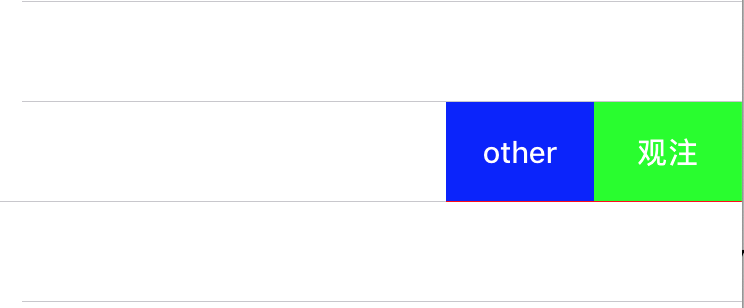</p>
<pre><code class="lang-objc"><span class="hljs-comment">// 实现UITableViewDalegate 方法</span>
-(<span class="hljs-built_in">NSArray</span>&lt;UITableViewRowAction *&gt; *)tableView:(<span class="hljs-built_in">UITableView</span> *)tableView editActionsForRowAtIndexPath:(<span class="hljs-built_in">NSIndexPath</span> *)indexPath
{
    <span class="hljs-comment">// cell左滑后显示的自定义的文字或颜色</span>
    UITableViewRowAction * action1 = [UITableViewRowAction rowActionWithStyle:UITableViewRowActionStyleNormal title:<span class="hljs-string">@"观注"</span> handler:^(UITableViewRowAction * _Nonnull action, <span class="hljs-built_in">NSIndexPath</span> * _Nonnull indexPath) {
        <span class="hljs-keyword">self</span><span class="hljs-variable">.addBlock</span> = ^<span class="hljs-built_in">NSInteger</span>(<span class="hljs-built_in">NSInteger</span> a, <span class="hljs-built_in">NSInteger</span> b) {
            <span class="hljs-keyword">return</span> a + b ;
        };
        <span class="hljs-built_in">NSLog</span>(<span class="hljs-string">@"%ld"</span>, <span class="hljs-keyword">self</span><span class="hljs-variable">.addBlock</span>(<span class="hljs-number">10</span>, <span class="hljs-number">20</span>));

    }];
    action1<span class="hljs-variable">.backgroundColor</span> = [<span class="hljs-built_in">UIColor</span> greenColor];

    UITableViewRowAction * action2 = [UITableViewRowAction rowActionWithStyle:UITableViewRowActionStyleNormal title:<span class="hljs-string">@"other"</span> handler:^(UITableViewRowAction * _Nonnull action, <span class="hljs-built_in">NSIndexPath</span> * _Nonnull indexPath) {

        <span class="hljs-comment">// 点击后需要实现的操作</span>

    }];
    action2<span class="hljs-variable">.backgroundColor</span> = [<span class="hljs-built_in">UIColor</span> blueColor];

    <span class="hljs-keyword">return</span> @[action1,action2];
}
</code></pre>
<h4 id="uitableview-">UITableView 编辑模式</h4>
<ul>
<li>点左右侧的按钮就等于左滑功能
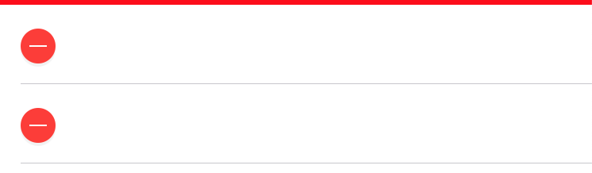</li>
<li>实现代码<pre><code class="lang-objc"><span class="hljs-keyword">self</span><span class="hljs-variable">.tableView</span><span class="hljs-variable">.editing</span> = <span class="hljs-literal">YES</span> ;
</code></pre>
</li>
</ul>
<h4 id="uitableview">UITableView右侧编辑模式下多选功能，���批量删除</h4>
<ul>
<li><p>右侧编辑模式下多选样式
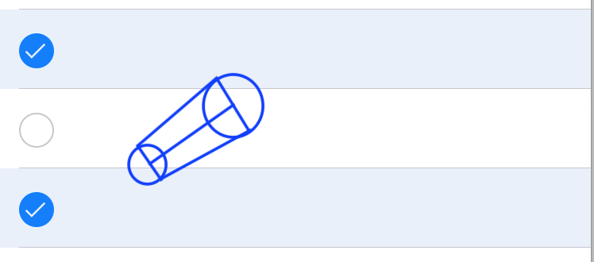</p>
</li>
<li><p>实现代码</p>
<pre><code class="lang-objc">  <span class="hljs-comment">// 进入右侧编辑模式</span>
  <span class="hljs-keyword">self</span><span class="hljs-variable">.tableView</span><span class="hljs-variable">.editing</span> = <span class="hljs-literal">YES</span> ;
  <span class="hljs-comment">// 可多选</span>
  <span class="hljs-keyword">self</span><span class="hljs-variable">.tableView</span><span class="hljs-variable">.allowsMultipleSelectionDuringEditing</span> = <span class="hljs-literal">YES</span> ;

  <span class="hljs-comment">// 查看多选cell的indexPath</span>
 <span class="hljs-built_in">NSArray</span> * indexPathArray = <span class="hljs-keyword">self</span><span class="hljs-variable">.tableView</span><span class="hljs-variable">.indexPathsForSelectedRows</span> ;
</code></pre>
</li>
</ul>

                    
                    </section>
                
                
                </div>
            </div>
        </div>

        
        
        <a href="./xcode.html" class="navigation navigation-next navigation-unique" aria-label="Next page: xcode"><i class="fa fa-angle-right"></i></a>
        
    </div>
</div>

        
<script src="gitbook/app.js"></script>

    
    <script src="https://cdn.mathjax.org/mathjax/2.4-latest/MathJax.js?config=TeX-AMS-MML_HTMLorMML"></script>
    

    
    <script src="gitbook/plugins/gitbook-plugin-mathjax/plugin.js"></script>
    

<script>
require(["gitbook"], function(gitbook) {
    var config = {"fontSettings":{"theme":null,"family":"sans","size":2}};
    gitbook.start(config);
});
</script>

        
    </body>
    
</html>
